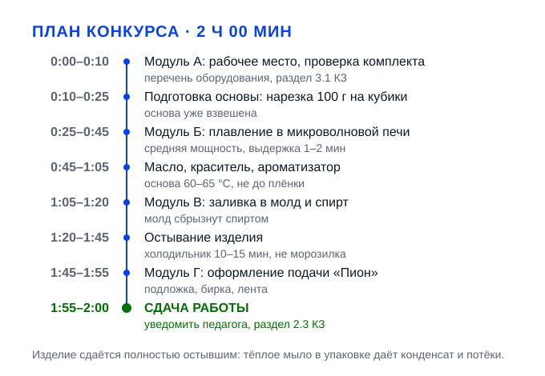
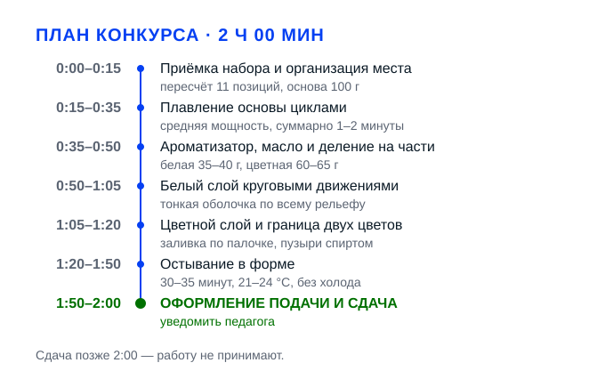
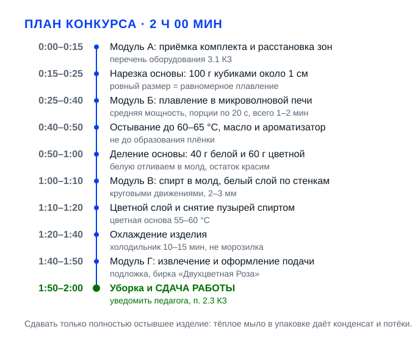

Мыловарение (ФВ)
Задания ниже — официальные файлы «Абилимпикс» (источник: abilympics-russia.ru), разложенные по категориям. Решения написаны по тексту задания, регламенту и критериям оценки; в них указано, что именно проверяет эксперт.
Школьник
14–16 лет, базовый уровень заданияВ официальном файле категории не разделены отдельными разделами — приводим задание целиком; различия по категориям смотрите в таблице модулей.
Пошаговое решение
Школьникам нужно изготовить сувенирное мыло «Пион» за 2 часа, и весь путь в задании расписан по шагам: плавление мыльной основы в микроволновой печи при средней температуре с выдержкой 1–2 минуты, остывание до состояния «чуть тёплое, но ещё без плёнки», введение масла, красителя и ароматизатора, заливка в форму, которую предварительно сбрызгивают спиртом, полное остывание и оформление подачи. Набор на одного участника перечислен целиком: печь, силиконовый коврик, мерный стакан 200 мл, палочки, пипетка, подложка, молд, 100 граммов основы, краситель, ароматизатор и масло. Оценивают не только сам сувенир, но и три вещи из раздела 2.3: организовано ли рабочее место, выполнено ли изделие согласно описанию и иллюстрациям, приведено ли место в порядок и уведомлён ли педагог об окончании работы. Поэтому время распределяйте с запасом на уборку, а не тратьте его целиком на декорирование.

Задача 1. Организовать рабочее место и подготовить материалыМодуль А · подготовка · 0:00–0:25
До первого нажатия кнопки на микроволновой печи всё должно лежать на своих местах, а руки и стол должны быть готовы к горячему и липкому. Мыльная основа плавится быстро, и если в этот момент вы начнёте искать пипетку или отдирать упаковку от красителя, масса остынет или схватится плёнкой, а время уйдёт из модулей. Двадцать пять минут на подготовку — это много, и тратить их надо на проверку, нарезку и раскладку, а не на перестановку предметов с места на место.
Действие 1.1. Принять оборудование и сверить комплект
Шаг 1.1.1
Раскладываем всё, что выдано, на столе и сверяем с перечнем оборудования из раздела 3.1 задания: микроволновая печь, силиконовый коврик, мерный стакан на 200 мл, деревянные палочки для размешивания, пипетка, подложка, молд, мыльная основа 100 граммов, краситель, ароматизатор и масло — по одной штуке каждого. Сверяем не на глаз, а перекладывая предметы по списку слева направо, чтобы пустая строка сразу была видна: чего нет, чего два и что лежит не то. Особое внимание уделяем молду: он должен быть именно той формы, которая нужна для «Пиона», потому что от рельефа зависит, читается ли цветок.
Приёмка — единственный момент, когда недостающее ещё можно получить без объяснений: после старта замена идёт только через эксперта. В задании набор описан поимённо, и в критерии «организовать рабочее место» входит именно готовность к работе, а не наличие красивой картинки на столе. Если молд окажется от другой фигуры, вся задумка с «Пионом» рассыплется ещё до плавления, и никакая техника исполнения это не исправит.
Все двенадцать позиций перечня отмечены и лежат перед вами, пипетка на месте и не забита, стакан целый, молд не имеет трещин. Проверьте объём стакана по насечке: 100 граммов расплавленной основы занимают примерно 100 мл, то есть половину стакана на 200 мл, и это должно быть видно по шкале.
Самая частая ошибка — не проверить пипетку: она забита застывшей основой или красителем, и в нужный момент капля не идёт, участник начинает лить из флакона и перекрашивает массу в тёмный цвет. Вторая ошибка — принять молд с трещиной по краю: при извлечении изделие рвётся по этому месту.
Эксперт проходит по рабочим местам до старта и смотрит, разложен ли комплект и не ищет ли участник чего-то в последнюю минуту. Ему видно и то, сверялся участник с перечнем или работал наугад.
Шаг 1.1.2
Осматриваем посуду и формы на дефекты: у мерного стакана проверяем край и насечки, у молда — внутреннюю поверхность на ощупь и на просвет, у подложки — чистоту и отсутствие ворса. Силиконовый молд промываем тёплой водой и протираем насухо, а не вытираем наспех полотенцем: ворсинки, оставшиеся в углублениях лепестков, потом окажутся вмурованными в мыло и будут видны на лицевой стороне.
Мыльная основа застывает точно повторяя рельеф, поэтому любой дефект формы становится дефектом изделия, а не остаётся на форме. Ворс и пыль в молде — это брак, который нельзя убрать после извлечения, и он напрямую бьёт по критерию «выполнить изделие согласно описанию и иллюстрациям».
Молд сухой, без капель, без ворса в углублениях, стенки упругие и не липнут к пальцам. Стакан прозрачный, без трещин и сколов на кромке — при нагреве треснувший стакан может лопнуть в печи. Осмотрите кромку стакана на скол: даже маленькая выщербленная точка при нагреве становится трещиной.
Протереть молд бумажным полотенцем и оставить в нём ворс, решив, что «не видно». Потом эти волоски всплывут на лицевой стороне лепестка, и убрать их уже невозможно. Вторая ошибка — мыть молд с мылом и не сполоснуть: остаток мыла даёт на изделии матовый налёт.
Эксперт смотрит молд и стакан при приёмке и повторно — перед заливкой, когда видно, чистая ли форма. Отдельно он смотрит, не вытирает ли участник форму полотенцем насухо у него на глазах, — эта привычка сразу говорит о том, понимает ли он, что ворс из мыла уже не убрать.
Шаг 1.1.3
Проверяем микроволновую печь до включения: камера чистая и без посторонних предметов, стеклянный поддон стоит на месте и не болтается, дверца закрывается плотно, уплотнитель целый, внутри нет металлической посуды и фольги. Рядом с печью не должны лежать бумага, полотенца и упаковка от основы. Если на печи есть регулятор мощности, сразу выставляем среднюю — именно её требует задание для плавления.
Пункт 5.1 требований охраны труда прямо говорит о наличии и исправности нагревательных поверхностей и об отсутствии посторонних предметов внутри и вокруг оборудования, и это условие допуска к работе. Металл в камере даёт искры и портит печь, а забытое полотенце над ней — реальный риск возгорания при двухминутной выдержке.
Дверца закрывается без зазора, поддон лежит ровно, камера пустая и сухая, регулятор стоит на средней мощности. Проверьте, что рядом есть свободное место, куда вы поставите горячий стакан: не на край стола и не на силиконовый коврик, который от горячего деформируется.
Поставить стакан с основой в печь, не проверив поддон: перекошенный поддон вращается рывками, стакан опрокидывается, и основа выливается внутрь печи. Вторая ошибка — включить максимальную мощность, чтобы «быстрее».
Эксперт проверяет исправность оборудования на входе и следит, работаете ли вы на средней мощности, как предписано в разделе 2.3 задания. Вопрос о мощности он может задать сразу после первого импульса: правильный ответ — средняя, чтобы основа не закипела по краям.
Действие 1.2. Разложить рабочее место по зонам
Шаг 1.2.1
Делим стол на три зоны и закрепляем их предметами, а не памятью: слева — сырьё и добавки, в центре на силиконовом коврике — рабочая зона, где стоит стакан и лежат палочки и пипетка, справа — подложка, молд и место под готовое изделие. Силиконовый коврик кладём так, чтобы его край выходил за границу горячего стакана на 10–15 сантиметров: капля расплавленной основы, упавшая на голый стол, прилипает мгновенно и снимается только ножом.
Зоны нужны потому, что мыльная масса липкая и горячая, и любое лишнее движение поперёк стола — это потянувшийся след и потерянные секунды. Кроме того, аккуратная раскладка — первое, что видит эксперт, оценивая организацию рабочего места, и по ней он понимает, продуман ли порядок действий.
Три зоны читаются с одного взгляда: добавки не стоят в рабочей зоне, молд не лежит под рукой там, где вы мешаете, подложка свободна. Проверьте расстояния — до каждой зоны можно дотянуться, не вставая и не наклоняясь через горячий стакан.
Сложить всё в одну кучу перед собой: пипетка падает в основу, флакон с красителем переворачивается локтём, и половина времени уходит на вытирание стола вместо работы. Ещё одна типичная ошибка — поставить открытый флакон с красителем в рабочую зону, рядом со стаканом: одно неловкое движение локтём, и розовое пятно остаётся на всём, включая одежду.
Эксперт оценивает организацию рабочего места визуально в начале конкурса и отмечает, поддерживается ли порядок в процессе. Ему важно увидеть, что зоны не меняются по ходу работы: если к концу конкурса добавки переехали в центр стола, порядок был формальным.
Шаг 1.2.2
Организуем свет и посадку так, как требует раздел 5.1: рабочее место хорошо освещено, свет падает на работу слева, сидим прямо, касаясь спиной спинки стула, расстояние от глаз до работы 35–40 сантиметров. Лампу или настольный светильник ставим слева и чуть впереди, чтобы тень от рук не падала на молд: именно в тени не видно пузырей и неровностей заливки.
Цвет мыла оценивают глазами, и при плохом свете розовый краситель легко перелить: на тёплом жёлтом свете масса кажется бледной, участник добавляет ещё каплю и получает насыщенный малиновый вместо нежного пиона. Требование о свете слева и о расстоянии до работы — это не формальность, а условие точности при работе с мелкими деталями.
Тень от правой руки не закрывает стакан и молд, глазам не приходится напрягаться, спина прямая. Проверьте просто: положите палочку в рабочую зону и посмотрите, видно ли её кончик без наклона корпуса. Лампу поставьте так, чтобы она не нагревала рабочую зону: тёплый свет искажает оттенок розового.
Сесть боком к свету и работать в собственной тени — тогда пузыри на поверхности замечаются уже после застывания, когда исправлять поздно. Третья ошибка — работать стоя, наклонившись над столом: спина устаёт к середине задания, и точность движений при заливке падает.
Требования охраны труда входят в оценку, и эксперт отмечает, соблюдены ли освещение и посадка. Нарушение он фиксирует в тот момент, когда участник наклоняется к массе почти вплотную, чтобы рассмотреть цвет: расстояние до работы уже меньше 35 сантиметров.
Шаг 1.2.3
Надеваем фартук или рабочую одежду, убираем волосы, закатываем рукава, а на руки при работе с концентрированным красителем надеваем перчатки. Рядом с рабочей зоной кладём сухие бумажные салфетки: ими удобно вытереть каплю с коврика и снять остаток массы с палочки. Влажная тряпка тоже нужна, но не у самого стакана — капля воды в расплавленной основе даёт вспенивание.
Краситель для мыла концентрированный и красит кожу и ногти на несколько дней, а горячая основа оставляет ожог уже при 60 градусах. Салфетки под рукой — это не про чистоту, а про скорость: каждая капля, которую вытирают сразу, стоит три секунды, а засохшая снимается вместе с верхним слоем коврика.
Руки сухие, перчатки надеты, салфетки в пределах досягаемости, на столе нет открытых бутылок с водой и напитков. Проверьте, что рукава не свисают над стаканом: ткань тянется за собой горячую массу. Перчатки должны сидеть плотно по пальцам: свободные концы цепляют стакан и оставляют следы в ещё жидкой массе.
Работать в школьной форме с длинным рукавом и без перчаток: брызги красителя остаются на манжете и потом переносятся на изделие, а отпечатки пальцев — на прозрачной стороне мыла. Не убрать волосы — тоже нарушение: один волос в прозрачном мыле виден на просвет и перечёркивает всю работу с рельефом.
Эксперт фиксирует спецодежду и аккуратность до старта и по ходу работы. Кроме того, он отмечает, есть ли у участника салфетки и чем он вытирает руки: бумажное полотенце вместо общего вафельного — признак правильной организации.
Действие 1.3. Подготовить основу и добавки
Шаг 1.3.1
Нарезаем мыльную основу на кубики со стороной 1–1,5 сантиметра. Режем на разделочной доске или на подложке ножом, а если основа мягкая, ломаем руками по насечкам: кубики должны быть примерно одного размера, потому что мелкие пластинки расплавятся за двадцать секунд и начнут перегреваться, пока крупные ещё держат форму. Из выданных 100 граммов получается примерно горсть кубиков — это и есть весь объём будущего «Пиона».
Равномерная нарезка сокращает время плавления и снижает риск перегрева: основа плавится при 60–70 градусах, а если греть её дольше нужного, она теряет прозрачность, темнеет и начинает пахнуть. Задание отводит на всё 2 часа, и каждая лишняя минута у печи — это минута, снятая с остывания изделия.
Кубики одинаковые, без крошки и пыли, общий вес 100 граммов — если на столе осталась мелочь, её тоже ссыпаем в стакан, потому что объём заливки рассчитан именно на этот вес. Проверьте: нарезанная основа должна занимать около половины стакана на 200 мл.
Нарезать крупными кусками по 3–4 сантиметра: снаружи они расплавятся, внутри останутся твёрдыми, и при размешивании вы получите комки, которые потом застрянут в лепестках молда. Не взвесить основу, если она выдана не целым куском: недобор в десять граммов даёт недолитые лепестки, и это видно на подаче.
Эксперт смотрит, подготовлена ли основа до включения печи, и обращает внимание на однородность кусков. При этом он смотрит и на крошку: если на столе осталась мыльная пыль от нарезки, её сметают сразу, потому что в молд она попадёт вместе с массой.
Шаг 1.3.2
Готовим краситель и ароматизатор: откручиваем крышки, ставим флаконы в левую зону, проверяем, что пипетка набирает жидкость и не подтекает. Сразу считаем дозировки на 100 граммов основы: ароматизатора нужно 2–3 миллилитра, то есть примерно 2–3 процента от массы, красителя — одна-две капли, масла — половина чайной ложки, то есть 2–5 миллилитров. Записывать эти цифры удобно на листке, потому что считать капли в горячке заливки невозможно.
Передозировка ароматизатора делает мыло приторным и раздражающим для кожи, а передозировка красителя — тёмным и пачкающим. Недодозировка тоже брак: бледное мыло «Пион» не читается как пион, а запах не слышен уже через неделю. Точные проценты и есть та часть работы, которую эксперт проверяет по описанию изделия.
Пипетка набирает и держит жидкость, флаконы открыты и стоят устойчиво, на листке записаны три цифры: 2–3 мл ароматизатора, 1–2 капли красителя, 2–5 мл масла. Проверьте, что краситель размешан во флаконе: густой пигмент оседает, и первая капля может быть почти чистой водой.
Набирать краситель той же пипеткой, что и ароматизатор, не промыв: пипетка окрашивается, и ароматизатор получает цветной след. Вторая ошибка — лить краситель «на глаз» из флакона, где нет капельницы. Третья ошибка — открыть все флаконы сразу и поставить их вплотную: пипетка путается, и в ароматизатор попадает краситель.
Эксперт может спросить, сколько чего вы добавили, и по ответу видит, считал ли участник дозировку. Вопрос о дозировке он задаёт чаще всего именно здесь, у стола с добавками, пока флаконы открыты и видно, сколько набрано.
Шаг 1.3.3
Последним готовим масло и инструмент для съёма пузырей: отмеряем половину чайной ложки базового масла в отдельную маленькую ёмкость, ставим рядом деревянные палочки — одну для размешивания, вторую чистую для съёма пены, и готовим пульверизатор со спиртом. Спирт наливаем в чистый пульверизатор заранее и проверяем факел нажатием в сторону, а не над столом: первые капли всегда крупные.
Масло в мыле из основы играет роль смягчителя, но вводить его больше 5 процентов нельзя: масса перестаёт держать форму и изделие остаётся липким. Спирт нужен дважды — им сбрызгивают молд и поверхность заливки, и если пульверизатор не проверен, вместо мелкого тумана вы получите струю, которая оставит вмятины на ещё жидкой поверхности.
Масло отмерено, ёмкость подписана или стоит на своём месте, пульверизатор даёт мелкое облако с расстояния 15–20 сантиметров, палочки сухие и чистые. Проверьте ещё раз, что рядом нет открытого огня: спирт горюч.
Держать спирт в бутылке без пульверизатора и лить его ложкой: на поверхности заливки остаются лужицы, спирт разъедает рельеф и оставляет белые точки. Вторая ошибка — налить масло в стакан заранее, до плавления.
Эксперт смотрит, готова ли посуда для добавок и не пахнет ли бокс спиртом раньше времени. Отдельно фиксируется, стоят ли горючие жидкости в стороне от печи: спирт рядом с нагревательным прибором — прямое нарушение требований охраны труда.
Задача 2. Расплавить основу и ввести добавкиМодуль Б · плавление · 0:25–1:05
Сорок минут уходит на самое ответственное: превратить сто граммов твёрдой основы в ровную тёплую массу нужного цвета и запаха. Здесь всё построено на температуре: при перегреве основа желтеет и мутнеет, при переохлаждении схватывается плёнкой, а ароматизатор уходит вместе с паром. Работа идёт импульсами по тридцать секунд со средней мощностью печи и перемешиванием между ними, добавки вводятся строго по порядку — масло, краситель, отдушка, а перед заливкой масса выводится на 55–60 градусов и освобождается от пузырей.
Действие 2.1. Расплавить основу в микроволновой печи
Шаг 2.1.1
Ставим стакан с нарезанной основой в микроволновую печь, включаем среднюю мощность и первый раз держим 30 секунд. Дальше работаем импульсами: 30 секунд греем, вынимаем, перемешиваем, снова ставим — и так до полного расплавления, суммарно 1–2 минуты, как указано в задании. Стакан берём за верхний край прихваткой или полотенцем, а не за стенки: стекло нагревается до температуры основы и обжигает пальцы уже через минуту.
Задание предписывает среднюю температуру с выдержкой 1–2 минуты, и это не перестраховка: на полной мощности основа закипает по краям, внутри остаётся твёрдой, а перегретая часть теряет пластичность и начинает пахнуть варёным мылом. Импульсы с перемешиванием дают равномерный нагрев: вы видите состояние массы каждые полминуты и не пропускаете момент, когда она готова.
Основа полностью жидкая, без комков и крупинок, цвет ровный, стенки стакана чистые. Наклоняйте стакан: если по дну ездит нерастаявший кусок, значит плавление не закончено, и нужен ещё один импульс на 20 секунд.
Греть непрерывно две минуты на максимуме: сверху образуется плотная плёнка, снизу масса пригорает, и при размешивании в мыле появляются жёлтые хлопья, которые видны в готовом изделии как грязные вкрапления.
Эксперт отмечает, работает ли участник на средней мощности и короткими импульсами, как требует раздел 2.3 задания, а не гонит процесс на максимуме. Если он видит, что стакан вынимают голыми руками, это отмечается как нарушение техники безопасности, а не как мелочь.
Шаг 2.1.2
Перемешиваем деревянной палочкой медленно, круговыми движениями от центра к стенкам, соскребая массу со дна и с боков стакана. Палочку держим почти вертикально и не взбиваем: движения должны быть плавными и без резких рывков, иначе в массе остаются воздушные пузыри. После каждого импульса мешаем 10–15 секунд и только потом ставим стакан обратно. Палочку держим одной рукой, второй придерживаем стакан за верхний край.
Пузыри — главный враг прозрачного мыла: они поднимаются к поверхности, лопаются неравномерно и оставляют на лицевой стороне раковины и кратеры. Медленное размешивание ещё и выравнивает температуру по объёму, поэтому следующий импульс нагревает массу равномерно и не перегревает придонный слой.
По стенкам не остаётся прилипших кусочков, масса однородная и гладкая, на поверхности нет крупных пузырей и пены. Проведите палочкой по дну: она должна идти ровно, без уплотнений и налипаний. На стенках не должно оставаться матового кольца на уровне массы: оно означает, что у края основа уже схватилась.
Взбивать массу как тесто или размешивать быстро и резко: пены становится столько, что её не снять, и в изделии остаются мелкие пузырьки по всему объёму лепестка. Третья ошибка — мешать той же палочкой, которой снимали пену: она возвращает пузыри обратно в массу.
Эксперт наблюдает за техникой размешивания: медленные движения без взбивания — признак, что участник понимает материал. Он смотрит на скорость движения палочки: быстрые взбивающие движения сразу выдают новичка, который не работал с основой.
Шаг 2.1.3
Контролируем температуру: после расплавления она должна быть в пределах 60–70 градусов. Если есть термометр, опускаем его в центр массы и ждём 10 секунд; если термометра нет, ориентируемся на ощущения — стакан держится в руке через полотенце, но масса не должна обжигать при коротком касании палочкой. Выше 75 градусов не поднимаем: снимаем стакан и даём постоять на коврике минуту.
При перегреве основа теряет прозрачность, желтеет и начинает пахнуть, а краситель в ней распределяется неравномерно, пятнами. Кроме того, горячую массу нельзя заливать в силиконовый молд: при температуре выше 80 градусов тонкий силикон размягчается и рельеф лепестка плывёт.
Термометр показывает 60–70 градусов, масса прозрачная, без желтизны и без запаха вареного мыла. Проверьте цвет на просвет у окна: расплав должен быть чистым, как стекло, а не мутным. Если термометра нет, капните массой на тыльную сторону ладони: при 60–65 градусах чувствуется отчётливое тепло, но не жжение.
Греть до состояния «чуть не кипит», считая, что горячее лучше растечётся: масса желтеет, а на поверхности образуется плотная корка, которая при заливке ложится складками. Ещё одна ошибка — греть стакан под закрытой крышкой: пар не выходит, и при открывании основа вскипает и выплёскивается на руки.
Эксперт может подойти с термометром в момент плавления; отклонение от 60–70 градусов фиксируется как нарушение технологии. Он может попросить назвать температуру плавления: уверенный ответ «60–70 градусов» показывает, что участник понимает, что происходит с материалом.
Шаг 2.1.4
Снимаем с поверхности пену и плёнку: проводим палочкой по краю стакана и собираем всплывшие пузыри на кончик, а не размешиваем их обратно. Если пена тонкая и равномерная, достаточно сбрызнуть её спиртом из пульверизатора с расстояния 15–20 сантиметров — одно нажатие, и пузыри лопаются сами. После съёма пены массу больше не перемешиваем резко. Пену снимаем до ввода добавок: после масла и красителя сделать это уже не получится, а окрашенная пена пачкает всё вокруг.
Пена на поверхности — это не только пузыри, но и частично перегретая основа с изменённой структурой; если её вмешать обратно, она пойдёт в изделие мутными прожилками. Спирт снижает поверхностное натяжение и заставляет пузыри схлопнуться, и это тот же приём, который задание предписывает при заливке.
Поверхность гладкая, пузырей нет, масса однородная от дна до края. Посмотрите на стакан сбоку на уровне глаз: линия поверхности должна быть ровной и блестящей. Если пузыри продолжают всплывать, подождите полминуты: значит, масса ещё отдаёт воздух, и заливать её рано.
Снимать пену вместе с большим количеством массы, теряя объём: на 100 граммов каждая потерянная ложка заметна, и изделие получается неполным, с плоским верхом. Ещё одна ошибка — снимать пену ложкой, зачерпывая вместе с ней треть стакана: объёма не хватает, и верх изделия получается плоским.
Эксперт смотрит стакан перед заливкой: чистая поверхность без пены — признак аккуратной работы. Он смотрит на палочку, которой снимали пену: если она лежит рядом на салфетке, а не в стакане, порядок соблюдён.
Действие 2.2. Остудить массу до рабочей температуры
Шаг 2.2.1
Ставим стакан на силиконовый коврик и даём постоять 3–5 минут, пока температура не опустится до 60–65 градусов. Именно этот диапазон задание называет рабочим: основа должна быть «немного остывшей, но не до образования плёнки». Стакан не накрываем и не ставим на холод: резкое охлаждение даёт неравномерную кристаллизацию, и в изделии появляются мутные пятна.
В слишком горячую массу ароматизатор влетучивается за секунды, а краситель даёт неровные сгустки. В слишком холодную добавки не распределяются, и на поверхности остаётся маслянистая радужная плёнка. Пять минут ожидания — самая выгодная инвестиция времени за весь конкурс: они сохраняют и цвет, и запах.
Через три минуты проверьте температуру: 60–65 градусов, стакан тёплый, но держится уверенно. Масса по-прежнему жидкая, течёт с палочки ровной струёй, без сгустков у края. Проверьте, не появилась ли по краю тонкая полоска застывшей массы: она первая сигналит о том, что температура подошла к нижней границе.
Начать остывание и уйти к другому делу: за пять минут основа схватывается плёнкой по краю, и при размешивании эта плёнка идёт в массу мутными полосами. Третья ошибка — поставить стакан на холодную металлическую поверхность: дно остывает быстрее, и у стенок образуется корка, которую потом видно в изделии.
Эксперт следит, не заливает ли участник массу сразу после печи: это видно по пару над стаканом и по пузырям, которые всплывают уже в молде. Он обращает внимание на то, стоит ли стакан на коврике, а не на голом столе: силикон держит тепло и не даёт массе остыть слишком быстро.
Шаг 2.2.2
Проверяем состояние массы двумя способами. Первый — палочка: вынимаем её и смотрим, как стекает основа; на палочке должен остаться ровный тонкий слой, без сгустков и без плёнки у края. Второй — капля: роняем каплю на холодную подложку и ждём минуту, она должна застыть в гладкую лепёшку без пузырей и без белого налёта по краю. Пробу берите из середины стакана, а не с поверхности: там масса уже подсохла, и капля покажет неверный цвет.
Проба на подложке — единственный способ увидеть будущий цвет и качество поверхности до заливки в молд. На этой капле сразу видно, не перегрета ли основа: перегретая даёт мутную, желтоватую лепёшку, которую уже ничем не исправить. Кроме того, эта проба — единственный шанс увидеть, как краситель ляжет в тонком слое: в стакане цвет всегда кажется насыщеннее.
Капля застыла ровно, цвет чистый, поверхность глянцевая, налёта нет. Если капля осталась липкой через две минуты — в основе слишком много масла или она перегрета. Если лепёшка при снятии с подложки тянется, а не ломается, значит, в основе много масла или мало времени на остывание.
Проверять температуру рукой, опустив палец в массу: ожог и потеря времени, а точности никакой, потому что рука привыкает к теплу за несколько секунд. Вторая ошибка — брать пробу с края стакана, где масса уже остыла: она застывает мутной и обманывает вас насчёт цвета.
Эксперт может попросить показать пробу; аккуратная капля на подложке работает как доказательство, что участник контролирует процесс. Он смотрит, есть ли на подложке контрольные капли: по ним видно, что цвет проверяли до заливки, а не после.
Шаг 2.2.3
Если плёнка всё-таки образовалась по краю, не вылавливаем её и не размешиваем в массу: ставим стакан в печь на 10 секунд, вынимаем и одним медленным движением перемешиваем. Воду не добавляем ни в каком количестве и ни под каким предлогом: капля воды в горячей основе вскипает и даёт вспенивание, а в застывшем изделии — раковины и разводы. После повторного прогрева спиртом не сбрызгиваем: на тёплой массе он даёт матовые пятна.
Плёнка — это уже застывшая основа с другой температурой; если вмешать её в тёплую массу, в изделии останутся мутные прожилки, которые особенно заметны на лепестках «Пиона» с тонким рельефом. Десяти секунд в печи хватает, чтобы плёнка разошлась, не перегревая весь объём.
После повторного прогрева масса снова однородная, плёнки у края нет, температура вернулась к 60–65 градусам. Проверьте, что на стенках не осталось прилипшего кольца. Проверьте край стакана на просвет: полоски застывшей массы быть не должно, иначе через минуту она появится снова.
Размешать плёнку палочкой и залить как есть, надеясь, что «перемешается». Или, что хуже, добавить ложку горячей воды, чтобы размягчить: мыло на воде не застывает нормально, изделие остаётся мягким и мутным.
Эксперт замечает состояние массы перед добавками, и плёнка у края читается как упущенный температурный контроль. Он замечает, как участник реагирует на плёнку: спокойный повторный прогрев на десять секунд — признак понимания процесса.
Действие 2.3. Ввести масло, краситель и ароматизатор
Шаг 2.3.1
Первым вводим масло: отмеренные 2–5 миллилитров, то есть половину чайной ложки, льём тонкой струёй в центр стакана и мешаем 20–30 секунд, пока на поверхности не исчезнут радужные масляные разводы. Мешаем медленно, палочкой по кругу, не поднимая её высоко над массой: масло легче основы и всплывает, поэтому его надо «затянуть» вглубь, а не разгонять по поверхности.
Масло смягчает мыло и снижает ощущение сухости после мытья, но вводить его больше 5 процентов нельзя: масса перестаёт держать рельеф, лепестки «Пиона» оплывают, а само изделие остаётся липким и пачкает упаковку. Нераспределённое масло собирается у поверхности и даёт неровный глянец.
На поверхности нет радужных пятен и масляных глазков, масса однородная, слегка мутнее, чем была. Проверьте каплей на подложке: застывшая капля должна быть гладкой, без маслянистого налёта, который остаётся на пальце.
Лить масло «на глаз» прямо из бутылки: передозировка даёт мягкое, не держащее форму мыло, а недолитое масло вообще не замечается, но и пользы не даёт. Вторая ошибка — мешать слишком энергично и нагнать пены.
Эксперт смотрит на дозировку и на то, растворилось ли масло полностью, прежде чем добавлен краситель. Он смотрит и на бутылку с маслом: если она открыта и стоит рядом со стаканом, перелить легко, поэтому опытные участники сразу её закрывают.
Шаг 2.3.2
Краситель вводим пипеткой: одна-две капли на 100 граммов основы, для «Пиона» — нежный розовый, ближе к цвету лепестка, а не к малиновому. Капаем в центр, мешаем 15 секунд и смотрим цвет в тонком слое на стенке стакана, а не в глубине: в толще масса всегда выглядит насыщеннее, и легко перелить. Если после первой капли цвет бледный, добавляем вторую, но уже не третью.
Цвет — первое, что читается в сувенирном мыле: слишком бледное «Пион» не узнаётся, перекрашенное выглядит как сургуч и пачкает руки. Краситель для мыла очень концентрированный, поэтому разница между «нежным» и «тёмным» — буквально одна капля, и оценивают её в критерии внешнего вида изделия.
Цвет ровный, без сгустков и прожилок, соответствует задуманному оттенку. Капните на белую подложку и дайте застыть минуту: именно этот цвет будет у изделия, а не тот, что виден в стакане. Проверьте оттенок при том же свете, при котором будете оценивать готовое изделие: под жёлтой лампой розовый кажется теплее.
Выдавить краситель из флакона струёй, потому что «капля плохо идёт»: масса становится тёмной за секунду, и разбавить её нечем — основы ровно 100 граммов, добавить новую порцию значит изменить объём и не вписаться в молд.
Эксперт сравнивает цвет изделия с иллюстрацией «Пиона» и оценивает, попал ли участник в оттенок. Он сравнивает цвет застывшей капли с иллюстрацией в задании: расхождение в один тон — ещё «нежный», в три — уже «малиновый».
Шаг 2.3.3
Ароматизатор добавляем последним и обязательно в тёплую, но не горячую массу: 2–3 миллилитра, то есть примерно 2–3 процента от веса основы. Вливаем, сразу мешаем 15–20 секунд и больше не греем — после ароматизатора печь не нужна ни при каких условиях. Накрывать стакан крышкой нельзя: конденсат с крышки потом капает в молд. Флакон с отдушкой сразу закрываем: открытая бутылка за десять минут отдаёт запах всему боксу.
Отдушка улетучивается тем быстрее, чем выше температура, и при 75–80 градусах от неё остаётся треть. При передозировке запах становится приторным и раздражающим, а мыло может вызвать раздражение кожи — а это уже вопрос безопасности, а не только внешнего вида.
Запах слышен от стакана на расстоянии вытянутой руки, но не бьёт в нос; на подложке не остаётся маслянистых капель от отдушки. Если запах почти не слышен, добавьте ещё полмиллилитра, но не больше. Проверьте, не осталось ли на стенках стакана маслянистых капель от отдушки: они не растворяются и оставляют в мыле жирные точки.
Добавить ароматизатор в только что снятую с печи массу: пар уносит аромат, и к моменту сдачи мыло пахнет почти ничем. Вторая ошибка — капнуть отдушку в стакан с основой заранее, до плавления: она частично испаряется при нагреве.
Эксперт нюхает готовое изделие на сдаче и оценивает интенсивность аромата как часть качества сувенира. Он может понюхать стакан сразу после ввода: слишком резкий запах говорит о передозировке, полное отсутствие — о том, что отдушку добавили в горячую массу.
Шаг 2.3.4
Собираем контрольный итог перед заливкой: смотрим цвет в тонком слое на белой подложке, проверяем запах, оцениваем однородность массы и отсутствие комков. Полезно сделать две пробы — одну сразу, вторую через минуту, потому что застывшая капля показывает и цвет, и качество поверхности. Если что-то не так, исправить это можно только сейчас: после заливки в молд доработка невозможна.
Проба на подложке — это ваша собственная проверка перед сдачей, и она прямо связана с критерием «изделие выполнено согласно описанию и иллюстрациям»: сначала сверяетесь с образцом на подложке, потом льёте. Одна минута на пробу экономит двадцать минут переделки, которых в двухчасовом задании просто нет.
Обе пробы застыли гладкими, цвет совпадает между ними и соответствует задуманному, поверхность глянцевая, без пузырей и налёта. Масса в стакане однородная, комков нет. Если между пробами цвет различается, значит, краситель не размешан до конца, и заливать такую массу нельзя.
Пропустить пробу и залить «на удачу»: потом выясняется, что цвет ушёл в тёмный или поверхность мутная, а исправить это можно только полностью переплавив изделие, на что времени уже нет. Ещё одна ошибка — проверять цвет на цветной подложке: розовый на красном фоне кажется бледнее, чем есть.
Эксперт видит, делает ли участник контрольные пробы, и это отличает осознанную работу от случайной. Он обращает внимание, где лежат пробы: аккуратно выложенные капли на подложке говорят о том, что участник контролирует каждый этап.
Действие 2.4. Убрать пузыри и вывести массу на температуру заливки
Шаг 2.4.1
Сбрызгиваем поверхность массы спиртом из пульверизатора: держим флакон на 15–20 сантиметров, одно-два коротких нажатия, и ждём 5–10 секунд, пока пузыри полопаются. Распыляем именно туманом, а не струёй, и не наклоняем флакон над стаканом, чтобы крупные капли не попали в массу. Тот же приём понадобится сразу после заливки, поэтому пульверизатор держим под рукой.
Спирт снижает поверхностное натяжение, и пузыри схлопываются без следа, а заодно обезжиривает поверхность, благодаря чему она застывает глянцевой. Если пузыри останутся, они окажутся вмурованными в лицевую сторону лепестка, и убрать их можно только срезав верхний слой — то есть испортив рельеф.
На поверхности нет ни одного пузыря, она блестит ровно, без «глазков» и ряби. Посмотрите на стакан против света: мелкие точки внутри массы допустимы, но на поверхности их быть не должно. Если после второго нажатия пузыри всё равно есть, значит, масса слишком горячая: дайте ей минуту и повторите.
Лить спирт из бутылки ложкой или прямо из горлышка: крупные капли продавливают поверхность, оставляют вмятины и белые точки, а излишек спирта сушит верхний слой и делает его матовым. Третья ошибка — распылять спирт, наклонив флакон вниз над стаканом: трубка забирает воздух, и вместо тумана идёт плевок крупных капель.
Эксперт смотрит, пользуется ли участник спиртом по технологии, как предписано в разделе 2.3 задания. Он смотрит на расстояние от флакона до поверхности: 15–20 сантиметров — та дистанция, на которой спирт ложится ровным туманом.
Шаг 2.4.2
Если после спирта на поверхности осталась тонкая пена, снимаем её чистой палочкой или кончиком ложки, проводя по краю и собирая пену к одной точке. Двигаемся по кругу, стараясь не задеть чистую поверхность, и после съёма пены массу не размешиваем — иначе всё, что осело, снова поднимется. Палочку с пеной откладываем на салфетку, а не кладём обратно в стакан.
Пена — это пузыри, связанные с перегретой основой, и в молде она ложится на лицевую сторону тонким матовым слоем, который особенно видно на прозрачном мыле. Снимать её надо до заливки, потому что в форме уже не достать: рельеф лепестка не даёт подобраться к поверхности.
Поверхность ровная, пены нет, палочка не оставляет за собой пенных дорожек. Наклоните стакан: масса должна течь цельной струёй, без пенных сгустков у края. Проверьте поверхность через полминуты после съёма: если пена вернулась, масса ещё не готова и её стоит подержать на коврике.
Сдувать пену или снимать её пальцем: на поверхности остаются отпечатки и ворс, а в массу попадают частицы с кожи. Сдувать пену ртом — значит напылить на массу слюну и ворс, а в прозрачном мыле это видно как мутные включения. Вторая ошибка — начинать снимать пену, когда форма уже наполовину заполнена.
Эксперт оценивает поверхность будущего изделия и по ней понимает, насколько аккуратно велась работа с массой. Он смотрит, куда участник девает палочку с пеной: аккуратно на салфетку — значит, пузыри не вернутся обратно в стакан.
Шаг 2.4.3
Перед заливкой выводим массу на 55–60 градусов: это на несколько градусов ниже, чем при вводе добавок, и именно при такой температуре она течёт ровно и не плавит рельеф. Проверяем термометром или по струе с палочки: она должна быть непрерывной, без разрывов и без слишком быстрого загустевания. Если масса остыла ниже 55 градусов, стакан на 10 секунд в печь и снова перемешать.
Густая масса не заполняет тонкие лепестки и оставляет в них пустоты, а слишком горячая — расплавляет стенки молда и стягивается при остывании, давая усадку с вмятиной в центре. Попадание в узкий диапазон и есть профессиональный навык, который здесь проверяют.
Масса стекает с палочки непрерывной струёй, температура 55–60 градусов, на стенках стакана нет застывшего кольца. Стакан не должен обжигать руку через полотенце, но должен ощущаться горячим. Проверьте струю на свет: она должна быть прозрачной и ровной, без сгустков, которые застрянут в тонких лепестках.
Заливать при 45 градусах, потому что «уже не горячо»: масса загустевает прямо в стакане, и последние лепестки остаются недолитыми, с плоской вершиной и раковинами. Ещё одна ошибка — доливать горячую массу в уже начавшую схватываться: на границе двух слоёв остаётся видимая полоса и воздушный зазор.
Эксперт фиксирует температуру заливки, если подходит с термометром, и обязательно смотрит на заполнение тонких элементов рельефа. Он смотрит на палочку после проверки: ровный тонкий слой массы на ней означает, что температура в рабочем диапазоне.
Задача 3. Залить массу в молд и дать изделию застытьМодуль В · заливка и остывание · 1:05–1:45
Заливка занимает минуту, а остывание — почти полчаса, и именно здесь появляются дефекты, которые потом невозможно исправить: пузыри на лицевой стороне, недолитые лепестки, скошенный верх, воронка от усадки. Форму предварительно сбрызгивают спиртом, массу льют тонкой струёй в одну точку с высоты 5–8 сантиметров, поверхность сразу обрабатывают спиртом, а готовность проверяют пальцем, а не на глаз. Извлекают изделие только после полного остывания, отгибая края молда, и затем снимают облой.
Действие 3.1. Подготовить молд к заливке
Шаг 3.1.1
Сбрызгиваем молд спиртом изнутри: два коротких нажатия с расстояния 15–20 сантиметров, распределяя туман по всей поверхности, включая углубления лепестков. Держим пульверизатор так, чтобы не было крупных капель: они стекают в углубления и потом оставляют на изделии мелкие раковины. После сбрызгивания ждём 10–15 секунд, пока спирт испарится, и только тогда начинаем заливку.
Спирт не даёт пузырям прилипать к стенкам формы и обеспечивает ровную, глянцевую лицевую поверхность, а заодно обезжиривает силикон. Именно этот приём задание называет отдельным пунктом: сначала сбрызнуть форму, потом залить состав. Без него на лицевой стороне остаются точки и матовые пятна, которые невозможно убрать.
Поверхность молда влажная от тумана, но без луж на дне углублений. Наклоните молд на свет: капель быть не должно, только лёгкая испарина, которая исчезает за десять секунд. Если на дне углубления собралась капля, промокните её углом салфетки и подождите ещё десять секунд.
Лить спирт струёй или окунать молд в спирт: излишек растворяет верхний слой массы у стенок, и изделие получается с белым налётом и рыхлой кромкой. Третья ошибка — сбрызгивать молд за десять минут до заливки: спирт испаряется, и эффекта нет, хотя участник уверен, что форма обработана.
Эксперт смотрит, сбрызнут ли молд до заливки: это прописанный пункт технологии, и его видно по глянцу готового изделия. Он может потрогать стенку формы: липкость говорит о том, что спирт нанесён поверх остатков массы, а не на чистый силикон.
Шаг 3.1.2
Ставим молд на подложку и выравниваем по горизонтали: проверяем уровнем, а если его нет — налив в молд немного воды и посмотрев, собирается ли она к одному краю. Силиконовый молд ставим на жёсткую ровную поверхность, а не на коврик с ворсом или на край стола: при малейшем перекосе масса стекает к одной стороне, и верх изделия получается скошенным. Если стол качается, подложите под ножку сложенную салфетку: ровность важнее аккуратного вида стола.
Мыло застывает в том положении, в котором стоит форма: перекос в два-три градуса уже виден на готовом изделии как клин с одной стороны. Выравнивание занимает минуту, а исправить скошенный верх потом нельзя — только срезать, испортив рельеф. Проверять горизонт удобно и по самой массе: если после заливки она собирается к одному краю, форму надо переставить, пока она жидкая.
Молд стоит устойчиво, не качается при нажатии пальцем, поверхность под ним ровная и сухая. Проверьте все четыре стороны: зазор между молдом и столом должен быть одинаковым. Посмотрите на молд сбоку на уровне стола: верхний край должен быть параллелен линии стола.
Ставить молд на наклонную столешницу или на мягкую подложку: изделие получается с утолщением с одной стороны и тонкой кромкой с другой, а тонкая кромка при извлечении рвётся. Третья ошибка — ставить форму на силиконовый коврик с ворсом: молд пружинит, и ровности не добиться.
Эксперт обращает внимание на положение формы перед заливкой и на ровность верхней плоскости готового изделия. Он смотрит на положение формы в момент заливки: если участник придерживает её второй рукой, это правильный приём.
Шаг 3.1.3
Ещё раз проверяем молд изнутри: он чистый, сухой, без остатков прошлой заливки, без ворса и пыли в углублениях. Если в глубине лепестка остался кусочек старого мыла, его убирают зубочисткой, а не ногтем, чтобы не поцарапать силикон. Рядом с молдом оставляем салфетку: ею сразу вытирают каплю, упавшую на подложку. Проверяйте форму при боковом свете: при прямом сверху мелкие дефекты не видны.
Старое мыло в углублении не даст новому слою схватиться и останется видимым вкраплением другого цвета, а царапина на силиконе отпечатается на каждом следующем изделии. Чистота формы — это прямое условие чистоты лицевой поверхности. Кроме того, пыль и ворс всплывают как раз к лицевой стороне, потому что она обращена к стенке формы.
Внутренняя поверхность гладкая на ощупь, без бугорков и липкости, углубления лепестков чистые. Проведите по дну пальцем в перчатке: не должно быть ни крошки, ни ворсинки. Если в углублении лепестка видна тёмная точка, достаньте её зубочисткой и снова промойте форму.
Протереть молд сухой тряпкой, оставив в углублениях ворс, или сдуть пыль ртом: частицы слюны и ворс остаются в мыле, и это видно на просвет. Ещё одна ошибка — мыть молд с мылом и не сполоснуть: мыльная плёнка на силиконе даёт матовые разводы, которые невозможно заполировать.
Эксперт осматривает форму перед заливкой и после извлечения изделия — на силиконе не должно остаться загрязнений. Он заглядывает в углубления формы до заливки: их чистота для него важнее, чем внешний вид стола.
Действие 3.2. Залить массу в молд
Шаг 3.2.1
Заливаем тонкой струйкой в одну точку — в самый глубокий элемент рельефа, обычно это центр цветка. Стакан держим на высоте 5–8 сантиметров над молдом, наклоняем медленно и ведём струю так, чтобы масса растекалась сама и вытесняла воздух впереди себя. Не перемещаем стакан по всей форме: одна точка заливки даёт ровное заполнение без захвата пузырей. Стакан держим двумя руками: одной наклоняем, второй придерживаем за дно.
Струя с высоты разбивается о поверхность и нагоняет пену, а заливка в разных точках запирает воздух в углублениях лепестков. Медленная заливка в одну точку — приём, который позволяет получить гладкую лицевую сторону без дополнительной обработки. К тому же при медленной заливке видно, как масса заполняет каждый лепесток, и легко остановиться в нужный момент.
Масса заполняет углубления равномерно, воздух выходит впереди фронта заливки, поверхность поднимается ровно. Смотрите на просвет: под массой не должно оставаться тёмных незаполненных полостей. Наклоните молд на свет: под слоем массы не должно быть тёмных полостей в тонких местах.
Лить с высоты 20 сантиметров или разбрызгивать массу по всей форме: сверху образуется пена, а в тонких лепестках остаются воздушные карманы, которые видны на готовом изделии как дырки. Третья ошибка — лить в центр формы, когда рельеф глубокий по краям: масса не успевает растечься, и края остаются недолитыми.
Эксперт наблюдает за заливкой: высота струи и одна точка — признаки уверенной техники. Он смотрит на высоту стакана над формой: слишком высоко — пена, слишком низко — стакан касается формы и сдвигает её.
Шаг 3.2.2
Доливаем до верхнего края молда и оставляем небольшую выпуклость — так называемую шапочку в один-два миллиметра. Она нужна потому, что при остывании масса даёт усадку, и поверхность опускается: с шапочкой после усадки получится ровная плоскость, без шапочки — воронка в центре. Следим, чтобы масса не переливалась через край: потёки по внешней стороне молда потом отрываются вместе с изделием и рвут кромку.
Усадка при застывании — свойство мыльной основы, и она тем заметнее, чем тоньше изделие. Ровная тыльная сторона важна и для внешнего вида, и для устойчивости сувенира на подложке: мыло с воронкой качается и выглядит небрежно. Проверять ровность удобно на просвет: шапочка должна быть одинаковой по всей площади, а не горбом в центре.
Масса стоит выше края на 1–2 миллиметра ровным мениском, внешние стенки молда сухие. Если потёк — сразу вытрите салфеткой, не дожидаясь застывания. Если шапочка получилась неровной, добавьте массу в низкое место, пока она жидкая: потом это станет плоской вмятиной.
Доливать «ровно по край», боясь перелива: после усадки в центре появляется воронка, которую видно на подаче, потому что тыльная сторона лежит на подложке. Вторая ошибка — перелить так, что масса идёт через край: потёки снаружи отрываются при извлечении и оставляют задиры на кромке. Третья — доливать в уже схватившуюся поверхность.
Эксперт смотрит на ровность верхней плоскости и на чистоту внешних стенок формы. Он проверяет толщину верхнего слоя после остывания: ровная плоскость без воронки — признак расчёта на усадку.
Шаг 3.2.3
Сразу после заливки сбрызгиваем поверхность спиртом: одно-два нажатия с расстояния 15–20 сантиметров, ровным туманом по всей площади. Делаем это в первые 10–15 секунд, пока масса ещё жидкая и пузыри не закрепились у поверхности. Если пузыри остались после первого сбрызгивания, повторяем через полминуты, но не чаще. Флакон держим под углом около сорока пяти градусов и не трясём: ровный туман важнее количества спирта.
Пузыри, всплывшие при заливке, скапливаются у поверхности и застывают в ней: на лицевой стороне они выглядят как кратеры и точки, и это самый частый дефект сувенирного мыла. Спирт заставляет их лопнуть, пока масса жидкая; после схватывания приём уже не работает.
Поверхность гладкая и блестящая, пузырей нет ни в центре, ни у краёв. Посмотрите под углом к свету: блик должен быть ровным, без разрывов на месте лопнувших пузырей. Проверьте блик ещё раз через минуту: иногда мелкие пузыри поднимаются уже после первого сбрызгивания.
Сбрызгивать слишком поздно, когда масса уже покрылась плёнкой: спирт оставляет на ней матовые пятна, а пузыри под плёнкой остаются навсегда. Ещё одна ошибка — сбрызгивать, наклонившись над формой: часть спирта попадает на руки и на стол, а на поверхность ложится крупными каплями.
Эксперт оценивает лицевую поверхность изделия, и отсутствие пузырей здесь — один из главных признаков качества. Он смотрит на момент сбрызгивания: если участник делает это сразу после заливки, значит, понимает, что пузыри надо снимать, пока масса жидкая.
Шаг 3.2.4
Слегка покачиваем молд из стороны в сторону и один раз аккуратно постукиваем им о стол, подложив полотенце: этого достаточно, чтобы крупные пузыри поднялись к поверхности. Не трясём и не подбрасываем форму: резкие движения разбрызгивают массу на стенки, и потом эти капли остаются на внешней стороне изделия. После постукивания ещё раз смотрим поверхность и при необходимости повторяем сбрызгивание спиртом.
Пузыри в тонких лепестках — брак, который невозможно исправить после застывания: срезать их нельзя, не уничтожив рельеф. Покачивание выводит воздух мягко, без пены, а спирт добивает то, что осталось на поверхности. При этом важно не переусердствовать: лишние движения взбивают массу и сами создают новые пузыри.
Крупных пузырей на поверхности нет, в толще лепестков не видно воздушных полостей, внешние стенки молда чистые. Оставьте форму в покое на минуту и посмотрите снова — новые пузыри не всплывают. Если после постукивания на поверхности появилась рябь, дайте массе успокоиться полминуты, прежде чем снимать пузыри.
Стучать по столу сильно и часто, надеясь выбить все пузыри: масса выплёскивается на стенки, и на изделии появляются потёки и неровная кромка. Третья ошибка — поднимать и ронять форму, чтобы «выбить воздух»: изделие получает удар, и в тонких лепестках появляются сколы ещё до застывания.
Эксперт отмечает, работает ли участник с формой аккуратно, без тряски и разбрызгивания. Он отмечает, вытерты ли внешние стенки формы: чистые стенки — признак работы без разбрызгивания.
Действие 3.3. Охладить изделие и извлечь его из молда
Шаг 3.3.1
Оставляем молд в покое на столе на 20–30 минут: не трогаем, не переносим, не наклоняемся над ним, чтобы не дышать на поверхность. Температура в помещении обычная комнатная, сквозняков быть не должно: на сквозняке одна сторона остывает быстрее, и изделие ведёт. Накрывать молд крышкой или полотенцем нельзя: конденсат с ткани капает на поверхность и оставляет мелкие кратеры.
Мыльная основа схватывается снаружи внутрь, и если начать проверять готовность рано, верхний слой уже твёрдый, а внутри масса жидкая: при извлечении изделие проминается пальцем и теряет рельеф. Двадцать минут покоя — это минимальная выдержка, которая заложена в план конкурса.
Через 20 минут поверхность не липнет к сухому пальцу, масса матовая, на ощупь прохладная. Если палец оставляет блестящий след — внутри ещё тепло, и нужно подождать ещё 5–10 минут. Проверьте и обратную сторону формы: если дно холодное, значит, изделие остыло равномерно.
Проверять готовность пальцем в середине изделия, вдавливая: остаётся вмятина, которая после застывания уже не расправится, и на лицевой стороне появляется плоское пятно вместо лепестка. Третья ошибка — накрыть форму полотенцем от пыли: ткань собирает конденсат, и на поверхности появляются мелкие кратеры.
Эксперт фиксирует время остывания: слишком ранняя попытка достать изделие видна по вмятинам и задирам на кромке. Он фиксирует, сколько времени изделие провело в покое: двадцать минут — минимум, при котором можно говорить о готовности.
Шаг 3.3.2
Если время поджимает, ускоряем остывание в холодильнике: ставим молд на среднюю полку на 10–15 минут, прикрыв его перевёрнутой миской или подложкой, но не плёнкой вплотную. В морозильную камеру не ставим ни при каких условиях. Достаём молд раньше срока только после проверки пальцем: если поверхность твёрдая и не липнет, изделие готово. После холодильника вытираем стенки формы насухо: конденсат на силиконе даёт мутные пятна на лицевой стороне.
Холодильник даёт равномерный холод и не создаёт перепада, как морозилка, где поверхность схватывается мгновенно, а внутри остаётся тёплая масса. Резкое охлаждение ещё и вызывает конденсат: изделие выходит из формы влажным, с белым налётом, который портит товарный вид.
Молд холодный на ощупь, поверхность твёрдая, конденсата на стенках нет. После холодильника дайте молду постоять на столе две минуты, чтобы он не «плакал» при извлечении. Проверьте, не появился ли на поверхности белый налёт: он говорит о слишком быстром охлаждении.
Поставить молд в морозилку «на пять минут, чтобы быстрее»: мыло трескается по тонким лепесткам, а при извлечении крошится по краю, и восстанавливать там нечего. Вторая ошибка — ставить форму к задней стенке холодильника: там самое холодное место, и край изделия перемерзает и крошится.
Эксперт может уточнить, как организовано остывание, и по качеству кромки видит, не было ли переохлаждения. Он может спросить, где остывало изделие: ответ «на средней полке» показывает, что участник понимает разницу между холодильником и морозилкой.
Шаг 3.3.3
Проверяем готовность к извлечению тремя признаками: поверхность не липнет, при лёгком нажатии на центр не продавливается, а кромка при отгибании стенки молда отходит от силикона ровно, без разрывов. Ещё один надёжный признак — мыло легко отстаёт от стенки по всему периметру, если аккуратно потянуть край молда в сторону. Пока эти признаки не совпали, ждём.
Извлечение недозастывшего изделия — самая дорогая ошибка в этой части задания: вмятины, задиры и прилипшие куски основы уже не исправить, а переплавлять изделие означает потерять и цвет, и аромат, и двадцать минут. Проверка занимает полминуты и сохраняет готовую работу.
Кромка отходит от силикона по всему периметру, поверхность не липнет, на нажатие отвечает упруго. Потяните за край молда совсем немного: если мыло идёт за силиконом, как единое целое, оно ещё не готово.
Достать изделие «на всякий случай», чтобы посмотреть, как получилось: как правило, после этого его приходится выбросить и начинать заново, а основы больше нет. Вторая ошибка — проверять готовность, вдавливая палец в лепесток: рельеф деформируется, и на лицевой стороне остаётся плоское пятно.
Эксперт наблюдает за моментом извлечения: аккуратность и терпение здесь прямо влияют на оценку внешнего вида. Он смотрит, как участник отгибает край формы: медленно и по всему периметру, а не рывком за один угол.
Шаг 3.3.4
Извлекаем изделие правильно: переворачиваем молд лицевой стороной вниз над подложкой, нажимаем пальцами на дно по всей площади и одновременно отгибаем края к центру. Мыло выходит само, под действием веса; если оно держится, помогаем лёгким покачиванием, а не ногтем и не ножом. Держим руки над подложкой, чтобы изделие не упало с высоты: даже с десяти сантиметров оно приземляется с замином.
Силиконовый молд отдаёт изделие за счёт эластичности, и правильное движение — отгибать края, а не выковыривать мыло. Нож или ноготь оставляют на кромке сколы и царапины, которые видны на подаче как белые полосы. Кроме того, при извлечении мыло касается рук, и чем меньше вы его трогаете, тем чище останется глянец к моменту подачи.
Изделие вышло целиком, рельеф лепестков читается, кромка ровная, на поверхности нет отпечатков пальцев. В молде не осталось прилипших кусочков, а на подложке — крошки. Проверьте тыльную сторону: она должна быть плоской, без воронки от усадки.
Тянуть изделие за верхний край, когда низ ещё держится: верхний слой лепестка отрывается, и на лицевой стороне остаётся рваная впадина. Вторая ошибка — извлекать изделие над раковиной: мыло скользит, падает и скалывается по кромке. Третья — помогать ножом, поддевая край.
Эксперт осматривает изделие сразу после извлечения, до оформления, и фиксирует дефекты формы. Он оценивает рельеф сразу после извлечения: именно тогда видно, полностью ли заполнены тонкие лепестки.
Действие 3.4. Доработать изделие перед подачей
Шаг 3.4.1
Обрезаем облой по кромке: тонкую неровную полоску, которая осталась от стыка молда, снимаем ножом, держа лезвие почти плашмя и ведя его от себя одним движением. Режем только облой, не заходя в тело изделия, и после каждого движения очищаем лезвие о салфетку. Если облой тонкий, его можно снять ногтем через салфетку, но не отрывая — иначе по кромке пойдёт скол.
Облой — самая заметная деталь брака на подаче: неровная кромка читается как небрежность, даже если сам рельеф идеален. Кроме того, тонкая полоска крошится в упаковке и оставляет в коробке мыльную стружку. Кромка ещё и самая тонкая часть изделия, и именно она первой крошится, если оставить её неровной.
Кромка ровная, без «ступенек» и бахромы, толщина по периметру одинаковая. Проведите пальцем по кругу: не должно быть мест, где кромка цепляет кожу. Посмотрите кромку на свет: на ровном срезе нет белых задиров, а угол между лицевой и боковой плоскостью одинаков по кругу.
Срезать облой вместе с частью лепестка, увлёкшись: рельеф теряет симметрию, и исправить это можно только переплавкой. Вторая ошибка — резать облой ножницами: они сминают мыло, и по кромке идёт волнистая полоса. Третья — снимать облой после упаковки, когда изделие уже на подложке.
Эксперт осматривает кромку при оценке внешнего вида — это первое, что видно при близком рассмотрении. Он проводит по кромке пальцем, не глядя: любая неровность чувствуется сразу, и это его основной способ проверки.
Шаг 3.4.2
Убираем мелкие дефекты поверхности: единичные пузыри вскрываем кончиком зубочистки и приглаживаем влажным пальцем в перчатке, а белый налёт снимаем сухой мягкой салфеткой, промокая, а не стирая. Если поверхность матовая от излишка спирта, протрите её каплей масла на ватном диске и отполируйте до блеска. Всё это делаем до оформления, пока изделие не упаковано.
Полировка возвращает глянец, который является признаком качественного литого мыла, а удалённые пузыри убирают точки, из-за которых изделие выглядит дешёвым. Важно не переусердствовать: слишком сильное трение нагревает поверхность и делает её липкой. Полировать нужно до подачи, потому что после упаковки поправить глянец уже нельзя, не разбирая композицию.
Поверхность блестит ровно, дефектов нет, на салфетке не остаётся мыльной стружки. Посмотрите на изделие под лампой сбоку: блик должен идти непрерывно по всему рельефу. Проверьте углубления лепестков: там чаще всего остаётся мелкая мыльная пыль от обрезки.
Тереть налёт сухой тряпкой изо всех сил: на поверхности появляются матовые потёртости, которые на розовом мыле видны сильнее, чем сам налёт. Вторая ошибка — вскрывать пузырь ножом: остаётся рваный кратер, который хуже самого пузыря. Третья — оставлять на поверхности каплю масла: она собирает пыль.
Эксперт рассматривает изделие на просвет и под углом, поэтому глянец и чистота поверхности оцениваются отдельно. Он смотрит изделие против света: именно так видны затирки и места, где глянец снят полировкой.
Шаг 3.4.3
Финальный осмотр до оформления: кладём изделие на белую подложку, смотрим сверху, с боков и на просвет, проверяем рельеф, цвет, кромку и запах. Затем просушиваем изделие на воздухе 5–10 минут, если на нём выступили капли, и только после этого переносим на подарочную подложку. Мокрое мыло в упаковке даёт конденсат и потёки уже через пятнадцать минут.
Полное остывание и сушка — условие товарного вида: влажное мыло в закрытой коробке мутнеет и покрывается каплями. Финальный осмотр нужен и для того, чтобы увидеть дефекты, которые не видны в процессе: на белом фоне заметны и цветовые пятна, и мельчайшие пузыри.
Изделие сухое, не липнет, рельеф читается при боковом свете, цвет ровный, запах слышен. На белой подложке не остаётся жирных следов от мыла — если остаются, значит, масла в основе слишком много. Просушите изделие и осмотрите его ещё раз через пять минут.
Упаковать тёплое или влажное изделие: в коробке появляется конденсат, поверхность мутнеет, а бирка отсыревает и отклеивается. Вторая ошибка — сушить изделие на полотенце: ворс прилипает к лицевой стороне, и убрать его без повреждения глянца невозможно.
Эксперт оценивает изделие целиком перед подачей, и этот момент — последняя возможность заметить брак самому. Сначала он смотрит мыло вне упаковки, только потом подачу, и порядок осмотра задаёт сам.
Задача 4. Оформить подачу сувенирного мыла «Пион»Модуль Г · оформление · 1:45–1:55
Сувенир отличается от куска мыла именно подачей, и на неё в задании отведён отдельный пункт — оформление. За десять минут нужно собрать композицию с одним акцентом, где главным остаётся сам «Пион»: нейтральный фон, лента вокруг подложки, а не вокруг мыла, бирка с названием на свободном поле. Затем изделие доводят до товарного вида — убирают пыль и отпечатки, проверяют устойчивость — и готовят короткое объяснение состава для эксперта.
Действие 4.1. Собрать композицию подачи
Шаг 4.1.1
Выбираем фон и подложку так, чтобы розовый цвет пиона читался: белая, светло-серая или крафтовая поверхность, без яркого рисунка и без блеска. Мыло кладём на подложку лицевой стороной вверх и смотрим, не теряется ли рельеф: на пёстром фоне лепестки сливаются, на глянцевом появляются двойные отражения. Если подложка больше изделия вдвое, композиция выглядит пустой — подрезаем её или сдвигаем мыло ближе к центру.
Подача оценивается как часть готового продукта: сувенирное мыло продаётся именно оформлением, и «Пион» на неподходящем фоне теряет и цвет, и рельеф. Кроме того, контрастная нейтральная подложка — единственный способ показать чистоту оттенка, который вы подбирали пробами.
Изделие читается с расстояния метра, рельеф виден, фон не спорит с цветом мыла. Посмотрите на композицию прищурившись: если видно только пятно без формы, фон слишком активный. Отойдите на два шага: если приходится наклоняться, чтобы разглядеть рельеф, композиция не читается.
Положить розовое мыло на красную или ярко-жёлтую подложку: цвет уходит, изделие выглядит бледным, и вся работа с красителем пропадает. Вторая ошибка — брать подложку со штампом или логотипом: чужой текст на подаче отвлекает и выглядит небрежно. Третья — класть мыло по центру огромной коробки, где оно теряется.
Эксперт оценивает подачу целиком, и первое, что он видит, — это фон и расположение изделия. Он смотрит композицию с расстояния метра: именно так её увидит человек, подошедший к столу с работами.
Шаг 4.1.2
Собираем композицию по правилу одного акцента: основное — само мыло, а лента, бирка и небольшой декоративный элемент только поддерживают его. Ленту повязываем вокруг коробочки или подложки, а не вокруг мыла, узел смещаем в сторону от рельефа, концы подрезаем под углом и оплавляем, чтобы не осыпались. Бирку крепим так, чтобы она не закрывала лепестки, а лежала рядом или свисала сбоку.
Один акцент держит внимание на изделии, а три равноправных украшения превращают подачу в витрину без героя. Лента, повязанная прямо на мыле, оставляет вмятину и перекрывает рельеф, ради которого всё делалось, а осыпающиеся концы дают мусор в упаковке.
Все элементы на месте, ни один не закрывает лицевую сторону, концы ленты ровные и не осыпаются, бирка не падает. Поднимите композицию на уровень глаз: акцент должен оставаться на мыле. Проверьте, держится ли узел при наклоне подложки: слабо завязанная лента съезжает и тянет за собой бирку.
Украсить «чтобы было видно, что старался»: цветы, бусины, стразы и несколько лент сразу — изделие теряется, а композиция выглядит как поделка. Третья ошибка — приклеивать декор прямо на мыло: клей не держится на жировой поверхности и оставляет след. Четвёртая — брать осыпающуюся ленту, которая засыпает подложку нитками.
Эксперт смотрит на композицию в целом и на то, не перекрыт ли рельеф украшениями. Он оценивает, сколько элементов на подложке: одно-два поддерживающих украшения он считает нормой, пять — перебором.
Шаг 4.1.3
Оформляем надпись: название «Пион», при желании состав и короткую строку о ручной работе. Пишем от руки аккуратно, тонким маркером по бирке, либо печатаем заранее и приклеиваем ровно по линейке. Текст размещаем на свободном поле, не поверх мыла, и проверяем, что буквы не смазались и бирка не перекосилась. Если надпись не получается ровной, лучше обойтись без неё, чем испортить подачу кривой строкой.
Бирка с названием превращает кусок мыла в сувенир и показывает, что участник понимает продукт, а не только технологию. При этом небрежная надпись портит впечатление сильнее, чем её отсутствие: глаз цепляется за перекошенную строку, а не за рельеф. Кроме того, бирка с составом нужна покупателю, и её отсутствие в сувенирном мыле читается как недоделанный продукт.
Надпись читается, расположена ровно, не закрывает лепестки и не смазана. Бирка держится на месте, если поднять композицию за подложку. Проверьте надпись на расстоянии вытянутой руки: если буквы сливаются, шрифт слишком мелкий или маркер слишком тонкий.
Писать маркером прямо на мыле: чернила не ложатся на жировую поверхность, расплываются и пачкают пальцы при первой же попытке взять сувенир. Вторая ошибка — писать название на просвечивающей бумаге поверх тёмного фона: текст не читается. Третья — приклеить бирку криво и пытаться оторвать её, оставив на подложке след.
Эксперт читает название и оценивает аккуратность оформления как часть подачи. Он читает название вслух: если сделать это невозможно, надпись не выполняет своей роли и балл за оформление снижается.
Действие 4.2. Довести изделие до товарного вида
Шаг 4.2.1
Протираем изделие и подложку от отпечатков: мыло — мягкой сухой салфеткой, подложку — тоже сухой, потому что влажная оставляет разводы. Особое внимание краю и углублениям лепестков: там скапливается мыльная пыль от обрезки облоя. Работаем в перчатках или через салфетку: отпечаток пальца на глянце виден сразу и убрать его потом можно только полировкой.
Товарный вид — это отсутствие следов работы: пыль, стружка и отпечатки читаются как небрежность, даже если само изделие безупречно. На розовом глянцевом мыле отпечатки видны особенно хорошо, потому что на нём играет свет. Кроме того, мыльная пыль в углублениях рельефа видна как белые точки, и на розовом фоне она особенно заметна.
Поверхность чистая, без ворсинок и пыли, подложка без разводов. Проведите по кромке салфеткой: на ней не должно остаться розовых следов. Осмотрите изделие под лампой сбоку: на глянце сразу видны и отпечатки, и ворсинки, и капли от спирта.
Протирать мыло влажной тряпкой: поверхность мутнеет, и вернуть глянец уже нечем. Вторая ошибка — поправлять композицию голыми руками после сборки: каждое касание оставляет след, и мыло приходится полировать заново. Третья — сдувать пыль дыханием: на поверхности остаются капли.
Эксперт берёт изделие в руки при оценке, и следы на глянце он увидит первым. Он берёт изделие в руки, поворачивает к свету и смотрит именно на лицевую сторону: следы на ней он замечает без увеличительного стекла.
Шаг 4.2.2
Проверяем устойчивость и чистоту упаковки: композиция не качается, мыло не съезжает при лёгком толчке, лента не развязана, бирка не закрывает цвет. Осматриваем внешние стенки на потёки и задиры, а внутреннюю сторону коробочки — на мыльную стружку. Если сувенир предполагается переносить, проверяем, что он держится за подложку, а не за мыло. Если композиция едет по столу, подложку лучше приклеить двусторонним скотчем по углам.
Сувенир оценивают не только глазами: его берут в руки, поворачивают, иногда переставляют. Композиция, которая разваливается от прикосновения, теряет баллы за аккуратность независимо от качества самого мыла. Кроме того, устойчивость проверяют при переносе работ на общий стол: то, что рассыпалось по дороге, оценивать уже некому.
При лёгком наклоне подложки на 15 градусов ничего не смещается, лента держится, на пальцах после касания нет розовых следов. Стружки внутри коробки нет. Проверьте, не выглядывает ли из-под мыла лента: она оставляет на тыльной стороне вдавленный след.
Оставить внутри упаковки стружку от обрезки: она прилипает к мылу и выглядит как брак поверхности. Вторая ошибка — ставить композицию на край стола, где её задевают локтём. Третья — оставлять мыло лежать на ленте: к моменту оценки на нём остаётся полоса.
Эксперт проверяет подачу на устойчивость, беря её в руки, и отмечает, держится ли композиция. Он может переставить подложку на другое место: если после этого композиция рассыпалась, аккуратность её сборки под вопросом.
Шаг 4.2.3
Делаем финальный осмотр с расстояния 40–50 сантиметров, как будет смотреть эксперт или покупатель, и под лампой сбоку — на блик. Проверяем три вещи: читается ли форма цветка, ровный ли цвет, нет ли мусора. Полезно снять фото на телефон: на снимке дефекты видны резче, чем глазами, и сразу понятно, что ещё можно поправить. Фотографируйте при том же свете, при котором работа будет стоять на столе.
Взгляд с дистанции отличается от взгляда в упор: то, что кажется идеальным под рукой, на расстоянии показывает перекос композиции или неровную кромку. Просмотр через камеру — самый быстрый способ увидеть свою работу чужими глазами. Кроме того, на снимке видно, читается ли название и не перекрывает ли бирка лепестки, — а это как раз то, что смотрят при оценке подачи.
Форма читается, цвет ровный, посторонних включений нет, композиция уравновешена. На фото нет пятен и перекосов, которые незаметны вблизи. Проверьте силуэт: он должен быть симметричным относительно подложки, без перекоса в одну сторону.
Оценивать работу, держа её в руках в двадцати сантиметрах от глаз: так видны только достоинства, а кривая композиция и потёки остаются незамеченными. Вторая ошибка — поправлять работу после того, как эксперт начал осмотр: это выглядит как суета и часто портит уже собранное.
Эксперт смотрит изделие именно с такого расстояния, и общий силуэт для него важнее мелких деталей. Он делает шаг назад и смотрит на всю подачу целиком, прежде чем взять изделие в руки: общее впечатление складывается именно с этого расстояния.
Действие 4.3. Подготовиться представить работу
Шаг 4.3.1
Готовим короткое объяснение на три-четыре фразы: что это за изделие, из какой основы сделано, сколько масла, красителя и ароматизатора добавлено и почему выбран именно такой оттенок. Проговариваем про себя, а не читаем с листка: эксперт слушает, насколько участник понимает свой продукт. Цифры держим в голове конкретные — 100 граммов основы, 2–3 миллилитра ароматизатора, одна-две капли красителя.
В конкурсном задании отдельным пунктом стоит уведомить педагога об окончании работы, и к этому моменту нужно быть готовым назвать изделие и объяснить его состав. Понимание своего продукта отличает осознанную работу от механического повторения инструкции.
Вы можете, не заглядывая в записи, назвать состав, дозировки и объяснить выбор цвета и формы. Речь занимает 20–30 секунд и не содержит слов «ну, я не помню». Проверьте себя вопросом «сколько капель красителя»: если ответа нет, значит, дозировка была случайной.
Отвечать односложно или путаться в цифрах: это читается как то, что участник не понимал, что делает, даже если изделие хорошее. Вторая ошибка — рассказывать, как трудно было и что не хватило времени: эксперт оценивает результат, а не обстоятельства.
Эксперт задаёт один-два вопроса о продукте при сдаче и оценивает, владеет ли участник темой. По ответам видно, сможет ли он повторить работу без подсказок.
Шаг 4.3.2
Готовимся к вопросам эксперта: почему основа плавилась на средней мощности, зачем форму сбрызгивают спиртом и почему ароматизатор добавляют в тёплую, а не в горячую массу. Отвечаем коротко и по существу, с опорой на то, что реально делали: спирт снимает пузыри и даёт глянец, отдушка в горячей массе улетучивается, средняя мощность не даёт основе перегреться. Если чего-то не знаете — лучше сказать честно, чем придумывать.
Вопросы задают не для того, чтобы завалить, а чтобы понять логику работы: участник, который знает причины, при повторной попытке сделает лучше. Честный ответ «не знаю, но делал так, потому что было указано в задании» звучит профессиональнее выдумки. Это экономит время на сдаче и делает ответ уверенным.
На каждый из трёх базовых вопросов есть ответ в одно-два предложения, без пауз и без противоречий с тем, что было сделано. Проверьте ответы на трёх вопросах: мощность печи, роль спирта и температура ввода ароматизатора — самые частые.
Спорить с экспертом или ссылаться на то, что «нам так сказали»: это не объяснение, а отказ от собственной работы. Ещё одна ошибка — пересказывать пункты задания вместо объяснения: эксперт слышит заученный текст и делает вывод, что участник не понимает процесса.
Эксперт оценивает понимание технологии по ответам, и это влияет на общее впечатление от участника. Он задаёт вопрос, которого не было в задании: например, что будет, если залить массу при 45 градусах.
Задача 5. Привести место в порядок и сдать работуМодуль Д · сдача · 1:55–2:00
Последние минуты задание описывает отдельно: привести рабочее место в порядок и уведомить педагога об окончании работы. Основа, вылитая в раковину, забивает слив, мокрый молд оставляет раковины на следующем изделии, а обрезки на столе прилипают намертво, поэтому уборка идёт по зонам и заканчивается раньше, чем прозвучит команда о сдаче. Сдача — это спокойное представление работы, а не оправдания за недоделки.
Действие 5.1. Привести рабочее место в порядок
Шаг 5.1.1
Разбираем рабочую зону: остатки основы из стакана выливаем в мусор, а не в раковину — застывшая основа забивает слив намертво. Стакан и палочки промываем сначала горячей водой без мыла, потому что мыло в горячей воде пенится и мешает смыть жир, затем ополаскиваем и ставим сушиться вверх дном. Пипетку промываем тёплой водой и просушиваем, пульверизатор со спиртом закрываем и убираем на место.
Задание отдельным пунктом требует привести рабочее место в порядок, и это оценивается наравне с изделием. Основа, вылитая в раковину, — это не только засор, но и нарушение правил: после вас здесь работают другие, а слив восстановить в рамках конкурса невозможно.
Стакан чистый и сушится, палочки выброшены или вымыты, пипетка промыта, на столе нет липких пятен. Проведите по столу салфеткой: она должна остаться сухой и чистой. Проверьте, не осталось ли липких капель на коврике: силикон не должен блестеть от основы.
Сполоснуть стакан холодной водой и поставить мокрым: остатки основы застывают плёнкой, и следующий участник получает грязную посуду. Вторая ошибка — вылить остатки в раковину и включить воду, надеясь, что «смоется».
Эксперт обходит рабочие места после сдачи и оценивает чистоту стола и посуды. Он заглядывает и в раковину: основа в сливе для него отдельное нарушение, которое фиксируется сразу, а не обсуждается после.
Шаг 5.1.2
Промываем силиконовый молд тёплой водой без абразива и без жёсткой щётки: остатки основы размокают за минуту, после чего их снимают пальцем под водой. Вытираем насухо бумажным полотенцем и ставим сушиться так, чтобы внутри не осталось воды в углублениях лепестков. Силикон не выкручиваем и не трём щёткой: микротрещины на поверхности потом отпечатываются на каждом изделии.
Чистый и сухой молд — условие того, что следующее изделие выйдет глянцевым: капля воды в углублении даёт раковину, а остаток мыла — мутное пятно. Абразив и щётка сдирают верхний слой силикона, и рельеф теряет чёткость. Кроме того, сухая форма не пахнет: запах старого мыла в молде перебивает аромат нового изделия при следующей заливке.
Молд чистый, без липкости, сухой в углублениях, на поверхности нет царапин. Проверьте углубления на просвет: вода в них видна как тёмные точки. Проведите пальцем по дну углубления: не должно быть ни липкости, ни мыльной плёнки.
Ополоснуть молд и поставить мокрым в шкаф: вода в углублениях застаивается, и на силиконе появляется налёт, который потом переходит на мыло. Вторая ошибка — сушить молд на батарее или под прямым солнцем: силикон стареет и трескается по краям. Третья — мыть его в посудомоечной машине.
Эксперт проверяет состояние формы после работы: чистая форма говорит о том, что участник понимает ценность инструмента. Он смотрит, стоит ли форма на сушке открытой стороной вверх: так из неё выходит влага, и на дне не остаётся воды.
Шаг 5.1.3
Протираем микроволновую печь изнутри влажной салфеткой, если на стенках остались брызги основы, и насухо вытираем. Собираем мусор: обрезки основы, использованные салфетки, упаковку — в отведённые контейнеры, а не в общую кучу на столе. Силиконовый коврик моем тёплой водой и сушим, инструмент раскладываем по местам так, чтобы стол остался пустым. Если на стенке печи осталась капля основы, её снимают тёплой влажной салфеткой, пока она мягкая.
Пункт 5.1 требует, чтобы вокруг оборудования не было посторонних предметов: это требование безопасности, а не только эстетики. К тому же чистое место — последнее, что видит эксперт перед выставлением оценки, и по нему судят о культуре работы в целом.
Стол пустой, печь внутри чистая и сухая, коврик вымыт, мусор разделён, инструмент на местах. Пройдите взглядом по столу, как будто вы его впервые видите: ничего лишнего остаться не должно. Проверьте пространство вокруг печи: там не должно остаться ни упаковки, ни полотенец.
Оставить обрезки основы на столе «пусть подсохнут»: они прилипают к поверхности, и стереть их потом можно только с усилием и царапинами. Вторая ошибка — оставлять использованные салфетки на столе: они прилипают к поверхности и оставляют следы. Третья — вымыть коврик и поставить мокрым.
Эксперт обходит боксы после сдачи работы, и чистота стола — часть общей оценки организации. Он оценивает место после сдачи работы: чистая печь и пустой стол для него такие же показатели, как ровная кромка изделия.
Действие 5.2. Сдать работу
Шаг 5.2.1
Уведомляем педагога или эксперта об окончании работы — это отдельный пункт раздела 2.3 конкурсного задания, и его нельзя пропустить. Подходим, называем себя и говорим, что изделие готово и оформлено, после чего ждём, когда подойдут к рабочему месту. Не начинаем разбирать композицию и не упаковываем её в сумку до осмотра: изделие должно стоять на подложке в том виде, в котором его будут оценивать.
Молча доработать до конца и не позвать эксперта — значит потерять время и рисковать тем, что работу оценят в спешке или не оценят вовсе. Уведомление фиксируется, и с этого момента работа считается сданной, поэтому важно, чтобы к этому моменту всё уже было готово.
Эксперт подошёл к рабочему месту, изделие стоит на подложке, вы можете назвать его и объяснить состав. Время сдачи зафиксировано в протоколе. Проверьте, что изделие стоит на подложке ровно и что вы можете объяснить его состав без подготовки.
Кричать через зал или уходить искать эксперта, оставив изделие без присмотра: работа может быть повреждена, а вы — не услышать, когда подойдут. Вторая ошибка — звать эксперта, когда работа ещё не оформлена: он подходит, видит незаконченную подачу и фиксирует это.
Эксперт отмечает момент уведомления и порядок, в котором сдаются работы. Он отмечает время уведомления и порядок, в котором работы сдаются: если участник подошёл последним, времени на осмотр остаётся меньше.
Шаг 5.2.2
Передаём изделие так, чтобы его было удобно рассматривать: держим за подложку двумя руками, ставим перед экспертом на стол, лицевой стороной к нему. Коротко называем работу — сувенирное мыло «Пион», — и называем ключевые параметры: основа 100 граммов, масло, краситель и ароматизатор по дозировке. Не оправдываемся и не рассказываем, что не получилось: оценка ставится по тому, что есть.
Аккуратная передача — часть подачи: изделие, взятое за мыло, оставляет отпечатки именно на той стороне, которую оценивают. Спокойное представление без оправданий работает лучше, чем подробный рассказ о трудностях, потому что эксперт оценивает результат.
Изделие стоит устойчиво, лицевая сторона видна, отпечатков от ваших рук на ней нет. Вы назвали работу и её параметры без запинки. Проверьте, не осталось ли на лицевой стороне отпечатков от ваших пальцев, прежде чем ставить изделие на стол.
Протянуть мыло, держа его за лицевую сторону: на глянце остаются отпечатки, и работа выглядит испорченной в момент оценки. Вторая ошибка — оправдываться и объяснять, что помешало: эксперт видит работу, а не обстоятельства. Третья — стоять над изделием и поправлять его во время осмотра.
Эксперт рассматривает изделие на столе и отмечает, как участник его подаёт. Он смотрит на руки участника в момент передачи: держит ли он изделие за подложку, а не за лицевую сторону.
Шаг 5.2.3
После осмотра забираем оборудование и остатки материалов, если эксперта нужно пригласить на другое место: стакан, палочки, пипетку и пульверизатор сдаём по описи или убираем туда, откуда взяли. Уточняем, нужно ли оставить изделие на столе до конца конкурса, и если да — оставляем, не трогая. Уходим с рабочего места только после того, как эксперт закончил осмотр.
Оборудование возвращается в том состоянии, в котором было выдано, — это часть организации работы, и за испорченный или потерянный инструмент отвечает участник. Ранний уход с места, пока идёт осмотр, выглядит как незавершённая работа. Кроме того, возвращённое оборудование проверяют по описи, и недостача оформляется на участника.
Оборудование сдано или убрано, стол пустой, изделие на месте, вопросов у эксперта нет. Вы можете уйти, не возвращаясь за забытыми вещами. Проверьте, не осталось ли на столе ваших вещей: после сдачи возвращаться к боксу не принято.
Собирать вещи и уходить, пока эксперт ещё смотрит изделие: это воспринимается как неуважение к оценке, а забытый на столе инструмент потом ищут всей площадкой. Вторая ошибка — уносить изделие до того, как эксперт закончил осмотр: работу просто не оценят.
Эксперт завершает осмотр и фиксирует итог, после чего работа считается закрытой. Он завершает осмотр и говорит, что работа принята: до этой фразы уходить не стоит.
Студент
учащиеся колледжей и техникумовВ официальном файле категории не разделены отдельными разделами — приводим задание целиком; различия по категориям смотрите в таблице модулей.
Пошаговое решение
Задание для студентов — сувенирное мыло «Двухцветная Роза»: одна форма, одна отливка, но два цвета, белый и окрашенный, которые должны лежать слоями и читаться в рельефе лепестков. На всё отводится 2 часа, и отдельного модуля на подготовку внутри этого времени нет: приёмка набора, плавление, деление основы на две части, две заливки, остывание и оформление подачи идут одной непрерывной цепочкой. Отличие от школьного задания ровно в одном месте — основу делят на белую и цветную, белую заливают первой, тонко, круговыми движениями по всей форме, а цветная идёт сверху. Главный риск здесь не в аромате и не в декоре, а в температуре и минутах: белому слою нужно схватиться до плёнки, но не высохнуть, а цветному — остаться текучим к моменту второй заливки. Ниже задание разобрано на пять задач и сорок пять шагов с порциями, температурами и минутными окнами, которые вы сверяете с часами на столе.

Задача 1. Организовать рабочее место и принять наборЗадание · 2 часа · этап 1 из 5, ориентировочно 15 минут
К первой минуте конкурса место должно быть размечено по зонам, набор пересчитан, форма осмотрена, а в голове — план на 120 минут с точкой, после которой белый слой уже нельзя переливать. Эти пятнадцать минут не входят в отдельный модуль и не оплачиваются отдельным баллом, но именно они определяют, побежите ли вы потом с горячим стаканом через всю парту или будете работать на одном пятачке в 60 сантиметров.
Действие 1.1. Развернуть место по требованиям охраны труда
Шаг 1.1.1
Начинаем с обхода места, не трогая набор: зона по разделу 4 задания — 3000 на 1900 мм, проход до соседнего участника не уже 1,5 м, и всё в этой зоне должно быть вашим и исправным. Свет проверяем по руке: поднесите ладонь к подложке — тень не должна ложиться на форму, свет идёт слева, освещённость не ниже 300 люкс. Стул подгоняем так, чтобы сидеть прямо, касаясь спинки, а от глаз до формы было 35–40 см: на этом расстоянии видны и пузырь в углу лепестка, и граница слоёв. Микроволновку осматриваем отдельно — внутри и вокруг неё пусто, дверца закрывается плотно.
Охрана труда в задании вынесена отдельным разделом, и требования там рабочие: освещённое место, свет слева, прямая посадка, 35–40 см от глаз до работы, исправные нагревательные поверхности. Нарушение любого пункта видно сразу и снимает баллы за организацию места ещё до того, как расплавится первая порция.
Ладонь не даёт тени на форме, тень от стакана уходит в сторону от молда. Стул отрегулирован по высоте, ступни стоят на полу, спина касается спинки, локти на столе без подъёма плеч. До ближайшей розетки и до микроволновки вы дотягиваетесь, не вставая и не переставляя ноги.
Типичная ошибка — занять место у окна спиной к свету: тень от корпуса закрывает как раз ту половину формы, куда льётся основа, и пузыри всплывают незамеченными. Вторая — поставить стакан на край стола, ближе 5 см к кромке: одно неловкое движение локтём, и горячая основа оказывается на полу, а на восстановление уходит весь запас времени.
Эксперт обходит места в первые минуты и отмечает освещение, посадку и посторонние предметы вокруг оборудования. Дальше он возвращается к этому пункту, если увидит беспорядок в зоне нагрева.
Шаг 1.1.2
Раскладываем инструмент по трём зонам, не смешивая их. Слева кладём то, что режут и взвешивают: нож, доску, основу, салфетки. В центре, на силиконовом коврике, ставим мерный стакан на 200 мл и рядом, на подложке, устанавливаем молд — так, чтобы стакан и форма стояли в одной руке досягаемости и перелив шёл по короткой дуге. Справа оставляем место под готовое изделие, пипетку, флакон ароматизатора, масло и краситель — всё, что добавляется каплями и не должно стоять над открытой горячей основой. Деревянные палочки ставим в отдельный стаканчик, чтобы они не катались по столу и не падали на пол.
Зонирование — это не эстетика, а защита от двух конкретных потерь: опрокинутого стакана и перепутанных капель. Когда пипетка и краситель стоят справа, а не над молдом, вы не тянетесь через горячее и не капаете в форму случайно. Кроме того, организация места оценивается отдельным критерием, и эксперт смотрит именно на логику раскладки, а не на то, насколько красиво расставлены флаконы.
Каждый предмет лежит на своём месте и берётся одной рукой без перешагивания через соседний. Между стаканом и молдом не больше 20–25 см, и на этом отрезке нет ничего лишнего. Пипетка сухая, не лежит в лужице масла, палочки не касаются столешницы вне стаканчика.
Самая частая ошибка — поставить молд прямо на силиконовый коврик без жёсткой подложки: мягкий коврик прогибается под весом основы, и белый слой стекает к одному краю. Вторая — держать флакон ароматизатора открытым рядом с горячим стаканом: капля, попавшая на стенку, стекает в основу и даёт резкий запах, который потом не убрать.
Эксперт смотрит на раскладку в начале и на то, сохранилась ли она к моменту заливки. Сдвинутые с мест флаконы, молд на весу и пипетка в лужице масла замечаются сразу, а порядок на столе он считает частью организации места.
Шаг 1.1.3
Надеваем фартук или рабочую куртку, убираем волосы под резинку или колпак, снимаем кольца, часы и браслеты. Рукава подворачиваем до локтя, руки вытираем насухо: мокрая ладонь на горячем стекле — это скольжение, а вода, попавшая в стакан, даёт пену. Рядом с микроволновкой кладём силиконовую прихватку или сухое плотное полотенце, сложенное втрое, и только им достаём стакан. Материалы и инструменты в рот не берём — это прямое требование раздела 5, и оно относится в том числе к палочке, которой размешивают основу.
Мыльная основа плавится при температуре выше температуры тела, и стакан на 200 мл после микроволновки держат не за стенку, а через прихватку: ожог пальцев на конкурсе означает остановку работы, а не «потерплю». Раздел охраны труда требует исправных нагревательных поверхностей и отсутствия посторонних предметов вокруг них, и соблюдение этих пунктов входит в оценку наравне с качеством изделия.
Прихватка лежит в пределах вытянутой руки от микроволновки, полотенце сухое. Волосы убраны полностью, украшений на руках нет, рукава не спускаются в зону стакана. Проверьте, что рядом нет открытой бутылки с водой и бумажных салфеток вплотную к горячей дверце.
Брать стакан голыми руками «он же не кипяток» — первое, что случается на площадке: основа около 65 градусов, и через три секунды пальцы разжимаются сами. Вторая ошибка — вытирать руки о фартук и брать им же горячее стекло: ткань намокает, стекло трескается от неровного нагрева, и вместе с ним уходит вся порция.
Эксперт наблюдает за первым плавлением и за тем, чем именно участник достаёт стакан. Ожог или работа без прихватки фиксируются как нарушение охраны труда.
Действие 1.2. Принять набор и осмотреть форму
Шаг 1.2.1
Сверяем набор с перечнем раздела 3: микроволновая печь, силиконовый коврик, мерный стакан 200 мл, деревянные палочки, пипетка, подложка, молд, мыльная основа 100 г, краситель, ароматизатор, масло — по одной позиции на участника. Пересчитываем всё до последней палочки и трогаем каждую позицию рукой, а не глазами: пипетка часто лежит под салфеткой, а флакон масла — за стаканом. Основу взвешиваем, если на столе есть весы, и запоминаем фактическую массу: от неё зависит деление на две части, а не от цифры 100 в задании.
Перечень закрытый: на площадке выдают ровно этот набор, и второго флакона красителя или запасной пипетки не будет. Замена после старта идёт только через главного эксперта и только если причина уважительная, а время при этом не останавливается. Проверка на приёмке — единственный момент, когда нехватку исправляют бесплатно и без потери минут.
Одиннадцать позиций отмечены и лежат на столе, фактическая масса основы записана или запомнена точно. Стакан целый, без скола на носике, пипетка на месте и не забита, флаконы закрыты и не подтёкшие. Если масса отличается от 100 г больше чем на 3–5 г, это надо сказать до старта.
Начать плавление, не пересчитав набор: ближе к окрашиванию выясняется, что нет пипетки, и ароматизатор льётся на глаз — передозировка даёт резкий запах и раздражение кожи. Вторая ошибка — не взвесить основу и делить «пополам на глаз»: белого слоя не хватает на весь рельеф, и на лепестках проступает цвет.
Эксперт пересчитывает набор вместе с участником в первые минуты и отмечает расхождения. Позже, на готовом изделии, он же увидит последствия недолива белого слоя.
Шаг 1.2.2
Осматриваем основу на просвет и на разлом: цвет должен быть ровным, без серого или желтоватого оттенка, без тёмных вкраплений и без влажного липкого налёта на поверхности. Кусок разламываем или надрезаем ножом: свежая основа колется с сухим хрустом, а перегретая тянется и пахнет мылом с горечью. Если попалась плитка с пятнами или пузырями внутри, откладываем её в сторону и до старта показываем эксперту — не пытаемся «спрятать» дефект в белом слое.
Белая часть в этом задании -— самый честный индикатор: она не скрывает ничего, и любой тёмный вкрапление читается на лепестке как грязь. Влажная основа даёт пену и пузыри при плавлении, а перегретая ранее плитка теряет пластичность и хуже заполняет тонкий рельеф. Качество сырья входит в оценку изделия, и заменить его после старта будет нельзя.
Цвет ровный по всей плитке, поверхность сухая, скол чистый и блестящий. При надрезе нет тянущихся нитей и нет запаха горелого. Плитка не крошится в руках и не оставляет жирного следа на пальцах. Если есть весы, положите плитку на них и сравните с 100 г: расхождение больше 5 г обсуждают с экспертом до старта.
Пустить в дело плитку с вкраплениями «в белом всё равно не видно»: на белом фоне видно именно всё, и каждая тёмная точка окажется на видном лепестке. Вторая ошибка — не обратить внимания на липкий налёт: основа набрала влаги, и при плавлении стакан запенится так, что часть порции уйдёт через край.
Эксперт проверяет основу при приёмке и потом смотрит на поверхность готовой розы: вкрапления и матовые пятна он относит к качеству сырья и к соблюдению технологии.
Шаг 1.2.3
Берём молд в руки и осматриваем его как инструмент, а не как сувенир: проминаем пальцем стенки по кругу, смотрим на тонкие места у основания лепестков, проверяем, нет ли трещины по кромке и заусенца внутри полости. Молд должен быть сухим и чистым — протираем его сухой безворсовой салфеткой, но не моем водой перед заливкой. Ставим форму на подложку и проверяем, не качается ли она: покачивание в 2–3 мм по уровню основы означает, что белый слой стечёт в одну сторону.
Трещина или растянутое до белизны место рвётся в самый неподходящий момент — при извлечении, когда изделие уже готово. Влажный молд даёт пену и матовую поверхность, которая на белом слое выглядит как брак литья. А перекос формы убивает саму идею двухцветности: тонкий белый слой должен быть одинаковым по всей высоте рельефа, иначе с одной стороны он просвечивает, а с другой — лежит толстым блином.
Форма не качается на подложке, стенки упругие и возвращают форму после нажатия, на дне и в лепестках нет капель воды и крошек. Полость чистая, без пыли и ворса: проведите по дну пальцем — на нём не должно остаться ничего.
Сполоснуть молд водой «чтобы был чистый» — самая дорогая мелочь: капли на стенках вспенивают основу, и поверхность розы выходит матовой, в мелких раковинах. Вторая ошибка — не заметить трещину у кромки: основа вытекает на подложку, изделие получается недолитым, и исправить это уже нечем.
Эксперт осматривает форму на приёмке вместе с участником. Потом он смотрит на качество поверхности готовой розы — раковины и матовые пятна он связывает в том числе с подготовкой молда.
Действие 1.3. Разложить 120 минут по операциям
Шаг 1.3.1
Раскладываем время до минуты и держим план на виду: с 0:00 до 0:15 приёмка и организация, с 0:15 до 0:35 плавление основы, с 0:35 до 0:50 добавки и деление на две части, с 0:50 до 1:05 белый слой, с 1:05 до 1:20 цветной слой, с 1:20 до 1:50 остывание, с 1:50 до 2:00 извлечение, оформление подачи и сдача. План записываем на листке и кладём рядом с подложкой, а не держим в голове. Часы или телефон ставим так, чтобы время было видно без разблокировки и без наклона над столом.
Два часа на всё — единственный жёсткий срок в задании, и он распределяется не поровну: остывание занимает почти треть, и его нельзя ускорить, не испортив изделие. Если сдвинуть плавление на десять минут, дальше поедет всё, и оформление подачи придётся делать на тёплом, ещё не схватившемся мыле. Задача плана — не дисциплина ради дисциплины, а запас на извлечение, облой и этикетку.
На листке семь окон с точным временем, и текущее время видно с рабочего места. К 0:35 основа уже расплавлена, к 0:50 размечена на две части, к 1:20 цветной слой залит. Если на любом чекпоинте вы опаздываете больше чем на 5 минут, следующий шаг не уплотняем, а сокращаем декор.
Работать без плана и «по ходу разберёмся»: к 1:40 выясняется, что мыло ещё тёплое, а до сдачи осталось двадцать минут. Вторая ошибка — наоборот, гнать остывание феном или холодильником: верх схватывается коркой, внутри остаётся жидкий слой, и при извлечении роза ломается по границе цветов.
Эксперт смотрит на темп: успел ли участник к сдаче без спешки, в каком состоянии рабочее место и не пострадало ли изделие от ускорения. Спешка на остывании видна по сколам и мутным участкам.
Шаг 1.3.2
Считаем порции до плавления: из 100 г белая часть — 35–40 г, цветная — остальные 60–65 г. Белый слой в этой технологии тонкий, он только обволакивает рельеф изнутри, поэтому больше 40 г на него не нужно, иначе цветная основа не достанет до верха и роза выйдет наполовину белой. Отмечаем на стакане маркером или запоминаем уровень: цветную часть удобно отливать в отдельный стакан, а если его нет, вторую порцию оставляем в том же стакане и работаем быстро, пока она тёплая.
Отношение 35 к 65 — не вкусовое предпочтение, а геометрия формы: 100 г основы заполняют молд розы с небольшой горкой, и белый слой толщиной 2–3 мм по всему рельефу забирает как раз треть. Если белого больше, верхние лепестки останутся белёсыми, граница уползёт вверх, и двухцветность перестанет читаться. Если меньше — цвет просвечивает через белый, и лепестки выглядят грязно-розовыми.
Порции отложены по массе, а не «на глаз», и сумма двух частей равна фактической массе основы. На стакане видно два уровня, соответствующие 40 и 60 г. Проверьте на весах, если они есть: расхождение больше 5 г уже заметно на готовом изделии.
Делить основу ровно пополам «так проще»: цветной части не хватает, верх розы недолит, и на кромке появляется воронка, которую видно с любой стороны. Вторая ошибка — отлить белую часть в грязный стакан с каплей красителя на дне: белый слой выходит розовым, и вся идея двух цветов рассыпается.
Эксперт сопоставляет толщину белого слоя по высоте рельефа с заявленной композицией. Пропорция видна на срезе и по тому, где именно проходит граница цветов.
Шаг 1.3.3
Проговариваем про себя последовательность и точки, где нельзя останавливаться: деление основы делаем сразу после добавок, пока она не остыла; белую заливку начинаем, как только форма сбрызнута спиртом; цветную — когда белый взялся плёнкой. Проверяем, что все добавки стоят открытыми и под рукой до начала плавления: ароматизатор, масло, краситель с пипеткой. Если чего-то не хватает в этот момент — идём к эксперту сейчас, а не когда основа уже дымится.
Мыльная основа остывает быстро, и окно, в котором она ещё текучая, но уже не обжигает, длится несколько минут. Всё, что нужно добавить, должно быть открыто заранее: пока вы ищете колпачок флакона, основа покрывается плёнкой, и краситель ложится неровными комками. Это же правило спасает от главной потери времени — беготни по площадке в середине процесса.
Все три добавки открыты, пипетка заправлена и лежит на салфетке, крышки откручены и поставлены рядом, а не брошены в поисках. Форма сбрызнута, подложка выставлена, прихватка на месте. Вы можете назвать по памяти следующий шаг и время, когда его начинаете.
Оставить флакон закрытым, а потом искать его одной рукой, держа горячий стакан в другой: основа схватывается, и краситель не размешивается до однородности. Вторая ошибка — держать пипетку в стакане с основой: она плавится, и в мыле остаётся кусок пластика.
Эксперт отмечает, насколько уверенно участник ведёт процесс: заранее открытые добавки и отсутствие метаний по площадке читаются как понимание технологии.
Задача 2. Расплавить основу и развести две частиЗадание · 2 часа · этап 2 из 5, ориентировочно 35 минут
Самая техническая часть задания: 100 г основы превращаются в две порции с разными добавками, и обе должны быть готовы к заливке почти одновременно. Здесь решается, будет ли граница цветов чистой или размазанной, поэтому температура, порядок добавок и аккуратность перемешивания важнее скорости. Плавление в микроволновой печи при средней температуре с выдержкой 1–2 минуты — это ориентир из задания, а не команда греть до последнего: основу выводят в жидкое состояние циклами, проверяя её палочкой.
Действие 2.1. Нарезать основу и разложить по порциям
Шаг 2.1.1
Режем основу на кубики со стороной 1–1,5 см: крупный кусок плавится неравномерно, снаружи уже течёт, внутри остаётся твёрдое ядро, и приходится греть дольше, чем нужно. Нож берём сухой и чистый, доску тоже, иначе на срезе остаётся мыльная крошка, которая потом плавает в стакане. Режем на доске, а не в руке и не над стаканом: плитка мыльной основы колкая и легко отскакивает. Нарезанную массу складываем в сухой стакан на 200 мл так, чтобы она занимала не больше половины объёма.
Мелкая нарезка — это не педантизм, а способ держать температуру под контролем: мелкие куски плавятся за 1–2 минуты, как указано в задании, и не успевают перегреться у стенок. Крупные куски заставляют добавлять циклы, а каждый лишний цикл — это лишние пузыри и потеря аромата. Кроме того, ровные кубики позволяют сразу видеть, сколько ушло в белую часть, а сколько в цветную.
Все кубики примерно одного размера, на срезе нет крошки, стакан заполнен не выше половины. На доске и на ноже нет влаги. Если попалась плитка с воздушным пузырём внутри, режем её так, чтобы пузырь вышел наружу, а не остался в кубике.
Нарезать крупно «быстрее же»: куски плавятся неравномерно, и вы греете стакан втрое дольше, а основа к этому моменту уже потеряла часть ароматических веществ. Вторая ошибка — резать на влажной доске: капли воды в основе дают пену, которая поднимается к краю стакана и уносит часть порции.
Эксперт смотрит на подготовку основы в первые минуты: ровная нарезка и сухая посуда читаются как понимание того, почему основа ведёт себя именно так. Крупные куски он связывает с последующим перегревом и потерей аромата.
Шаг 2.1.2
Делим нарезанную массу на две порции по массе, а не по количеству кубиков: 35–40 г в первый стакан под белый слой, 60–65 г во второй под цветной. Если весов нет, отмеряем по объёму в мерном стакане — 100 г основы занимают примерно 100 мл, значит белая часть доходит до отметки 40, цветная — до 100. Каждую порцию держим в отдельной сухой посуде и не смешиваем до самого плавления.
Пропорция напрямую определяет, где пройдёт граница цветов, и её уже не исправить после заливки. Меньше 35 г белого — цвет просвечивает через тонкую корку, лепестки выходят грязноватыми; больше 40 г — цветная часть не добирается до верхних лепестков, и роза наполовину белая. Разделение по объёму допустимо, но взвешивание точнее: разница в плотности кубиков даёт до 5 г ошибки.
На двух порциях видно, что большая часть ушла под цвет, а меньшая осталась белой. Сумма близка к фактической массе основы, расхождение не больше 3–5 г. Стаканы сухие, подписаны или стоят на разных сторонах коврика, чтобы их не перепутать.
Разделить на глаз, отсыпав «примерно треть»: на готовой розе это выглядит как белая шапка на верхних лепестках или как розовые просветы на белом. Вторая ошибка — перепутать стаканы после плавления и залить краситель в ту порцию, которая должна остаться белой.
Эксперт при осмотре изделия оценивает саму двухцветность: где проходит граница, одинакова ли толщина белого слоя, нет ли участков, где цвет выходит наружу.
Шаг 2.1.3
Загружаем первую порцию в мерный стакан на 200 мл и проверяем три вещи: стакан сухой изнутри, на нём нет скола у носика, кубики лежат свободно и не упираются в стенки. Ставим стакан в микроволновку по центру подставки, а не у стенки и не на дверцу. Рядом кладём палочку, которой будем перемешивать, и прихватку — до того, как включим печь, а не после первого сигнала.
Скол на носике — это трещина, которая при нагреве расходится, и стакан разваливается вместе с горячей основой. Кубики, загруженные с горкой выше половины, при первом же цикле вспениваются и уходят через край, потому что основа расширяется при плавлении. Всё подготовленное заранее рядом с печью экономит те секунды, в которые основа ещё текучая.
Стакан стоит устойчиво по центру, кубики занимают меньше половины объёма, стенки сухие. Прихватка и палочка лежат в пределах вытянутой руки. Дверца печи закрывается без усилия, внутри нет металлической посуды и фольги.
Поставить стакан у самого края подставки: при вращении он смещается, задевает стенку, и часть основы выливается внутрь печи. Вторая ошибка — греть в металлической кружке или в посуде с золотой каймой: искры, испорченная печь и остановка работы.
Эксперт наблюдает за загрузкой и за тем, как участник обращается с печью. Нарушение правил работы с микроволновкой — это пункт охраны труда, а не мелочь.
Действие 2.2. Расплавить основу в микроволновой печи
Шаг 2.2.1
Ставим среднюю мощность — обычно это режим 600–700 Вт из максимальных 800–900 — и включаем первый цикл на 30–40 секунд. Именно цикл, а не вся выдержка сразу: за это время основа нагревается неравномерно, и перемешивание распределяет тепло по всему объёму. После сигнала открываем дверцу, вынимаем стакан прихваткой, ставим на коврик и размешиваем палочкой 10–15 секунд, поднимая массу со дна. Затем возвращаем стакан в печь.
В задании указано плавление при средней температуре с выдержкой 1–2 минуты, но эта цифра — суммарная, а не за один заход. Один длинный цикл даёт перегрев у стенок и недогрев в центре, а перегретая основа желтеет, теряет запах и начинает «потеть» после застывания. Короткие циклы с перемешиванием выводят массу в жидкое состояние без локальных перегревов.
После первого цикла примерно треть кубиков уже оплавилась, масса тёплая, но ещё неоднородная, на дне остаются твёрдые куски. Стакан не горячий настолько, чтобы его нельзя было держать через прихватку. Ни у стенок, ни на поверхности нет желтизны и пузырьков кипения.
Включить сразу 2 минуты на максимуме «чтобы быстрее»: у стенок основа закипает, пенится и уходит через край, а внутри остаётся нерасплавленный кусок. Вторая ошибка — не перемешивать между циклами: тогда даже при небольшой мощности часть массы перегревается, а часть остаётся твёрдой, и вы греете ещё, добивая уже испорченную порцию.
Эксперт следит за режимом печи и за тем, перемешивает ли участник между циклами. Кипение и пена — заметный сигнал, что температура ушла выше допустимой.
Шаг 2.2.2
Продолжаем короткими циклами по 20–30 секунд с перемешиванием, пока не наберётся суммарно 1–2 минуты. Готовность определяем не по секундомеру, а по массе: палочка проходит до дна без сопротивления, на ней не остаётся комков, а на поверхности не видно отдельных крупинок. Если через две минуты комки остались, не греем дальше, а разбиваем их палочкой и даём постоять 30 секунд — часто этого хватает, потому что тепло распределяется по объёму.
Две минуты в задании — верхняя граница разумного нагрева, после которой основа начинает терять свойства: пластичность падает, поверхность готового мыла становится мутной, а запах уходит. Комки, оставшиеся в массе, при заливке не исчезают: они попадают в тонкий рельеф лепестка и оставляют бугры, которые видно на белом слое особенно хорошо.
Масса однородная, стекает с палочки ровной струёй, без сгустков. На дне нет слоя плотнее остального. Стакан тёплый, но не обжигает через прихватку. Время, потраченное на плавление, укладывается в 1–2 минуты или чуть больше с учётом перемешивания.
Держать стакан в печи до полного исчезновения комков «пусть ещё минуту»: основа перегревается, и потом белый слой выходит с мутными разводами. Вторая ошибка — размешивать металлической ложкой: она нагревается быстрее основы и пригорает, а на стенках остаются тёмные следы.
Эксперт смотрит на однородность массы, когда участник поднимает палочку, и на поверхность готового изделия: мутность и бугры он связывает с перегревом.
Шаг 2.2.3
Проверяем температуру до добавок: она должна быть в диапазоне 60–70 °C, то есть стакан тёплый через прихватку, а от поверхности идёт лёгкий пар без кипения. Если есть термометр, опускаем его в центр и ждём 10 секунд; если нет — капля массы на тыльную сторону запястья должна ощущаться горячей, но терпимой. Выше 70 °C не идём: даём постоять 30–40 секунд и перемешиваем, чтобы тепло разошлось.
От температуры зависит и аромат, и цвет: при перегреве ароматизатор испаряется почти сразу, а краситель может «сесть» неравномерно, пятнами. С другой стороны, слишком холодная основа (ниже 55 °C) уже начинает густеть, и добавки не распределяются, а остаются сгустками. Рабочее окно узкое, и именно поэтому температуру проверяют до того, как открыт флакон.
Масса ровная, без пузырей и пены, температура в пределах 60–70 °C. На поверхности не образовалась плёнка, палочка входит свободно. Если термометра нет, ориентир такой: стакан можно держать в руке через полотенце не дольше двух-трёх секунд.
Добавлять ароматизатор в дымящуюся основу: запах улетает вместе с паром, и в готовом мыле его почти нет, хотя флакон израсходован. Вторая ошибка — лить добавки в остывшую, загустевшую массу: они собираются на поверхности и не размешиваются, а при заливке дают масляные разводы на лепестках.
Эксперт замечает, когда открыт флакон ароматизатора: если это происходит над парящей основой, он понимает, что часть запаха потеряна, и оценивает аромат изделия строже.
Действие 2.3. Внести ароматизатор и масло
Шаг 2.3.1
Даём основе постоять 30–60 секунд после последнего цикла и снимаем температуру ещё раз: рабочее окно для добавок — 55–60 °C. В этом диапазоне основа ещё текучая, но уже не парит, и аромат не улетает. Плёнку проверяем палочкой: если на поверхности появилась тонкая упругая корочка, аккуратно снимаем её палочкой и размешиваем — но до образования плёнки ждать не надо, это уже потеря.
В задании прямо сказано: основе дают немного остыть, но не до образования плёнки. Логика простая: горячая основа испаряет ароматизатор, а остывшая покрывается плёнкой, которая при размешивании рвётся на куски и остаётся в мыле видимыми хлопьями. Между этими двумя крайностями есть окно в несколько минут, и его надо поймать, а не проскочить.
Плёнки на поверхности нет, палочка проходит свободно, пар почти не виден. Капля массы, взятая палочкой, стекает медленно и ровно. Если основа уже густеет у стенок, ставим стакан в тёплую воду на 20–30 секунд, а не в печь.
Ждать «пока совсем не остынет»: на поверхности образуется плёнка, при размешивании она рвётся, и в белом слое видны полупрозрачные хлопья. Вторая ошибка — добавлять всё сразу после сигнала печи, при 80 градусах: аромат выветривается, а краситель ложится неровно, потому что основа слишком жидкая.
Эксперт смотрит на поверхность готового изделия и на то, когда именно открыт флакон. Хлопья и белесые разводы он относит к нарушению температурного режима при вводе добавок, а не к качеству основы.
Шаг 2.3.2
Набираем ароматизатор пипеткой и вносим 2–4 капли на 100 г основы: сначала две, размешиваем, затем пробуем запах, наклонившись над стаканом и не вдыхая глубоко. Капаем в центр, а не на стенку, и сразу размешиваем палочкой 10–15 секунд круговыми движениями от центра к краю. Если аромат слабый, добавляем ещё одну каплю, но не больше: передозировка ощущается как резкий, химический запах, который остаётся на руках после мытья.
Пипетка в наборе не случайно: ароматизатор для мыла концентрированный, и капля «на глаз» из флакона — это в пять-десять раз больше нужного. Умеренная дозировка входит в оценку аромата изделия, а избыток даёт раздражение кожи и воспринимается как ошибка дозирования. Кроме того, при 2–4 каплях аромат переживает застывание, а при десяти — улетает и оставляет резкий след.
Аромат ощущается от стакана на расстоянии 10–15 см, но не бьёт в нос. На стенках нет масляных капель, масса однородная по запаху: перемешайте и понюхайте у края — разницы между центром и краем быть не должно.
Вылить ароматизатор «половину флакона, чтобы точно пахло»: запах становится химическим, а на поверхности мыла выступают масляные пятна. Вторая ошибка — капнуть на стенку стакана и не размешать: на лепестке остаётся локальное пятно с резким запахом и раздражением при контакте.
Эксперт оценивает аромат готового изделия и его уместность. Резкий химический запах слышен ещё до того, как он возьмёт мыло в руки, и снижает оценку независимо от того, как выглядит работа.
Шаг 2.3.3
Вносим масло — 3–5 капель на 100 г, пипеткой в центр, и размешиваем медленно, без взбивания: палочка идёт по дну и по стенкам, а не крутится венчиком по поверхности. Масло в этом задании — добавка для мягкости и скольжения, а не для мылкости, поэтому его избыток делает изделие липким. Если по рецептуре на площадке выдано иное количество, следуем указанию наставника, а не памяти.
Масло в мыльной основе ведёт себя как в эмульсии: при быстром размешивании оно вбивается воздухом и даёт мелкие пузыри, которые потом всплывают в форме и остаются на поверхности лепестков. Медленное перемешивание по дну соединяет масло с основой без воздуха. Избыток масла снижает пенообразование, и мыло хуже справляется со своим назначением, что тоже оценивается.
Масса однородная, на поверхности нет масляных кругов и пены, пузырей не больше двух-трёх. На палочке после размешивания нет маслянистого налёта. Основа не расслаивается: при наклоне стакана капли масла не собираются у края.
Размешивать быстро и энергично: в массе появляются сотни мелких пузырей, они всплывают к поверхности и портят белый слой. Вторая ошибка — добавить масло «побольше, чтобы мыло было мягче»: изделие получается липким, а поверхность остаётся жирной на ощупь даже после суток.
Эксперт трогает готовое изделие и смотрит на поверхность при боковом свете. Липкость и масляный блеск он относит к ошибкам дозирования добавок, а не к свойствам основы.
Действие 2.4. Разделить массу на белую и цветную
Шаг 2.4.1
Переливаем 60–65 г в отдельный сухой стакан — это будет цветная часть, она пойдёт второй заливкой. Белую часть, 35–40 г, оставляем в первом стакане и держим её тёплой: накрываем салфеткой, но не плёнкой, и ставим на коврик рядом с печью. Если второго стакана нет, отливаем цветную часть в любую сухую термостойкую посуду из набора, а белую оставляем на месте. Переливаем по стенке, чтобы не гнать пузыри.
Две части должны быть готовы одновременно, но заливаются по очереди, и между ними проходит 5–10 минут. За это время белая часть без присмотра густеет у стенок и покрывается плёнкой, поэтому её держат тёплой, а не «как получится». Перелив по стенке сохраняет однородность и не насыщает массу воздухом, который потом всплывёт в самом видном месте — на сердцевине розы.
В двух стаканах видно два объёма, суммарно соответствующих массе основы. В белую часть ничего не добавлено, кроме ароматизатора и масла, она остаётся светлой. На стенках нет потёков, пузырей у поверхности минимум.
Перелить цветную часть в мокрый стакан: остатки воды дают пену и мутные разводы, которые на цветном слое выглядят как непромешанный краситель. Вторая ошибка — оставить белую часть открытой на сквозняке: у поверхности образуется плёнка, и при заливке она ложится складкой на лепесток.
Эксперт видит, как участник организует две порции: чистые стаканы и накрытая белая часть читаются как понимание того, что дальше будет пауза на схватывание слоя.
Шаг 2.4.2
В цветную часть добавляем краситель пипеткой — 1–2 капли на 60–65 г, и размешиваем медленно до полной однородности. Краситель для мыла концентрированный, поэтому начинаем с одной капли: размешали, посмотрели цвет в тонком слое на стенке стакана, и только потом решаем, нужна вторая. Цвет проверяем именно в тонком слое, потому что в толще он всегда кажется насыщеннее. Если по заданию выдано несколько красителей, берём один — смешивание даёт грязный оттенок.
Вторая капля лишнего красителя уже не отменяется: убрать цвет из основы нельзя, разве что разбавить белой частью, а она посчитана по граммам. Насыщенный тёмный цвет на лепестках скрывает рельеф и выглядит как ошибка выбора, а бледный не даёт контраста с белым, и двухцветность не читается. Одна-две капли на 60 г дают именно тот средний тон, при котором видна и роза, и граница.
Цвет ровный по всему объёму, без полос и сгустков, при наклоне стакана видно одинаковый оттенок у стенки и в центре. На палочке нет тёмных прожилок. В тонкой плёнке на стенке цвет светлее, чем в толще, но тон тот же.
Капнуть пять-шесть капель «чтобы цвет был виден»: масса становится почти чёрной, рельеф лепестков пропадает, и работа проигрывает по внешнему виду. Вторая ошибка — размешать наполовину: при заливке цвет ложится полосами, и на срезе видно, что краситель не разошёлся.
Эксперт оценивает цвет изделия и его сочетание с белым слоем. Пятна и полосы красителя заметны даже на фотографии работы, поэтому он смотрит не только лицевую сторону, но и кромку.
Шаг 2.4.3
Выравниваем температуры двух частей перед заливкой: белая и цветная должны быть примерно одной теплоты, 55–60 °C, иначе на границе пойдёт тепловой обмен и слои перемешаются. Проверяем обе палочкой на густоту: если цветная уже густеет, ставим её стакан в тёплую воду на 20–30 секунд, а не в микроволновку. Снимаем с поверхности обеих порций пузыри: подуть, сбрызнуть спиртом или провести палочкой и снять пену.
Горячая цветная основа, залитая на остывший белый слой, проплавляет его и утягивает вверх — граница получается рваной и мутной, вместо чёткой линии. Холодная цветная, наоборот, ложится толстым блином и не заполняет мелкий рельеф. Одинаковая температура даёт ровную границу и хорошую адгезию между слоями, а снятые пузыри — гладкую поверхность без раковин.
Обе массы одинаково текучие, температура в пределах 55–60 °C, поверхность без пены. На границе раздела не видно сгустков. Если цветная часть уже покрылась плёнкой — аккуратно снимите её и перемешайте, а не лейте вместе с ней.
Заливать цветную часть, не проверив её температуру: если она остыла до 45 °C, она пойдёт комками и не заполнит лепестки у основания. Вторая ошибка — не снять пену: пузыри всплывают уже в форме и остаются на самом видном лепестке, а убрать их оттуда нечем.
Эксперт наблюдает за подготовкой к заливке: две порции одинаковой консистенции и снятая пена — признак того, что участник понимает механику двухцветной отливки.
Задача 3. Залить белый слой и дать ему схватитьсяЗадание · 2 часа · этап 3 из 5, ориентировочно 15 минут
Ключевой приём всего задания: белая основа заливается первой и тонким слоем распределяется по всей форме круговыми движениями, чтобы она повторила рельеф лепестков изнутри. Этот слой — не заливка, а оболочка: он должен лечь на 2–3 мм по всей поверхности и остаться белым, а не смешаться с цветом. Дальше его надо довести до состояния плёнки — схватиться так, чтобы цветная основа легла сверху отдельным слоем, но не настолько, чтобы между слоями прошла видимая щель.
Действие 3.1. Подготовить форму к заливке
Шаг 3.1.1
Ставим молд на жёсткую подложку и сбрызгиваем полость спиртом из пульверизатора: одно-два коротких нажатия с расстояния 15–20 см, так, чтобы на стенках осел туман, а не капли. Держим баллон под углом и ведём от дальнего края к ближнему, поворачивая форму, чтобы спирт попал и в сердцевину, и в основание лепестков. Не льём спирт из флакона и не протираем стенки ватой, смоченной в спирте: нужна тонкая равномерная плёнка, а не лужица на дне.
Задание прямо предписывает сбрызнуть форму спиртом перед заливкой, и это не ритуал: спирт снижает поверхностное натяжение и заставляет основу растекаться по мелкому рельефу, а не собираться каплей в центре. Кроме того, он мгновенно гасит мелкие пузыри на поверхности. Толстый слой спирта, наоборот, испаряется долго, и основа, залитая поверх, захватывает его пары — получаются раковины как раз на лепестках.
На стенках виден тонкий туман, капель нет, на дне не собирается жидкость. Через 10–15 секунд запах спирта ослабевает. Форма стоит на подложке, а не на весу и не в руке. Наклоните её: спирт не должен собираться у одной стенки.
Полить спиртом «от души» из флакона: на дне собирается лужа, основа заливается поверх неё, спирт вскипает от горячей массы, и на поверхности мыла остаются углубления и мутные пятна. Вторая ошибка — брызгать на расстоянии 5 см: крупные капли оставляют следы на стенках, которые потом отпечатываются на лепестках.
Эксперт смотрит, как участник готовит форму: аккуратное сбрызгивание с расстояния читается как понимание назначения спирта, а лужа на дне — как нарушение технологии.
Шаг 3.1.2
Даём спирту испариться 10–15 секунд, не трогая форму и не вытирая её. За это время поверхность остаётся слегка охлаждённой, а пары уходят, и основа не захватывает их. Проверяем тыльной стороной ладони: холода почти нет, запаха спирта у полости не слышно. Если спирта налили много, ждём дольше — до 30 секунд, но не ускоряем процесс феном и не вытираем салфеткой: ворс останется в рельефе.
Пары спирта тяжелее воздуха и остаются в глубоких участках формы — как раз там, где проходит сердцевина розы. Если залить основу сразу, пузыри воздуха и пара поднимаются и застревают в самом тонком месте рельефа, а именно оно и видно на готовом изделии первым. Пятнадцати секунд достаточно, чтобы поверхность подсохла, но не настолько, чтобы основа перестала растекаться.
Запах спирта у формы едва уловим, на стенках нет блестящих мокрых участков. Форма остаётся прохладной, но не ледяной. Если провести по кромке пальцем, он не намокнет. Мокрые дорожки через полминуты — признак того, что паузу надо продлить.
Заливать основу сразу после сбрызгивания: спирт не успевает уйти, и на поверхности появляются характерные мелкие раковины и белесый налёт. Вторая ошибка — вытирать спирт насухо салфеткой: вместе с ним уходит и весь смысл обработки, а ворс остаётся в полости.
Эксперт засекает паузу между сбрызгиванием и заливкой. Слишком короткая видна по раковинам на готовом изделии, слишком длинная — по тому, что пена уже не снимается и остаётся на поверхности.
Шаг 3.1.3
Ставим форму строго по уровню: подложка должна лежать на столе всей плоскостью, без подложенной салфетки с одного края и без свисания над кромкой. Проверяем наклон простыми способами — смотрим на поверхность стола вдоль и покачиваем форму ладонью. Если стол с уклоном, подкладываем под подложку сложенную бумажную салфетку с той стороны, где выше, и проверяем снова. Форму больше не двигаем до конца застывания.
Белый слой толщиной 2–3 мм течёт под действием силы тяжести, и наклон в 2–3 градуса уводит его к одному краю: с одной стороны рельеф остаётся непокрытым, с другой собирается лужа. Потом это видно на готовом изделии как неровная белая полоса и просвечивающий цвет на верхних лепестках. Проверка уровня занимает десять секунд и стоит дороже, чем любая другая подготовка.
Форма не качается, при нажатии на углы подложки нет люфта. Налить немного воды в форму и посмотреть, собирается ли она к краю, можно только теоретически — воду в молд лить нельзя, поэтому ориентируемся на покачивание и на линию стола.
Поставить форму рядом с краем стола, где подложка свисает: при первом же наклоне форма опрокидывается, и горячая основа оказывается на полу. Вторая ошибка — переставлять молд после заливки: даже небольшое смещение ломает ещё не схватившийся слой, и на границе появляется ступенька.
Эксперт обращает внимание на устойчивость формы и на то, не двигает ли участник молд после заливки. Ступенька на границе цветов хорошо видна при боковом свете.
Действие 3.2. Залить белый слой по всему рельефу
Шаг 3.2.1
Набираем белую основу в стакан и льём в форму немного — примерно 10–15 г, это треть белой части. Струя тонкая, льём в центр или в самую глубокую точку рельефа, держа стакан на высоте 3–5 см над формой, а не над самой полостью. Наклоняем стакан плавно, без рывка на конце, чтобы последняя капля не упала с высоты и не сделала воронку. Сразу после этого убираем стакан с основой в сторону, а не держим его над формой.
Тонкая струя с малой высоты не захватывает воздух, а значит, не создаёт пузырей в самом тонком слое. Первая порция должна только покрыть дно и нижние лепестки, чтобы основа успела схватиться за счёт тонкого сечения: толстая шапка в центре остывает дольше и тянет за собой весь слой. Если вылить всё сразу, распределить по рельефу уже не получится — масса встанет в центре горкой.
Основа покрыла дно и видна в нижних лепестках, но до кромки ещё далеко. На поверхности нет пузырей и пены. Стакан с остатком белой части стоит рядом и не мешает наклонять форму. В стакане осталось не меньше двух третей порции.
Вылить всю белую часть одним движением: основа собирается в центре, у стенок остаётся сухо, и при распределении она уже остывает и не течёт. Вторая ошибка — лить с высоты 20 см: струя пробивает слой и захватывает воздух, а на дне остаются пузыри, которые потом видно на сердцевине.
Эксперт смотрит на первое движение с основой: тонкая струя и невысокое положение стакана — признак отработанного навыка. Струю с высоты он запоминает, потому что пузыри от неё всплывут позже.
Шаг 3.2.2
Распределяем основу по всей форме круговыми движениями: берём молд двумя руками за края и наклоняем его по кругу, по часовой стрелке, так, чтобы масса прокатывалась по стенкам и затекала в каждый лепесток. Наклон небольшой, 15–20 градусов, движения плавные и непрерывные, без тряски: задача — дать основе стечь по рельефу, а не размазать её. Делаем два-три полных круга, пока весь рельеф не станет белым изнутри, и только потом ставим форму на место.
Именно этот приём описан в задании: белый состав чуть-чуть заливают в форму и круговыми движениями распределяют по всей форме. Он даёт равномерную оболочку, повторяющую каждый лепесток, и оставляет в центре углубление, куда потом ляжет цвет. Если распределять палочкой, она сдирает слой со стенок и оставляет полосы, а наклон формы работает с жидкостью целиком и не разрушает тонкую плёнку.
Весь рельеф изнутри белый, без просветов, на дне нет лужи, а на стенках слой одинаков по толщине. Наклоняя форму, вы видите, что основа идёт ровным фронтом, а не отдельными языками. Белая часть израсходована примерно наполовину.
Распределять палочкой или кистью: слой сдирается, на стенках остаются полосы, а в углублениях лепестков — непрокрытые участки, куда потом затечёт цвет. Вторая ошибка — трясти форму, чтобы «разогнать» основу: на поверхности появляются волны, которые застывают неровной кромкой.
Эксперт наблюдает за круговым распределением: это отдельный приём, и он либо есть, либо его нет. Ровная белая оболочка видна на готовом изделии сразу.
Шаг 3.2.3
Снимаем пузыри и доливаем белый слой до полного покрытия: если где-то рельеф ещё просвечивает, добавляем остаток белой основы тонкой струёй именно в это место и снова прокатываем форму по кругу. Пузыри убираем спиртом — одно короткое нажатие пульверизатора с 15–20 см, — а крупные дополнительно поддеваем палочкой и снимаем. После этого форма остаётся в покое: любое движение теперь ломает слой.
Пузырь в белом слое после заливки цвета уже не убрать: он останется углублением, которое видно на лепестке и на ощупь, и это прямой минус за качество поверхности. Недолив страшнее: там, где белый слой тоньше миллиметра, цветная основа просвечивает или продавливает его, и на розе появляется розовое пятно, которое невозможно объяснить композицией. Долив тонкой струёй не поднимает пузырей, в отличие от перелива с высоты.
Поверхность белого слоя гладкая, без раковин и пены, рельеф покрыт полностью, включая основание лепестков. Цвет слоя ровный, без серых и желтоватых участков. Посмотрите форму под углом к свету: блик идёт ровно, без разрывов там, где слой тоньше.
Брызгать спиртом несколько раз подряд: избыток спирта собирается в углублениях и оставляет мутные пятна. Вторая ошибка — доливать белый слой уже после того, как он начал схватываться: свежая порция ложится поверх плёнки и отслаивается при извлечении, оставляя белую заплату.
Эксперт проверяет поверхность готового изделия на ощупь и на свет. Раковины, пену и просвечивающий цвет он относит к качеству отливки, а не к свойствам основы.
Действие 3.3. Довести слой до плёнки
Шаг 3.3.1
Оставляем форму в покое на 3–6 минут при комнатной температуре 21–24 °C, как указано в требованиях к помещениям. Не переставляем её, не накрываем, не ставим на подоконник и не выносим в прохладное место: сквозняк сушит поверхность неравномерно. В это время готовим цветную часть — она уже должна быть тёплой и размешанной, чтобы к моменту второй заливки не пришлось её подогревать.
Схватывание — это не застывание: слою нужно набрать плотность, при которой цветная основа ляжет сверху, но не проплавит его. Три-шесть минут — то окно, в котором белый слой ещё липкий, но уже держит форму. Если начать вторую заливку раньше, два цвета перемешаются по границе, и вместо чёткой линии получится размытое облако.
Через три минуты поверхность перестаёт быть зеркальной, при наклоне формы масса уже не течёт. Плёнка есть, но она ещё мягкая. Форма не двигалась с места, на поверхности нет осевшей пыли и ворса. Паузу отсчитывайте от последнего движения формы, а не от начала заливки.
Начать вторую заливку через минуту: цветная основа с температурой 60 градусов проплавляет белый слой, и два цвета сходятся в грязную муть. Вторая ошибка — поставить форму под кондиционер «чтобы быстрее»: поверхность схватывается коркой, внутри остаётся тёплая масса, и при извлечении роза трескается по границе.
Эксперт замечает, сколько времени участник держит паузу и что делает в это время. Простой без дела читается как потеря темпа, а работа с цветной частью — как понимание процесса.
Шаг 3.3.2
Проверяем готовность слоя палочкой: кончик ставим в углубление у края, где не видно на готовом изделии, и слегка нажимаем. Если палочка входит легко и оставляет вмятину, которая не выравнивается, — рано, ждём ещё минуту. Если поверхность пружинит и палочка оставляет тонкий след — слой готов. Пальцем не проверяем: отпечаток на белом слое останется навсегда, а снять его нечем.
Белый слой должен быть достаточно плотным, чтобы выдержать вес цветной основы, но достаточно свежим, чтобы между слоями произошло сцепление. Если он схватился слишком сильно, цветная часть ляжет на плёнку и при извлечении расслоится по этой границе — вплоть до того, что верх отделится целиком. Проверка палочкой в незаметном месте даёт точный ответ без риска испортить видимую часть.
Палочка оставляет тонкий след, поверхность под ней пружинит, масса не прилипает к дереву. На проверенном участке нет отпечатка, который был бы виден на лицевой стороне. Слой не тянется за палочкой нитями.
Тыкать пальцем в центр розы: отпечаток в сердцевине виден на готовом изделии и считается дефектом. Вторая ошибка — проверять готовность, наклоняя форму: тонкий слой сдвигается, и на лепестке появляется белёсая складка.
Эксперт смотрит, где именно участник проверяет слой: в незаметном месте — грамотно, в центре композиции — небрежно. Отпечаток в сердцевине розы он замечает первым.
Шаг 3.3.3
Держим паузу до состояния «плёнка, но не сухарь»: ориентир — 4–6 минут от заливки, при 21–24 °C этого достаточно. Не ускоряем остывание феном, холодной водой и холодильником: перепад температур даёт конденсат и мутные пятна. Если белый слой пересох и стал матовым, аккуратно проводим по нему палочкой, чтобы разрыхлить поверхность, и заливаем цветную часть сразу — сцепление будет лучше, чем по гладкой плёнке.
Пересушенный слой — главная причина расслоения двухцветной розы: цветная основа ляжет на него как на чужую поверхность, и при извлечении верх отслоится целиком или частично. Недосушенный даёт размытую границу и цветные подтёки в белом. Между этими ошибками всего две-три минуты, поэтому паузу отсчитывают по часам, а не «на глаз», и не тратят её на посторонние дела.
Поверхность матовая, но не сухая на вид, при нажатии палочкой остаётся мягкий след. С момента заливки прошло не больше 6 минут. Цветная часть к этому моменту тёплая, однородная, пузыри сняты. След от палочки должен оставаться мягким, а не заплывать обратно.
Передержать слой «пусть получше схватится»: через десять минут поверхность превращается в плёнку, к которой цветная основа не прилипает, и на границе остаётся видимый шов. Вторая ошибка — остудить форму в холодильнике: конденсат оседает на белом слое, и после заливки цвета на поверхности выступают мутные капли.
Эксперт при осмотре изделия проверяет границу слоёв: ровная, без шва и без отслоения. Шов на срезе виден как светлая полоса и сразу читается как расслоение.
Задача 4. Залить цветной слой, оформить границу и извлечь розуЗадание · 2 часа · этап 4 из 5, ориентировочно 45 минут
Вторая заливка решает, как выглядит работа целиком: цветная основа ложится поверх белой оболочки, заполняет форму до горки и даёт гладкую лицевую поверхность. Дальше изделие остывает примерно полчаса, и это время нельзя ни ускорять, ни тратить впустую — именно здесь проверяют кромку, готовят подложку и планируют оформление. Извлечение из формы — последняя операция, где ещё можно испортить всё одним движением.
Действие 4.1. Залить цветную основу
Шаг 4.1.1
Заливаем цветную часть по стенке или по палочке: ставим палочку в форму под углом 45 градусов, упираем кончик в стенку у кромки и льём основу на палочку, чтобы она стекала по ней, а не падала в форму. Струя тонкая, стакан на высоте 3–5 см, движение от края к центру. Такой способ гасит энергию струи и не даёт ей пробить белый слой на дне. Льём медленно, следя, как цвет поднимается по стенке и вытесняет воздух.
Прямая струя с высоты пробивает тонкий белый слой и перемешивает цвета в глубине — именно там, где граница должна быть чистой. Кроме того, падение с высоты захватывает воздух, и в цветном слое остаются пузыри, которые уже не поднимаются на поверхность, потому что основа густеет. Заливка по палочке — самый простой способ сохранить и слой, и гладкость.
Основа стекает по стенке ровным фронтом, белый слой под ней не поднимается и не мутнеет. В массе нет крупных пузырей, цвет распределяется равномерно. Стакан не касается формы, палочка стоит устойчиво.
Лить с высоты 15–20 см в центр: струя пробивает белый слой, и на дне появляется розовое облако, а на поверхности — воронка с пузырями. Вторая ошибка — лить в одну точку: цветная основа не успевает растекаться и застывает горбом, который потом приходится срезать вместе с частью рельефа.
Эксперт наблюдает за второй заливкой особенно внимательно: по ней видно, работает участник по технологии или наугад. Струя с высоты и воронка на поверхности для него — сигнал ошибки.
Шаг 4.1.2
Заполняем форму до самого верха, оставляя горку 1–2 мм над кромкой: при застывании основа даёт усадку, и если залить вровень, лицевая поверхность получится с седловиной по центру. Горку формируем естественно, за счёт объёма, а не доливом в последний момент. Если цветной части не хватило и до кромки осталось больше 3 мм, лучше долить остатком белой, чем оставить недолив: недолитая кромка даёт сколы при извлечении.
Усадка мыльной основы при остывании — примерно 1–2 мм по высоте, и она предсказуема. Горка компенсирует её, и после застывания лицевая сторона становится ровной. Недолив опаснее лишнего объёма: тонкая кромка по краю лепестков крошится, и на изделии появляются зазубрины, которые нельзя замаскировать. Именно поэтому 100 г основы в задании рассчитаны с небольшим запасом.
Основа стоит над кромкой на 1–2 мм и не переливается через край. По всей площади форма заполнена, воздушных карманов под кромкой нет. Стакан пустой или в нём осталось не больше пары граммов. Проверьте кромку по кругу: основа должна стоять над ней одинаково.
Залить вровень с кромкой: после усадки центр проседает, и на лицевой стороне появляется вмятина, которая на розе выглядит как брак литья. Вторая ошибка — лить через край «чтобы точно хватило»: потёки по стенкам снимаются вместе с частью рельефа, а излишек на подложке потом мешает извлекать.
Эксперт смотрит на лицевую поверхность изделия и на кромку: седловина и потёки — типичные следы неправильного долива. Он же сверяет высоту изделия с объявленным объёмом формы.
Шаг 4.1.3
Сразу после заливки постукиваем формой по столу: поднимаем на 1–2 см и опускаем плоско, 5–7 раз, поворачивая на 90 градусов. Затем одним коротким нажатием пульверизатора с 15–20 см снимаем пену с поверхности и поддеваем палочкой те пузыри, которые остались у кромки. Если пузырь крупный и сидит глубоко, протыкаем его кончиком палочки и ведём к краю, а не пытаемся раздавить.
Постукивание поднимает пузыри из толщи к поверхности, где их можно снять; без него они застывают внутри и видны на лицевой стороне как круглые раковины. Спирт мгновенно схлопывает мелкую пену и не даёт ей застыть в виде матового налёта. Протыкание глубокого пузыря выводит воздух наружу, тогда как раздавливание оставляет вмятину с рваными краями.
На поверхности нет пены и крупных пузырей, при боковом свете видны только мелкие точки, которые исчезают сами. Форма стоит ровно, основа не выплёскивается через кромку. После постукивания на столе не осталось капель.
Трясти форму сильно, «чтобы всё вышло»: основа выплёскивается на подложку, а белый слой сдвигается, и граница цветов ломается. Вторая ошибка — брызгать спиртом много раз: избыток собирается у кромки и оставляет после застывания мутную полосу.
Эксперт осматривает лицевую поверхность при боковом свете, поворачивая изделие в руках. Раковины от пузырей он считает прямым минусом за качество изделия, а не мелким дефектом.
Действие 4.2. Оформить границу двух цветов
Шаг 4.2.1
Пока цветная основа ещё текучая, проверяем границу: она должна проходить по рельефу ровно, без розовых подтёков в белую зону. Если в каком-то месте белый слой просвечивает или, наоборот, цвет «пополз» вверх, аккуратно проводим палочкой по границе на глубину 1–2 мм, подтягивая нужный цвет в нужную сторону. Движение одно, уверенное, по касательной к линии границы, а не поперёк неё. Больше двух-трёх исправлений не делаем: каждое следующее только размазывает.
Граница двух цветов — то, за что эту категорию и выделили: у школьников роза одноцветная, у студентов она должна читаться как двухцветная. Линия проходит по лепесткам, и если она рваная, работа выглядит небрежной независимо от аромата. Поправка на глубину 1–2 мм работает по поверхности, не затрагивая саму оболочку, поэтому не разрушает слой.
Линия границы видна целиком, без разрывов и без розовых языков в белой зоне. На поверхности после поправки нет борозд и наплывов. При наклоне формы граница смещается вместе с массой, а не стоит на месте.
Водить палочкой по границе много раз: цвета перемешиваются в муть, и вместо линии получается размытое пятно, которое уже не исправить. Вторая ошибка — поправлять границу после того, как основа начала густеть: палочка оставляет борозды, которые застывают как царапины.
Эксперт оценивает двухцветность как отдельный признак: читается ли граница, идёт ли она по рельефу, нет ли подтёков и размытых участков. Смотрит он и на то, не пытался ли участник замаскировать дефект.
Шаг 4.2.2
Проверяем, как граница читается при боковом свете: поворачиваем форму к лампе под углом 30–45 градусов и смотрим вдоль поверхности. При таком освещении видно и рельеф, и то, насколько чистый переход между цветами. Если граница размыта на протяжении больше 5 мм, это уже не линия, а пятно — тогда либо принимаем решение оставить как есть и строить композицию на плавном переходе, либо поправляем одним движением, пока масса тёплая.
Прямой свет сверху скрывает неровности: поверхность кажется ровной, а на изделии остаются волны. Боковой свет — тот же, при котором работу будет смотреть эксперт, и лучше увидеть проблему сейчас, когда её ещё можно тронуть палочкой, чем после застывания. Пять миллиметров — граница между «художественным переходом» и «непромешанным красителем».
При боковом свете видна непрерывная линия, повторяющая контур лепестков. Нет участков, где цвет уходит в белое постепенно на сантиметр и больше. Поверхность гладкая, без волн и наплывов. Поверните форму на 90 градусов: линия не должна пропадать или раздваиваться.
Смотреть на форму только сверху: при верхнем свете размытая граница выглядит нормально, а на сдаче при боковом освещении превращается в грязное пятно. Вторая ошибка — начать поправлять границу, когда основа уже схватилась: палочка рвёт поверхность и оставляет белёсые царапины.
Эксперт осматривает изделие именно при боковом свете и с нескольких сторон, поворачивая его на подложке. Размытая граница видна ему сразу, и объяснить её композицией не получится.
Шаг 4.2.3
Убираем потёки по внешней стороне формы и по кромке: если основа попала на бортик, снимаем её палочкой, пока тёплая, и протираем край сухой салфеткой. Внутрь формы салфеткой не лезем — ворс останется в мыле. Заодно проверяем, что форма стоит ровно и не сдвинулась после постукивания, а подложка под ней сухая. Дальше форму не трогаем до полного остывания.
Потёк по кромке при застывании превращается в наплыв, который при извлечении отламывается вместе с тонким краем лепестка. Салфетка с ворсом, проведённая по лицевой поверхности, оставляет волокна, и они впечатываются в мыло. Сухая подложка нужна, чтобы изделие не прилипло к столу и не поехало при съёме.
Кромка формы чистая, на подложке нет капель, форма стоит на том же месте, где её выставили. Салфетка, которой протирали край, лежит в стороне и не касается молда. Поверхность основы не тронута тканью.
Протирать лицевую поверхность салфеткой «чтобы убрать пузыри»: ворс и пыль впечатываются в тёплую основу, и убрать их можно только срезав верхний слой вместе с рельефом. Вторая ошибка — оставить наплыв на кромке: при извлечении он отламывается и утягивает за собой часть лепестка.
Эксперт смотрит на кромку изделия: ровная, без сколов и наплывов. Сколы по краю он относит к небрежности при заливке, а не к свойствам основы, и снижает оценку за исполнение.
Действие 4.3. Охладить и извлечь изделие
Шаг 4.3.1
Оставляем форму на столе на 30–35 минут при 21–24 °C, накрыв её сверху чистой подложкой или листом бумаги от пыли, но не плёнкой и не крышкой: конденсат испортит лицевую поверхность. Не выносим на холод, не ставим у открытого окна, не кладём на металлический поднос. В это время готовим место под подачу: подложку, салфетку, этикетку, и убираем со стола всё, что уже не нужно.
Полное остывание — это не только «стало твёрдым»: внутри изделия идёт кристаллизация, и тёплое мыло при извлечении деформируется, а на поверхности остаются отпечатки пальцев. Тридцать минут — минимальный срок для формы такого объёма при комнатной температуре. Холод ускоряет остывание неравномерно: корка схватывается, сердцевина остаётся мягкой, и при съёме роза ломается по границе слоёв.
Через 30 минут форма холодная на ощупь, поверхность не липнет, при лёгком нажатии пальцем на кромку не остаётся вмятины. На поверхности нет конденсата и мутных пятен. Подложка под формой должна быть сухой: капли на ней — признак слишком быстрого охлаждения.
Поставить форму в холодильник «чтобы быстрее»: перепад температур даёт конденсат на лицевой стороне, и мыло выходит мутным, с каплями. Вторая ошибка — начать извлекать через 15 минут, когда верх уже твёрдый, а низ ещё тёплый: роза рвётся у основания лепестков.
Эксперт следит за тем, как участник использует паузу: подготовка подачи и уборка в это время читаются как умение планировать, а сидение без дела — как потеря темпа.
Шаг 4.3.2
Проверяем готовность к извлечению по трём признакам: изделие холодное на ощупь через стенку формы, кромка отошла от силикона и виден тонкий зазор, при нажатии на дно масса не проминается. Дополнительно проверяем центр: он остывает последним, поэтому нажимаем на дно формы в самой толстой части. Если хоть один признак не выполнен, возвращаем форму на стол и ждём ещё 5–10 минут, а не тянем наугад.
Тёплое изделие при извлечении тянется и деформируется — лепестки заминаются, а на поверхности остаются вмятины от пальцев. Зазор по кромке — самый надёжный признак: силикон сжимается быстрее мыла, и появление зазора означает, что изделие готово выходить. Проверка в центре нужна потому, что именно там самая большая толщина и самое долгое остывание.
Форма холодная на ощупь, зазор по кромке виден по всей окружности, дно не проминается при нажатии. Поверхность матовая, без липкости, изделие не пахнет тёплой основой. Если зазор есть только с одной стороны, ждём ещё пять минут.
Извлекать, не проверив центр: верхний слой уже твёрдый, а сердцевина тёплая, и при съёме роза трескается по границе цветов. Вторая ошибка — проверять готовность, сжимая форму: силикон давит на ещё мягкие лепестки и оставляет вмятины.
Эксперт обращает внимание на то, вынимает ли участник изделие в срок и по каким признакам проверяет готовность. Слишком раннее извлечение видно по замятым лепесткам и следам пальцев.
Шаг 4.3.3
Извлекаем без рывка: переворачиваем форму лицевой стороной вниз над подложкой, придерживая изделие ладонью, и мягко нажимаем пальцами на дно по всей площади, начиная от центра к краям. Силикон отходит сам, и мыло опускается на подложку под собственным весом. За лепестки не тянем и за кромку не поддеваем: даже готовое мыло на этой стадии ещё пластичное. Если изделие не выходит, значит оно не остыло — возвращаем форму на стол, а не помогаем ножом.
Нажатие на дно распределяет усилие по всей площади и выталкивает изделие целиком, сохраняя рельеф. Тянуть за лепесток нельзя: тонкие места рвутся первыми, а именно они и формируют силуэт розы. Извлечение под собственным весом — единственный способ не оставить на лицевой стороне вмятины от пальцев, которые на белом слое видны особенно хорошо.
Изделие лежит на подложке лицевой стороной вверх, рельеф целый, лепестки не замяты, на поверхности нет отпечатков. Кромка ровная, без сколов. Форма пустая и чистая, готовить её к следующему изделию не нужно.
Поддеть изделие ножом или тянуть за лепесток: тонкая кромка отрывается, и на розе появляется скол, который уже не восстановить. Вторая ошибка — вынимать изделие над краем стола: оно падает с высоты 20–30 см и заминается о пол.
Эксперт осматривает изделие сразу после извлечения, пока видны свежие следы. Сколы, замины и отпечатки он относит к качеству исполнения, а не к качеству формы.
Задача 5. Довести изделие, оформить подачу и сдать работуЗадание · 2 часа · этап 5 из 5, ориентировочно 10 минут
Финальные десять минут решают, как работа выглядит на столе у эксперта. Мыло уже готово, но у него есть кромка с облоем, возможные разводы и пыль, а у участника — обязанность убрать место и сообщить об окончании, как требует раздел 2.3 задания. Здесь нечего изобретать: нужно аккуратно снять лишнее, поставить изделие так, чтобы рельеф читался, и уложиться в срок.
Действие 5.1. Доработать изделие и собрать подачу
Шаг 5.1.1
Снимаем облой по кромке: тонкую полоску застывшей основы, набежавшую на бортик формы, срезаем ножом или скребком под углом 30–45 градусов к плоскости, короткими движениями от себя, придерживая изделие другой рукой. Режем только кромку, не заходя на рельеф: лезвие идёт по краю, а не по лепесткам. После среза проверяем линию на просвет — она должна быть ровной по всей окружности, без ступенек и заусенцев.
Кромка — первое, что трогает эксперт, когда берёт изделие в руки, и первое, что видно на фотографии. Облой толщиной меньше миллиметра выглядит как небрежность, хотя на самом деле это просто остаток заливки. Срез под углом даёт гладкую фаску вместо рваной полосы, а работа только по кромке сохраняет рельеф, который и оценивается как художественная часть.
Кромка ровная по всему периметру, без белых заусенцев и без задиров. На лепестках нет следов лезвия. Изделие лежит на подложке устойчиво, не качается на неровном крае. Проведите по кромке ногтем: он не должен цепляться за неровности.
Срезать облой, прижимая нож к самой кромке и ведя его вдоль рельефа: лезвие соскальзывает на лепесток и срезает верхушку, а это уже необратимый дефект. Вторая ошибка — срезать «потолще, чтобы точно ровно»: на кромке появляется заметная фаска, и изделие теряет объём.
Эксперт осматривает кромку при хорошем свете и проводит по ней пальцем. Заусенцы и задиры фиксируются как дефект обработки, а срезанный лепесток — как потеря рельефа.
Шаг 5.1.2
Выравниваем кромку влажным пальцем: смачиваем палец водой, проводим по срезу одним движением по кругу, давая тонкому слою размягчиться и загладиться, и сразу промокаем сухой безворсовой салфеткой. Не трём и не полируем тканью — только приглаживаем. Если срез получился ступенькой, лучше вернуться к ножу и снять ещё полмиллиметра, чем размазывать её пальцем.
Влажное приглаживание убирает микрозаусенцы и делает кромку ровной на ощупь, без снятия лишнего материала. Это тот приём, который отличает аккуратную работу от просто сделанной. Промокание нужно сразу: если вода останется на поверхности, она оставит матовое пятно, которое на белом слое видно как развод.
Кромка гладкая на ощупь, без шероховатости, палец скользит по ней без зацепов. На поверхности нет капель и мутных следов. Рельеф не тронут, лепестки сохранили очертания. Проверьте кромку на просвет: линия должна быть одной толщины по всему кругу.
Тереть кромку влажной салфеткой: она снимает верхний слой неравномерно, и на краю появляются матовые полосы. Вторая ошибка — оставить воду на изделии: через минуту она впитается и оставит пятно, которое уже не убрать без ножа.
Эксперт проверяет кромку на ощупь и смотрит на неё под углом. Мутные пятна от воды и матовые полосы он относит к небрежности финишной обработки, а не к свойствам основы.
Шаг 5.1.3
Готовим подачу: берём чистую подложку или тарелку из набора, кладём сухую салфетку без рисунка, ставим розу так, чтобы сердцевина смотрела вверх и в сторону зрителя, а граница двух цветов была видна. Рядом, если по заданию предусмотрена этикетка, ставим её с названием «Двухцветная Роза» и составом. Всё лишнее — обрезки, палочки, флаконы — убираем со стола подачи, чтобы в кадре осталось только изделие.
Оформление подачи входит в задание отдельным пунктом, и оценивают его как композицию: изделие должно читаться с первого взгляда, без объяснений. Роза, поставленная сердцевиной вверх, показывает и рельеф, и переход цвета; лежащая на боку — скрывает половину работы. Чистая подложка без обрезков нужна ещё и потому, что рядом с работой любая мелочь выглядит как часть композиции, а стружка — как мусор.
Изделие стоит устойчиво, рельеф и граница цветов видны, подложка чистая, салфетка сухая и без складок. Посторонних предметов рядом нет. Свет падает так, что на поверхности нет резкого блика, скрывающего рельеф.
Оставить изделие лежать на боку или рядом с обрезками: половина рельефа не видна, а мусор на подложке читается как небрежность. Вторая ошибка — поставить розу под лампу вплотную: блик съедает рельеф, и работа выглядит плоской.
Эксперт оценивает подачу целиком: читаемость композиции, чистоту подложки, уместность этикетки. Всё это он видит до того, как возьмёт изделие в руки, и уже по столу понимает, насколько работа завершена.
Действие 5.2. Убрать место и сдать работу
Шаг 5.2.1
Убираем рабочее место по разделу 2.3: выливаем остатки из стаканов, промываем их и ставим сушиться, выбрасываем обрезки и использованные салфетки, протираем коврик и стол, возвращаем на место палочки, пипетку и флаконы. Микроволновку осматриваем изнутри: если основа вспенилась и попала на стенки, протираем влажной, а потом сухой салфеткой, пока печь ещё тёплая. Молд промываем и сушим, а не оставляем с остатками основы.
Уборка — прямое требование задания, и она оценивается визуально: стол, на котором остались капли и обрезки, читается как незавершённая работа независимо от качества изделия. Чистая печь нужна не только следующему участнику: остатки основы на стенках при следующем нагреве дымят и дают запах горелого. Молд с застывшей основой теряет рельеф, и его приходится чистить грубо.
Стол пустой и сухой, стаканы вымыты и сушатся, обрезки в мусоре, печь чистая внутри, флаконы закрыты и стоят на своих местах. На полу под столом нет капель. Молд чистый и сухой. Стаканы должны стоять вверх дном на сушке, а не в раковине.
Сполоснуть стакан и оставить его в раковине: это не «убрано». Вторая ошибка — протереть печь холодной мокрой тряпкой сразу после работы: на горячей стенке остаются разводы, а стекло дверцы может треснуть от перепада.
Эксперт обходит места после сдачи и оценивает состояние стола, печи и молда. Заляпанная печь и грязный молд фиксируются как нарушение, даже если изделие получилось хорошим.
Шаг 5.2.2
Сообщаем педагогу или эксперту об окончании работы, как требует раздел 2.3: подходим, называем себя, говорим, что изделие готово, и показываем его на подложке. Не ждём, пока подойдут сами, и не уходим с площадки молча. Если до конца времени осталось больше десяти минут, уточняем, можно ли сдавать раньше, и не начинаем никаких новых улучшений без разрешения.
Уведомление об окончании — обязательный пункт последовательности выполнения задания, и он входит в оценку организации работы. Работа, о готовности которой не сообщили, может остаться неоцененной просто потому, что эксперт не знает, что она завершена. Короткий и точный доклад показывает, что участник владеет ситуацией, а не просто досидел до звонка.
Факт обращения зафиксирован: эксперт подошёл или ответил. Вы можете назвать изделие и коротко объяснить, что в нём сделано. Подложка с работой стоит на месте, а не в руках в ожидании. Если эксперт занят, дождитесь его и повторите коротко: изделие готово, вот оно.
Молча ждать конца времени, надеясь, что «и так заметят»: работа стоит в стороне, а эксперт оценивает то, что ему предъявили. Вторая ошибка — начать в последние минуты переделывать подачу без предупреждения и не успеть к сдаче.
Эксперт отмечает, подошёл ли участник и насколько внятно объяснил, что сделано. Молчаливое ожидание он трактует как незавершённость работы, а не как скромность.
Шаг 5.2.3
Сдаём работу в пределах двух часов, отведённых на задание, с небольшим запасом: последние пять минут оставляем на то, чтобы поправить салфетку и отойти от стола. Перед сдачей делаем последний осмотр: рельеф целый, граница цветов читается, кромка ровная, подложка чистая, на поверхности нет пыли и отпечатков. Если что-то поправимо за минуту — поправляем, если нет — сдаём как есть и не рискуем.
Два часа — единственный срок в задании, и после него работу не принимают, сколько бы хороша она ни была. Запас в пять минут нужен потому, что последние штрихи всегда занимают больше, чем кажется, а суета перед экспертом оставляет на изделии отпечатки. Финальный осмотр при боковом свете показывает то, что не видно сверху: пыль, разводы, неровную кромку.
Изделие на подложке, рельеф читается, граница двух цветов видна, кромка ровная, поверхность чистая. Время сдачи в пределах 2 часов, место убрано, эксперт уведомлён. На столе не осталось ничего, что вы могли бы забыть.
Дотянуть до последней секунды и сдавать в спешке: салфетка съезжает, изделие падает, и работа, которая была готова двадцать минут назад, теряет баллы за подачу. Вторая ошибка — в последний момент срезать «лишнее» с лицевой поверхности: одно неверное движение ножом, и рельеф испорчен безвозвратно.
Эксперт фиксирует время сдачи и состояние работы в этот момент. Всё, что произошло после срока, в оценку не идёт, даже если изделие потом стало лучше.
Специалист
работающие профессионалыВ официальном файле категории не разделены отдельными разделами — приводим задание целиком; различия по категориям смотрите в таблице модулей.
Пошаговое решение
Разбор конкурсного задания регионального чемпионата «Абилимпикс» по компетенции «Мыловарение» для категории «Специалисты». На всё задание отводится два часа, и за это время нужно изготовить сувенирное мыло «Двухцветная Роза» из ста граммов мыльной основы: расплавить её в микроволновой печи на средней мощности за одну-две минуты, ввести масло и ароматизатор, разделить основу на белую и цветную части, сбрызнуть молд спиртом, залить белый слой круговыми движениями по всей форме, дать ему схватиться и залить цветной, а затем оформить подачу. Отличие от школьной категории одно, но решающее: цветов два, и граница между ними — главный объект оценки. Ошибки здесь почти необратимы, поэтому половина решения — про подготовку: пропорции сорок на шестьдесят, температуру пятьдесят пять-шестьдесят градусов и минуту, когда белый слой уже держит форму, но ещё тёплый. Разбираем по шагам.

Задача 1. Организовать рабочее место и подготовить основуЭтап 1 · 0:00–0:25 · приёмка и нарезка
На всё задание КЗ отводит два часа, и первые двадцать минут решают, сколько из них останется на саму розу. Здесь вы принимаете закрытый комплект из раздела 3.1, раскладываете его по зонам так, чтобы стакан с расплавленной основой не пришлось нести через весь стол, и нарезаете сто граммов основы на кубики. Ничего эффектного на этом этапе не происходит, но именно от него зависит, лягут ли два цвета ровной границей или поплывут друг в друга.
Действие 1.1. Принять комплект и разложить его по зонам
Шаг 1.1.1
Раскладываем на столе ровно то, что перечислено в разделе 3.1 конкурсного задания на одного участника: микроволновую печь, силиконовый коврик, мерный стакан на 200 мл, деревянные палочки для размешивания, пипетку, подложку, молд и четыре расходника — мыльную основу на 100 г, краситель, ароматизатор и масло. Сверяем не по памяти, а пересчётом: каждой позиции по одной штуке, основа — один брусок весом сто граммов. Если чего-то нет или упаковка вскрыта, выясняем это сейчас, пока основа ещё твёрдая, а не в ту минуту, когда стакан уже вынут из печи.
Перечень оборудования в КЗ закрытый, и он одинаков для школьников и специалистов, поэтому недостача — не повод «сделать проще», а остановка работы: основу, краситель и ароматизатор на площадке повторно по первому требованию не выдают. Вашей категории комплект нужен целиком вдвойне, потому что задание «Двухцветная Роза» требует двух цветов в одном изделии, а значит в работе одновременно заняты краситель, пипетка и обе палочки.
Считаем вслух по позициям: печь, коврик, стакан, две палочки, пипетка, подложка, молд, основа, краситель, ароматизатор, масло. Основу кладём на весы — сто граммов плюс-минус пара граммов, потому что от веса зависит, до какой отметки заполнится стакан. Флакон красителя встряхните: многие пигменты оседают на дно и на вид кажутся сухими.
Самая частая ошибка — начать с плавления, решив, что «всё равно всё есть»: через двадцать минут выясняется, что нет пипетки или краситель кончился, и делить основу приходится палочкой, разбрызгивая её по столу. Вторая ошибка — принять вскрытую упаковку с крошкой на бруске: крошка в расплаве даёт комки, видимые потом на цветном слое.
Эксперт обходит рабочие места до старта и смотрит на две вещи: лежит ли на столе всё по перечню 3.1 и в каком состоянии расходники. Вскрытая упаковка, грязный брусок и отсутствие пипетки отмечаются сразу — дальше эти замечания идут в оценку организации работы, а не в оценку изделия.
Шаг 1.1.2
Задаём три зоны. Слева от коврика — сырьё и инструмент: нарезанная основа в стакане, флаконы, палочки, пипетка. По центру — силиконовый коврик, на нём молд и подложка. Справа — микроволновая печь, и рядом с ней пустое место размером с ладонь, куда вы ставете горячий стакан. Свет должен падать на работу слева, сидим прямо, прижавшись к спинке стула, а расстояние от глаз до молда держим не меньше тридцати пяти — сорока сантиметров, как требует раздел 5.1 КЗ.
Расплавленная основа имеет температуру шестьдесят-шестьдесят пять градусов, и это кипяток для кожи: чем короче путь стакана от печи до молда, тем меньше шансов, что его наклонят над столом или заденут локтем. Требование к свету и посадке в КЗ записано не для красоты — при боковом свете слева вы видите границу двух цветов и пузыри, которые при свете в лицо просто не заметны. Правильная посадка держит руки устойчиво: белый слой заливается на весу.
Сядьте на рабочее место и проверьте, дотягиваетесь ли до дверцы печи, не вставая и не перенося стакан через стол. Справа должно остаться свободное место под горячий стакан, слева — вся посуда и флаконы, а коврик должен быть полностью свободен: на нём будет стоять только молд. Тень от руки не должна падать на молд.
Типичная ошибка — поставить молд вплотную к печи, а флаконы свалить в центр стола: при заливке приходится тянуться через молд за палочкой, и первая же капля цветной основы падает на белый слой не туда, куда вы целились. Вторая ошибка — работать стоя или наклонившись над молдом: на весу кисть дрожит, а тонкий слой этого не прощает.
Организация пространства видна эксперту с первого взгляда: чистый коврик, свободный пятачок у печи, посуда слева. Отдельно фиксируется, соблюдены ли условия раздела 5.1 — освещение, посадка, отсутствие посторонних предметов вокруг печи.
Шаг 1.1.3
Проверяем инструмент на сухость и целостность. Мерный стакан осматриваем на просвет: трещин и сколов быть не должно, а внутри — ни капли воды, поэтому протираем его насухо салфеткой. Молд вытираем изнутри безворсовой салфеткой и держим перевёрнутым до заливки. Деревянные палочки должны быть сухими и без заусенцев, пипетка — чистой и не забитой, а в микроволновке не должно быть ни капли влаги, ни крошек, ни металла с прошлых заданий.
Капля воды в горячей основе вскипает мгновенно и выбрасывает часть расплава вверх — это и ожог, и потеря двадцати граммов сырья из ста, которых потом не хватит на второй слой. Вода на стенках молда оставляет матовые пятна и раковины именно на лицевой стороне изделия, той, которую эксперт рассматривает первой. Заусенец на палочке оставляет в расплаве древесные волокна, и они выглядят как грязь внутри мыла.
Проведите по внутренней стенке стакана сухой салфеткой и посмотрите на неё: следов влаги быть не должно. Молд наклоните к свету — ворсинки и капли видны сразу, их убирают салфеткой, а не пальцем. Пипетку проверьте нажатием: груша должна сжиматься и возвращаться, а носик — быть прозрачным на просвет.
Классическая ошибка — ополоснуть стакан водой «чтобы был чистый» и не вытереть досуха: при плавлении основа начинает плеваться через край, а на поверхности остаётся пена, которую приходится снимать палочкой. Вторая ошибка — оставить в молде ворс от бумажного полотенца: он впечатывается в лицевую сторону и вычищается только ножом.
Чистота и сухость инструмента — часть требований охраны труда из раздела 5.1: исправность нагревательного оборудования и отсутствие посторонних предметов вокруг него. Эксперт проверяет это до старта и отдельно следит, не появилась ли вода в стакане после первой плавки.
Действие 1.2. Нарезать и подготовить основу к плавлению
Шаг 1.2.1
Берём брусок мыльной основы, осматриваем его и при необходимости срезаем загрязнённые или потемневшие участки ножом, а не смываем их. Основа должна быть белой, без серых разводов и без вкраплений, поверхность — чистой и сухой. Если на бруске осталась упаковочная плёнка или бумажная наклейка, снимаем их полностью: клеевой слой на основе в расплаве превращается в мутный сгусток.
КЗ даёт на участника ровно сто граммов основы, и это количество рассчитано на объём молда: не хватит десяти граммов — верхний слой выйдет тонким и при извлечении порвётся по границе цветов. Мыть основу водой нельзя: она впитывает влагу, а влага в расплаве даёт пузыри и помутнение, из-за которого белая часть становится серой и весь контраст двухцветной розы пропадает.
Положите брусок на весы: сто граммов плюс-минус два — норма. Осмотрите срез: цвет ровный по всей толщине, без слоёв и тёмных точек. Если срезали загрязнение, перевесьте остаток и решите, хватает ли его на два слоя, — лучше узнать это сейчас, чем после первой заливки.
Ошибка новичка — сполоснуть брусок под краном, «чтобы смыть пыль»: капли остаются в микротрещинах, и при плавлении основа начинает пениться, а изделие получается мутным. Вторая ошибка — срезать загрязнение вместе с третью бруска и не перевесить остаток: на цветной слой потом не хватает объёма, и розы в молде просто нет.
Эксперт смотрит на состояние сырья до старта: цвет, чистоту, отсутствие влаги на поверхности. Потемневший или влажный брусок он отмечает как нарушение условий работы, а не как вашу вину, но заменить его после старта уже не получится.
Шаг 1.2.2
Нарезаем основу кубиками со стороной примерно один сантиметр, стараясь держать размер одинаковым: нож ведём вертикально, брусок не раздавливаем, стружку не гоним. Сто граммов основы — это примерно горсть кубиков, и вся она сразу отправляется в мерный стакан, а не остаётся лежать на коврике. Крупные обрезки, оставшиеся в конце, дорезаем до того же размера.
КЗ отводит на плавление одну-две минуты на средней мощности, и за это время целый брусок просто не успеет прогреться в середине: снаружи он потечёт, внутри останется твёрдое ядро. Одинаковые кубики плавятся равномерно, и вам не приходится гнать мощность вверх, рискуя перегреть основу. Ровный размер заодно исключает вторую волну плавки, во время которой уже расплавленная часть перегревается.
Разложите несколько кубиков рядом и сравните: разброс больше двух раз — дорежьте крупные. Толщина слоя в стакане после загрузки должна быть такой, чтобы кубики лежали не выше двух третей высоты, а не горкой. Стружки и пыли на коврике остаться не должно.
Самая распространённая ошибка — положить брусок целиком и включить печь на полную мощность: середина остаётся твёрдой, вы добавляете ещё минуту, и края успевают перегреться и подгореть. Вторая ошибка — натереть основу на тёрке: стружка спекается в один комок и плавится неравномерно, а мелкая фракция пригорает к стенке стакана.
Эксперт смотрит на подготовку сырья как на первый технологический признак: ровная нарезка говорит, что участник понимает связь между размером куска и временем плавления. Крупные куски он отметит в момент, когда основа пойдёт комками.
Шаг 1.2.3
Складываем кубики в мерный стакан на 200 мл и следим, чтобы они заняли не больше двух третей высоты: сто граммов основы — это примерно сто миллилитров, то есть половина стакана. Стакан держим за верхний край, а не за боковину, чтобы не стереть шкалу пальцами. Накрываем стакан крышкой или тарелкой, оставляя узкую щель для выхода пара. Ставьте стакан на коврик, а не на голый стол: с гладкой столешницы он скользит.
При плавлении основа вспенивается, и объём растёт примерно на четверть: полный стакан неизбежно уйдёт через край, зальёт поддон печи и уменьшит количество сырья. Шкала на стакане нужна вам не для красоты — по ней вы будете отмерять сорок и шестьдесят миллилитров при делении основы, а стёртые цифры превращают этот расчёт в гадание. Крышка не даёт основе заветриваться: на поверхности не образуется плёнка, которую потом вылавливают палочкой.
Посмотрите на стакан сбоку: уровень кубиков должен быть ниже двух третей, а шкала читаться без напряжения. Крышка лежит свободно, но закрывает почти всю поверхность. Руки после загрузки сухие — прилипшие кусочки основы на пальцах потом оказываются на стенках молда.
Частая ошибка — насыпать основу до самого верха, потому что «так быстрее расплавится»: первая же минута заканчивается пеной на поддоне, и вы теряете десять-пятнадцать граммов, которых не хватает на верхний слой. Вторая ошибка — не закрыть стакан: на поверхности основы образуется плотная плёнка, и при размешивании она идёт хлопьями в расплав.
Эксперт обращает внимание на уровень загрузки и накрытие: это видимая часть технологической дисциплины. Полный стакан — прямой признак того, что участник не работал с основой раньше или торопится.
Шаг 1.2.4
Готовим место под горячий стакан и всё, что понадобится в следующие тридцать секунд после печи. На коврик кладём молд, рядом выкладываем две палочки, пипетку и салфетку, а флаконы с красителем и ароматизатором ставим так, чтобы их можно было открыть одной рукой. Спирт в пульверизаторе держим наготове, но не рядом с открытым пламенем и не над печью. Всё лишнее — упаковку, нож, обрезки — убираем с коврика совсем.
После плавления у вас есть примерно тридцать секунд, пока основа остаётся текучей: за это время нужно добавить масло, ароматизатор, перемешать и начать деление, и любая пробежка за пипеткой стоит остывшей основы. Спирт — легковоспламеняющаяся жидкость, и его место определено разделом 5.1: подальше от нагревательных поверхностей. Убранные обрезки и нож на коврике — это ещё и риск зацепить молд локтем в самый ответственный момент.
Встаньте над рабочим местом и мысленно пройдите следующий шаг: печь, стакан, коврик, молд, флаконы — всё должно оказаться под рукой без шага в сторону. Проверьте, что пульверизатор со спиртом заряжен и даёт мелкое облако, а не струю: капли спирта оставляют на поверхности мыла вмятины.
Ошибка, которая стоит всего рисунка: начать плавить, не приготовив молд и флаконы, а потом искать пипетку, когда основа уже остывает. Вторая ошибка — держать спирт на полке над печью: брызги при открывании флакона попадают на горячую поверхность, и это уже вопрос безопасности, а не аккуратности.
Эксперт смотрит на готовность к следующей операции: закрытый спирт стоит в стороне от печи, молд на коврике, флаконы открываются одной рукой. Это ровно тот признак, по которому видно, работал ли участник с плавильной основой раньше.
Действие 1.3. Рассчитать две части и записать план
Шаг 1.3.1
Сразу решаем, сколько пойдёт на белый слой, а сколько на цветной. Для молда под сто граммов основы рабочая пропорция — сорок граммов белой части и шестьдесят цветной: белая заливается тонким слоем по стенкам, цветная составляет тело розы. Отмечаем для себя эти объёмы по шкале стакана: сорок граммов основы — это примерно сорок миллилитров, то есть до отметки сорок, а всё, что выше, останется под краситель.
Двухцветность — единственное, чем задание специалистов отличается от школьного, и держится она на соотношении слоёв. Если белого слишком много, цветная часть не заполнит рельеф и роза получится бледной; если слишком мало — белая граница просвечивает и вместо двух цветов видна одна размытая полоса. Тонкий белый слой на стенках молда ещё и работает как разделитель: он застывает первым и держит цветную основу, не давая ей сразу слиться с белой.
Проверьте расчёт по шкале: сорок миллилитров должны приходиться на видимую отметку, а не на «примерно вот здесь». Если молд у вас узкий и высокий, белой части нужно меньше — тридцать пять граммов, а широкому молду и сорока может не хватить до полного контакта со стенками.
Ошибка, которая убивает задание целиком: делить основу пополам, «чтобы было честно». При пропорции пятьдесят на пятьдесят белый слой получается толстым, съедает рельеф лепестков, а цветной части не хватает до верха молда — изделие выходит недолитым. Вторая ошибка — делить на глаз: разброс в десять граммов уже виден на готовом мыле.
Эксперт оценивает двухцветное изделие по читаемости границы и по полноте заливки молда. Пропорция сорок на шестьдесят — не формальное требование КЗ, а рабочий приём, который даёт предсказуемый результат на молде под сто граммов.
Шаг 1.3.2
Определяем цвет и аромат заранее, а не в момент окрашивания. Для розы берём розовый или алый оттенок и аромат розы, чтобы изделие читалось как единый образ: две капли красителя на шестьдесят граммов цветной части дают насыщенный тон, одна — нежный. Ароматизатора на сто граммов идёт пятнадцать-двадцать капель, то есть примерно одна капля на пять граммов основы. Цифры записываем на бумажке и держим её перед глазами.
Краситель в мыльной основе работает непропорционально: первая капля меняет цвет сильно, вторая усиливает, а четвёртая уже даёт грязный тон, который не исправить. Записанное число капель — единственный способ не добавлять «ещё чуть-чуть» на глаз и не получить бордовое мыло вместо розового. Аромат при передозировке выступает на поверхности масляными каплями и делает изделие липким, а при недостатке не чувствуется вовсе.
Проверьте пипетку на воде: одна капля должна быть мелкой и круглой, а не срываться струйкой. Сверьте записанные цифры с флаконом — у разных производителей концентрация отличается, и «две капли» с чужой этикетки могут означать совсем другой оттенок. Бумажка с цифрами должна лежать на столе, а не в кармане.
Самая частая ошибка — капать краситель прямо из флакона: вместо капли выходит порция в три-четыре раза больше, цвет уходит в тёмный, и спасти его можно только добавлением белой основы, которой у вас нет. Вторая ошибка — лить аромат на глаз и потом удивляться, почему мыло пахнет только в первые сутки.
Эксперт оценивает цвет и аромат как часть образа изделия «Двухцветная Роза»: оттенок должен читаться как роза, а не как абстрактное пятно, а запах — не перебивать и не быть резким. Передозировка аромата видна по масляному блеску на поверхности.
Шаг 1.3.3
Записываем план работы на листке: номера этапов и время, к которому каждый должен закончиться. Первые двадцать пять минут — приёмка и нарезка, до сороковой минуты — плавление, до пятидесятой — масло и аромат, до часа — деление и окрашивание, до часа десяти — белый слой, до часа двадцати — цветной. Дальше охлаждение, оформление и сдача, и на сдачу должно остаться не меньше десяти минут.
Два часа на задание кажутся большим запасом, но больше половины уходит на остывание, которое нельзя ускорить, — значит, вся активная работа должна уложиться в первые семьдесят минут. План даёт точку отсчёта: если в час дня цветной слой ещё не залит, пора прекращать доводить белый и двигаться дальше. Без плана ошибка выглядит так: участник двадцать минут выравнивает белую границу, а потом обнаруживает, что до сдачи осталось пятнадцать минут.
В листке должно быть шесть-семь строк с временем, и первая же сверка идёт через двадцать пять минут: если вы всё ещё нарезаете основу в 0:25, дальше расписание поедет. Поставьте будильник на телефоне или попросите волонтёра напомнить за десять минут до сдачи.
Ошибка, которая встречается чаще всех остальных: работать без плана и «по готовности». В результате белый слой вылизан до идеала, а цветная основа ещё не окрашена, и сдача идёт в спешке, с тёплым изделием в руках. Вторая ошибка — планировать охлаждение в морозилке за пять минут: разница температур даёт трещины и конденсат.
Эксперт видит наличие плана по поведению: участник с листком сверяется и не мечется. На защите работы умение назвать, сколько времени ушло на каждый этап, тоже читается как профессиональный признак.
Задача 2. Расплавить основу и получить два составаЭтап 2 · 0:25–1:00 · печь, масло, краситель
Сердце задания: сто граммов основы надо превратить в однородный расплав, ввести масло и ароматизатор и разделить на белую и цветную части, не дав основе остыть. КЗ отводит на плавление одну-две минуты на средней мощности, и это единственный жёстко заданный технологический интервал во всём задании. Здесь же решается, будет ли поверхность гладкой: почти все пузыри и разводы на готовом мыле появляются не при заливке, а при размешивании.
Действие 2.1. Расплавить основу в микроволновой печи
Шаг 2.1.1
Ставим печь на среднюю мощность — у большинства бытовых моделей это примерно шестьсот ватт, половина от максимума, — и ставим стакан строго по центру вращающегося поддона, сняв крышку. Ручку стакана разворачиваем к дверце, чтобы потом не искать, за что взяться. Дверцу закрываем до щелчка и проверяем, что внутри нет ни металлической ложки, ни фольги, ни обрезков упаковки.
На максимальной мощности основа греется неравномерно: края у стенки успевают перегреться и подсохнуть, пока середина ещё держит форму, и спасти такой расплав уже нельзя. Смещение от центра даёт тот же эффект с другой стороны — один бок стакана получает больше энергии, и в нём образуется перегретая зона, которая вскипает первой. Металл в печи — прямое нарушение требований безопасности из раздела 5.1, и его проверяют до включения.
На табло должна гореть средняя ступень мощности, а не максимальная. Стакан стоит по центру, ручка смотрит на вас, крышка снята, поддон чистый и сухой. Если печь с механическим регулятором, мощность выставляется ручкой до упора в среднее положение — не оставляйте её на максимуме «по привычке».
Самая частая ошибка — включить полную мощность «чтобы быстрее»: через минуту основа по краям уже кипит, а внутри ещё кубики, и перемешивание даёт комки, которые потом видны на изделии. Вторая ошибка — поставить стакан у стенки печи: с одной стороны расплав подгорает, с другой остаётся твёрдым.
Эксперт смотрит на настройку мощности и положение стакана в момент включения: это первый технологический признак, по которому видно, знаком ли участник с печью. Максимальная мощность сразу отмечается как отклонение от задания.
Шаг 2.1.2
Плавим порциями: первое включение — двадцать секунд, затем достаём стакан, перемешиваем палочкой два-три круга и возвращаем в печь ещё на двадцать секунд. Так повторяем до полного расплавления, суммарно укладываясь в одну-две минуты, как указано в КЗ. Стакан берём через сухое полотенце или за ручку, наклоняем над ковриком, а не над открытым столом.
Порционная плавка с перемешиванием распределяет тепло по всему объёму: именно перемешивание, а не время в печи, превращает кубики в однородную жидкость. Если греть непрерывно, верхний слой перегревается и заветривается, а нижний остаётся холодным, и после размешивания в расплаве плавают полупрозрачные сгустки. Контроль по двадцать секунд ещё и не даёт пропустить момент, когда основа уже готова.
После каждого перемешивания смотрите на палочку: расплав должен стекать с неё ровной струёй, без крупинок. На дне стакана не должно оставаться твёрдых кусочков — проверяйте палочкой до дна, а не только по поверхности. Общее время плавки считайте по часам: больше двух минут на средней мощности основа уже не требует.
Ошибка, которая портит всё изделие: греть одну минуту подряд и не перемешивать — получается расслоение из перегретого верха и твёрдого низа, и при размешивании в расплав идёт воздух, дающий пену. Вторая ошибка — держать стакан за боковину голой рукой: стенка после печи горячая, и рефлекторно отдёрнутая рука опрокидывает стакан.
Эксперт следит за ритмом работы у печи: короткие включения с перемешиванием читаются как правильный приём, длинное непрерывное гудение — как спешка. Он же фиксирует, укладывается ли участник в интервал одна-две минуты из КЗ.
Шаг 2.1.3
Проверяем готовность расплава по трём признакам сразу: палочка проходит до дна без сопротивления, на её извлечении нет комков, а сам расплав по консистенции напоминает жидкий мёд и стекает непрерывной струёй. Температура должна быть в районе шестидесяти-шестидесяти пяти градусов: стакан горячий, но за верхний край его можно держать через полотенце. Если есть кухонный термометр, опускаем щуп в расплав на десять секунд.
Ниже шестидесяти градусов основа начинает схватываться прямо в стакане, и вы не успеете ни разделить её, ни залить в молд ровным слоем. Выше семидесяти она теряет воду, мутнеет, а ароматизатор в такой горячий расплав добавлять нельзя — летучие компоненты уходят паром, и запах получается слабым. Три признака готовности нужны потому, что каждый по отдельности обманывает: поверхность может быть прозрачной, а на дне ещё лежать комок.
Проведите палочкой по дну и поднимите её: на палочке не должно быть творожистых включений. Капните расплав на сухое блюдце — капля должна растечься ровным кружком и застыть без крупинок. Если капля мутная и с комочками, верните стакан в печь ещё на пятнадцать секунд.
Типичная ошибка — снять стакан, как только поверхность стала жидкой, и не проверить дно: комки проявляются уже в молде, у самого края, и вычищаются только ножом. Вторая ошибка — довести основу до кипения и решить, что «так быстрее»: пузыри от кипения остаются в изделии и на лицевой стороне выглядят как кратеры.
Эксперт подходит к печи именно в этот момент и смотрит на консистенцию в стакане. Однородность расплава — ключевой признак: по нему он понимает, будет ли изделие гладким или с вкраплениями.
Шаг 2.1.4
Если расплав всё-таки перегрелся, снимаем стакан, даём ему постоять двадцать-тридцать секунд и снимаем с поверхности пену и плёнку палочкой или ложкой, а не размешиваем обратно. Если основа схватилась на дне, возвращаем стакан в печь на пятнадцать секунд и снова перемешиваем, добавляя порции по десять секунд. Воду, молоко и прочие жидкости в расплав не добавляем ни при каких обстоятельствах.
Плёнка на поверхности — это подсохшая основа, и если её размешать, она пойдёт в изделие хлопьями, которые на розовом слое видно как белые разводы. Разбавлять расплав водой нельзя: вода не смешивается с основой, она вскипает при нагреве и остаётся в застывшем мыле мутными каплями, а сама основа при этом теряет структуру и крошится при извлечении.
После снятия пены поверхность должна быть зеркальной и однородной по цвету. Если пена образовалась снова, значит, основа ещё слишком горячая — дайте ей полминуты покоя. Потери от снятия пены — не больше пяти граммов, иначе на белый слой придётся пересчитать пропорцию.
Классическая ошибка — увидеть пену и начать интенсивно размешивать: пузыри распределяются по всему объёму, и вместо гладкой розы получается губка. Вторая ошибка — долить воды «чтобы не густо»: такой расплав при застывании даёт усадку и трещины по границе двух цветов.
Эксперт отмечает, как участник ведёт себя с браком: спокойно снимает пену или пытается спасти расплав размешиванием. Второе видно по готовому изделию мгновенно — поверхность рябая.
Действие 2.2. Ввести масло и ароматизатор
Шаг 2.2.1
Даём расплаву остыть на столе до шестидесяти-шестидесяти пяти градусов, то есть две-четыре минуты, и следим за поверхностью: она должна остаться жидкой, без плёнки. КЗ формулирует это как «даём немного остыть, не до образования плёнки», и проверяется это палочкой — она проходит без сопротивления, а на поверхности нет матовой корочки. Стакан в это время не накрываем и не ставим в холод.
В слишком горячий расплав ароматизатор вводить бессмысленно: часть эфирных масел испаряется сразу, и запах ослабевает к моменту оценки. В слишком холодный масло не распределяется равномерно и собирается на поверхности каплями. Резкое охлаждение в холодильнике даёт плёнку за полминуты и одновременно конденсат на стенках, который потом стекает в молд вместе с основой.
Тыльной стороной ладони подержите руку над стаканом: тепло чувствуется, но рука не отдёргивается. Палочка входит в расплав легко, на поверхности нет матовых островков. Если плёнка всё же появилась, её снимают, а не размешивают.
Ошибка новичка — вынуть стакан из печи и сразу всыпать добавки: расплав слишком горячий, масло всплывает, а аромат уходит паром. Обратная ошибка — передержать основу на столе: она густеет у стенок, и при делении граница между белой и цветной частью получается рваной.
Эксперт обращает внимание на паузу между печью и добавками: спокойные две-три минуты с проверкой палочкой — признак, что участник понимает термический режим. Мгновенное всыпание добавок он отмечает как спешку.
Шаг 2.2.2
Наливаем в расплав базовое масло: одну чайную ложку без горки, это примерно пять граммов, то есть пять процентов от ста граммов основы. Льём тонкой струйкой по стенке стакана, а не в центр, и одновременно мешаем палочкой медленно, восьмёркой, двадцать-тридцать секунд. Масло должно полностью уйти в расплав, не оставив на поверхности радужных разводов.
Масло в мыле — это пережиривание: оно смягчает изделие и делает его приятным для кожи, а на конкурсе ещё и показывает, что участник понимает назначение добавки. Пять процентов — рабочий максимум для этой основы: большее количество не уходит в расплав, а выступает на поверхности липкой плёнкой, из-за которой мыло плохо вынимается из молда. Медленное перемешивание восьмёркой нужно, чтобы масло разошлось без воздуха.
Посмотрите на поверхность под углом к свету: радужные кольца и масляные островки означают, что масло не разошлось. Капля расплава на блюдце должна застыть без масляного налёта. Если масла налили больше, спасать расплав добавлением основы нельзя — её больше нет.
Частая ошибка — налить масло «на глаз» и получить на готовом мыле жирный блеск и липкость, из-за которых изделие не держит форму и пачкает подложку. Вторая ошибка — взбивать расплав палочкой как венчиком: масло-то разойдётся, но вместе с ним в основу войдёт воздух, и поверхность покроется мелкими пузырями.
Эксперт оценивает поверхность изделия: жирный налёт и липкость видны и на глаз, и на ощупь. Дозировка масла — тот пункт, где ошибка не исправляется в конце, поэтому смотрят именно на введение.
Шаг 2.2.3
Набираем ароматизатор пипеткой и капаем пятнадцать-двадцать капель на сто граммов основы, считая вслух. Капаем по стенке стакана, а не в центр расплава, и после каждой пятёрки капель делаем один медленный круг палочкой. Затем перемешиваем ещё двадцать секунд, пока запах не станет ровным, и накрываем стакан на минуту, чтобы аромат не улетучивался. Пипетку держим вертикально, носиком вниз, и не касаемся им расплава.
Ароматизатор — самый концентрированный компонент набора: двадцать капель на сто граммов дают отчётливый запах, а сорок превращают мыло в парфюмерный концентрат, от которого эксперту трудно оценивать изделие. Введение по стенке и порциями нужно, чтобы капли не падали в горячую середину, где они мгновенно испаряются с дымком. Накрытый стакан держит аромат в расплаве, пока вы готовите молд.
Понюхайте расплав с расстояния ладони, не наклоняясь над стаканом: запах должен быть отчётливым, но не резким. На поверхности не должно быть масляных капель и радужных пятен от ароматизатора. Пипетка после работы не касается расплава — иначе она забивается застывшей основой.
Ошибка, которую потом не исправить: вылить ароматизатор струёй, не считая капель. Мыло с передозировкой пахнет так, что эксперту трудно работать, а на поверхности выступают масляные капли. Вторая ошибка — капать в центр горячего расплава: часть аромата испаряется сразу, и вы добавляете ещё, теряя счёт.
Оценка аромата идёт по готовому изделию, но эксперт может подойти и к стакану: считает ли участник капли и не наклоняется ли над горячим расплавом. Резкий, бьющий в нос запах он отмечает как передозировку.
Действие 2.3. Подготовить молд, отлить белую часть и окрасить остаток
Шаг 2.3.1
Ставим молд на силиконовый коврик и сбрызгиваем его спиртом из пульверизатора с расстояния двадцати-двадцати пяти сантиметров: два коротких нажатия, чтобы на стенках осело мелкое облако, а не капли. Даём спирту две-три секунды испариться и держим молд перевёрнутым до самой заливки, чтобы внутрь не сел ворс. Спирт держим на вытянутой руке в стороне от печи.
КЗ прямо требует сбрызнуть формочку спиртом перед заливкой, и это не формальность: спирт снижает поверхностное натяжение, поэтому основа ложится по рельефу без прилипших пузырей и легче отходит при извлечении. Крупные капли спирта, наоборот, оставляют на лицевой стороне вмятины и матовые точки, поэтому нужен именно мелкий туман. Пары спирта огнеопасны, и рядом с горячей печью распылять его нельзя.
На стенках молда должен быть ровный лёгкий блеск, без видимых капель и лужиц на дне. Если капли всё-таки попали, промокните их салфеткой, а не размазывайте пальцем. Пульверизатор должен давать облако: проверьте одно нажатие в сторону, а не в молд.
Ошибка, которая стоит рельефа: распылить спирт вплотную и залить в молд лужицу — грани спирали и лепестков получаются смазанными, а на дне остаются матовые пятна. Вторая ошибка — сбрызнуть молд заранее, за десять минут: спирт испаряется, и эффект теряется полностью.
Эксперт смотрит на этот шаг как на соблюдение пункта 4 последовательности из КЗ: сбрызнут ли молд спиртом и в какой момент. Молд, сбрызнутый заранее или залитый спиртом, виден по качеству поверхности.
Шаг 2.3.2
Отливаем из стакана в молд примерно сорок граммов белой части — по шкале это отметка сорок миллилитров. Льём не в одну точку, а ведём струю по кругу, и одновременно наклоняем молд так, чтобы основа прошла по всем стенкам и по центру рельефа. Излишек сразу сливаем обратно в стакан: белый слой должен остаться тонким, два-три миллиметра, а не заполнить молд.
Именно этот приём КЗ называет отдельно: белый состав заливается «чуть-чуть» и распределяется по всей форме круговыми движениями. Тонкий белый слой, прижатый к стенкам, при застывании образует светлый контур лепестков, а цветная основа, залитая следом, читается как тело розы. Если белого налить до половины молда, он застынет плотной массой, и цветная часть ляжет сверху пятном, а не узором.
Наклоните молд к свету: белый слой должен просвечивать по всем стенкам, включая верхние кромки и дно между лепестками. Толщина на глаз — два-три миллиметра, лужиц на дне нет. В стакане должно остаться около шестидесяти граммов белой основы — это ваш запас под краситель.
Самая обидная ошибка: вылить в молд всю белую часть, потому что она красиво ложится. Цветной основы тогда не хватает, верх розы остаётся недолитым, и изделие выходит с плоской макушкой. Вторая ошибка — лить в одну точку: основа продавливает спиртовую плёнку и оставляет проплешины на рельефе.
Эксперт проверяет изделие по эталону из КЗ: тонкий белый контур и цветное тело. Толстый белый слой он читает как непонимание приёма, даже если мыло аккуратное. Смотрит он на этот момент, когда участник наклоняет молд.
Шаг 2.3.3
В оставшиеся в стакане шестьдесят граммов добавляем краситель пипеткой: две капли при насыщенном тоне, одна — при нежном. Капаем в центр и сразу перемешиваем палочкой медленными кругами тридцать секунд, поднимая расплав со дна, пока цвет не станет полностью однородным. Проверяем оттенок, капнув расплав на белую салфетку, и только потом несём стакан к молду.
Краситель в основе расходится не мгновенно: если перемешать два-три круга, в молд пойдёт первая порция насыщенного цвета, а следом — почти белая, и роза получится полосатой. Проверка на белой салфетке нужна потому, что в стакане цвет кажется темнее, чем будет в застывшем изделии: тонкий слой на салфетке показывает реальный оттенок. Две капли на шестьдесят граммов — проверенная дозировка для розового, а не «пока не станет ярко».
Расплав в стакане должен быть одного цвета, без тёмных прожилок и светлых струй у стенок. Пятно на салфетке — ровного розового тона, без крапинок. Температура при этом не должна упасть ниже пятидесяти пяти градусов: если расплав густеет, верните стакан в печь на десять секунд.
Частая ошибка — капнуть краситель и, не перемешав, начать заливать: в молд идёт концентрированная струя, и на белом слое остаются яркие потёки, которые уже не убрать. Вторая ошибка — доливать краситель по капле, оценивая цвет в стакане: после третьей капли оттенок уходит в бордовый, а вернуть розовый нечем.
Эксперт оценивает однородность цвета на готовом изделии: прожилки и градиент читаются как небрежность. На этом шаге он смотрит, проверяет ли участник оттенок до заливки, — это отличает специалиста от новичка.
Задача 3. Сформировать двухцветный слойЭтап 3 · 1:00–1:20 · граница и заливка
Самый короткий и самый необратимый этап: между белым и цветным слоем есть примерно минута, когда граница получается чистой, и минута, когда она уже размыта. Здесь важно поймать момент, когда белый слой перестал быть жидким, но ещё тёплый, и залить цветную основу температурой пятьдесят пять-шестьдесят градусов — тогда она ляжет ровно и не прожжёт контур. Всё, что сделано на этом этапе, исправлению не подлежит.
Действие 3.1. Поймать момент заливки
Шаг 3.1.1
После распределения белой части ставим молд на коврик и ждём одну-две минуты, проверяя состояние каждые тридцать секунд. Признак готовности — поверхность перестала быть зеркальной и покрылась матовой дымкой, а палочка, поставленная в слой у края, оставляет след, но не проваливается и не тянет за собой основу. Сам слой при этом остаётся тёплым, и молд снизу тепло отдаёт ладони.
Если залить цветную основу в жидкий белый слой, две массы смешаются по границе и вместо контура получится грязно-розовая кайма — именно это чаще всего и портит двухцветные изделия. Если передержать и дать белому полностью застыть, цветная основа при заливке даст усадочную границу и на стыке появится светлая полоса с воздушным зазором. Рабочее состояние — схватившаяся корочка при тёплой середине.
Проверяйте палочкой у самого края, где слой толще: след должен остаться, а основа — не прилипать к палочке. Наклоните молд на десять градусов: белый слой не должен течь. Поверхность матовая, но не сухая и не потрескавшаяся.
Ошибка, которая ломает рисунок: начать заливать сразу после распределения белого, не дождавшись даже минуты. Основа смешивается, и роза выходит однотонной с размытым пятном. Обратная ошибка — уйти к другому делу на пять минут: белый слой застывает полностью, и цветная часть ложится на него отдельным блином.
Эксперт подходит к молду именно в эту минуту и смотрит на поверхность белого слоя и на то, проверяет ли участник готовность палочкой. Умение поймать момент он считает главным признаком квалификации на этом задании.
Шаг 3.1.2
Проверяем температуру цветной части: она должна быть пятьдесят пять-шестьдесят градусов. Если основа за время перемешивания с красителем остыла и стала густеть, возвращаем стакан в печь на десять секунд на той же средней мощности и снова перемешиваем. Если расплав слишком горячий, даём ему постоять тридцать-сорок секунд, помешивая медленно, чтобы остывание шло равномерно по объёму.
Горячая цветная основа, залитая на белый слой, подплавляет его по границе, и белый контур расплывается в розовую дымку; при температуре выше шестидесяти пяти градусов это происходит почти мгновенно. Слишком холодная основа не проходит в узкие места рельефа и оставляет на лепестках раковины и недоливы. Разница в пять градусов здесь видна на готовом изделии как разница между чётким и грязным контуром.
Капните цветную основу на край молда рядом с белым слоем: капля должна растечься и остаться на месте, не продавливая белый слой на глазах. Стакан на ощупь тёплый, но не обжигает, расплав течёт с палочки без рывков.
Типичная ошибка — залить цветную основу прямо из печи, «пока горячая и текучая»: белый слой подплавляется, и граница уходит волной. Вторая ошибка — остудить цветную часть до густоты сметаны и заливать ложкой: в рельефе остаются полости, которые видно на лицевой стороне.
Эксперт может попросить показать, как участник определяет температуру. Правильный ответ — по густоте и каплей на край молда, а не «на глаз». Перегретый расплав он замечает по тому, как белый слой плывёт под струёй.
Шаг 3.1.3
Осматриваем молд на подтёки: если белая основа затекла на кромку или легла выше уровня будущей заливки неровным слоем, снимаем излишек палочкой или краем салфетки. Толстые наплывы в углах рельефа разравниваем, ведя палочку вдоль стенки, а не поперёк. После правки даём слою ещё тридцать секунд, потому что тревожить его повторно нельзя. Палочку после правки вытираем салфеткой, чтобы не тащить липкий след на чистую кромку.
Наплыв белой основы на кромке после заливки цветной части останется светлым бугром, который при извлечении превращается в скол. Толстый слой в углу рельефа не успевает схватиться вместе с тонким, и при заливке цветной основы именно оттуда начинается смешивание. Правка до заливки занимает полминуты, правка после — уже невозможно.
Проведите пальцем по внешней кромке молда: на ней не должно быть липких следов основы. Внутри, у стенок, слой должен быть одинаковым по толщине, без бугров и проплешин. Наклоните молд к свету: границы слоя читаются ровной линией.
Частая ошибка — оставить наплыв на кромке, решив, что «это потом срежется»: срезать застывшее мыло по кромке без заусенцев почти невозможно, а срез виден на лицевой стороне. Вторая ошибка — тереть слой салфеткой и снять его до основы, оставив на рельефе проплешину.
Эксперт смотрит на кромку молда до заливки: чистая кромка — признак аккуратной работы. Наплывы он отмечает как то, что испортит изделие при извлечении.
Шаг 3.1.4
Принимаем решение по состоянию слоя, а не по часам. Если белый слой ещё течёт при наклоне, ждём ещё тридцать секунд и не трогаем молд. Если он уже полностью застыл и похолодел, слегка подогреваем цветную основу до шестидесяти градусов — она подплавит границу на полмиллиметра и схватится с белым слоем в одно целое. Проверку повторяем до тех пор, пока оба признака не совпадут.
Два слоя должны соединиться, а не просто лежать друг на друге: если цветная основа ляжет на полностью холодный белый слой, при извлечении изделие расслоится по этой границе, и роза развалится на две части. Небольшое подплавление границы даёт сцепление и при этом не размывает контур, потому что белый слой уже схватился и держит форму.
После заливки посмотрите на границу сбоку через стенку молда: между слоями не должно быть светлой воздушной полосы и пузырьков. Если полоса видна, цветная основа была слишком холодной. Проверку повторяют после заливки ещё раз, через минуту, когда слои схватятся окончательно.
Ошибка, которая проявляется уже после сдачи: залить цветную часть на холодный белый слой и не подогреть её — изделие при извлечении расходится по границе, и работа выглядит как два отдельных куска мыла. Вторая ошибка — греть цветную часть до семидесяти и выше: подплавление превращается в смешивание.
Эксперт проверяет границу после извлечения, слегка нажимая на изделие: расслоение видно сразу. На заливке он смотрит, делает ли участник осознанный выбор по состоянию слоя или действует по часам.
Действие 3.2. Залить цветную основу в молд
Шаг 3.2.1
Держим стакан в двадцати сантиметрах над молдом и льём цветную основу по деревянной палочке: палочку ставим наклонно, нижним концом в молд, и струю направляем на неё, чтобы основа стекала по дереву, а не падала. Начинаем от центра и ведём по кругу, заполняя сначала углубления рельефа, и только потом середину. Струя должна быть тонкой, не толще карандаша.
Палочка гасит удар струи: падающая с высоты основа пробивает схватившийся белый слой и выносит его на поверхность, и тогда на розовом теле появляются белые пятна. Заливка от центра к краям нужна потому, что основа схватывается от краёв, и воздух, вытесняемый из рельефа, успевает выйти к центру, а не остаётся пузырями в лепестках. Тонкая струя даёт ровный поток без волн.
Основа должна подниматься в молде равномерно, без рывков, и заполнять рельеф снизу вверх. Белый слой не должен всплывать: если на поверхности цветной основы появились светлые полосы, значит, струя слишком сильная или основа слишком горячая.
Самая грубая ошибка этого этапа — вылить всё разом из стакана: поток пробивает белый слой, и рисунок исчезает за секунду. Вторая ошибка — лить в одну точку у края: там основа перегревает тонкий слой и уходит под него, а противоположная сторона остаётся недолитой.
Эксперт смотрит на технику заливки: палочка, высота, тонкая струя. Он отмечает этот приём отдельно, потому что именно по нему видно, работал ли участник с двухцветной заливкой раньше.
Шаг 3.2.2
Заполняем молд до самой кромки и добавляем ещё один-два миллиметра сверху, оставляя небольшую выпуклость. Если на поверхности собралась пена или случайные волокна, снимаем их палочкой, ведя её плашмя по кромке. Кромку молда после заливки протираем насухо салфеткой, не касаясь содержимого. Если основа всё же перелилась через край, излишек снимаем палочкой сразу, пока он тёплый: застывший наплыв снимается только ножом и оставляет след на кромке.
Основа при застывании даёт усадку примерно в пять процентов, и залитый вровень молд после остывания показывает вогнутую поверхность с провалом по центру — этот провал виден на изделии как яма. Добавка в один-два миллиметра компенсирует усадку, а после извлечения лишнее срезается ровно. Пена и волокна на поверхности превращаются в бугры, которые нельзя убрать, не повредив рельеф.
Уровень основы должен быть чуть выше кромки по всему периметру, без наклонов в одну сторону. Поверхность — однородного цвета, без светлых хлопьев и пузырьков пены. Кромка молда чистая и сухая. Проверьте уровень с двух противоположных сторон: разница больше двух миллиметров означает перекос, и выровнять его нужно, пока основа ещё текучая.
Частая ошибка — залить вровень и удивиться вогнутой макушке после остывания: исправить это уже нельзя, срезать придётся половину верхнего слоя. Вторая ошибка — не убрать пену: она застывает в бугристую корку, и изделие приходится выбраковывать.
Эксперт оценивает полноту заливки и ровность поверхности. Вогнутая макушка и бугры пены видны сразу, до всякого извлечения, и он отмечает их в протоколе при осмотре.
Шаг 3.2.3
Сразу после заливки молд не двигаем с места тридцать-сорок секунд: ставим его на коврик ровно, убираем руки и ждём, пока поверхность перестанет быть жидкой. Если нужно убрать пузыри, работаем только спиртом и палочкой, а не наклоном молда. Все дальнейшие перемещения — только после того, как поверхность покроется матовой корочкой. Если в боксе чувствуется вибрация от соседних рабочих мест, отодвиньте молд на середину коврика и не касайтесь стола, пока поверхность не покроется корочкой.
Жидкая основа чувствительна к сотрясениям: при переносе молда волна заходит на кромку и стекает по внешней стенке, а внутри образуется перекос слоя, из-за которого изделие получается разной толщины. Кроме того, наклон в первые секунды сдвигает ещё не схватившийся белый слой, и граница двух цветов перекашивается относительно рельефа.
Поверхность в молде должна стоять ровно, без уклона к одной стороне. На внешних стенках молда не должно быть потёков основы. К кромке не прилипает ничего, кромка сухая. Посмотрите на поверхность вдоль кромки: линия должна быть горизонтальной, без уклона в ту сторону, где стоял стакан.
Ошибка, которую делают от нетерпения: сразу понести молд к холодильнику, не дождавшись корочки. Основа переливается через кромку, а внутри слой сдвигается, и белый контур оказывается с одной стороны толще. Вторая ошибка — постукивать молдом о стол, чтобы «выгнать воздух»: волна только добавляет пузырей.
Эксперт видит следы переноса по потёкам на внешней стенке молда. Спокойно стоящий молд он считает правильным, а суету вокруг него — признаком спешки. Отдельно он отмечает, не оставлен ли молд без присмотра в первые секунды после заливки.
Шаг 3.2.4
Контролируем границу по внешней стенке прозрачного или полупрозрачного молда: смотрим сбоку на просвет и ищем линию раздела двух цветов. Она должна идти по рельефу ровно, без языков и потёков, а цветная часть не должна появляться у самой кромки там, где задуман белый контур. Если где-то цветная основа всё же прорвалась, сразу отмечаем это место, чтобы потом не искать.
Граница — единственное, что отличает задание специалистов от школьного, и оценивается она по читаемости: эксперт сравнивает изделие с эталоном из КЗ, где белый контур обрисовывает лепестки. Прорыв цветной основы на лицевую сторону означает, что белый слой был слишком тонким или залит слишком горячим расплавом, и это уже не исправить — важно хотя бы понять причину и не повторять её на оставшемся объёме.
Смотрите на молд сбоку на просвет: линия раздела видна как ровная граница двух оттенков. Пройдите по периметру и проверьте, что на всех лепестках белый контур сохранился. Если молд непрозрачный, оценивайте по поверхности: цвет у кромки должен оставаться однородным.
Распространённая ошибка — не проверить границу и узнать о прорыве только при извлечении, когда исправлять нечего. Вторая ошибка — попытаться спасти положение, доливая белую основу поверх цветной: белой основы у вас уже нет, и попытка только размазывает картину.
Эксперт оценивает границу именно на готовом изделии, но по ходу работы он может посмотреть на молд сбоку. Участник, который сам проверяет границу до застывания, для него выглядит как специалист, а не как любитель.
Действие 3.3. Убрать пузыри и выровнять поверхность
Шаг 3.3.1
Сбрызгиваем поверхность залитой основы спиртом из пульверизатора: одно-два коротких нажатия с расстояния двадцати-двадцати пяти сантиметров, чтобы осело мелкое облако. Делаем это дважды — сразу после заливки и через минуту, когда основа начнёт схватываться. Пульверизатор держим под углом к поверхности, а не вертикально, чтобы капли не падали вниз. Пульверизатор проверяем одним нажатием в сторону, а не над молдом: струя вместо облака оставит на основе дорожку.
Спирт разрывает поверхностную плёнку и пузыри на ней лопаются сами, без механического вмешательства: это единственный способ убрать пену, не сдвигая слой. Вертикальное распыление вплотную даёт крупные капли, которые оставляют на лицевой стороне вмятины и белые точки — они видны на розовом фоне отчётливее всего. Второе облако через минуту нужно потому, что пузыри продолжают подниматься, пока основа не застыла.
После облака поверхность должна стать ровной и блестящей, без пенных шариков у стенок. Капель и лужиц спирта быть не должно — если они появились, промокните их уголком салфетки, не касаясь основы. Если после второго облака пузыри всё ещё поднимаются, основа слишком горячая: подождите минуту и повторите обработку.
Ошибка новичка — распылить спирт вплотную: крупные капли пробивают поверхность и оставляют кратеры, которые потом читаются как дефект лицевой стороны. Вторая ошибка — распылять над печью: пары спирта огнеопасны, и это уже нарушение техники безопасности.
Эксперт смотрит на поверхность изделия в косом свете: кратеры от капель и остатки пены видны как мелкая рябь. Он же проверяет, соблюдено ли безопасное обращение со спиртом.
Шаг 3.3.2
Отдельные крупные пузыри, которые не лопнули после спирта, снимаем палочкой: подцепляем пузырь сбоку и выводим его к кромке, а не давим в толщу основы. Молд при этом не отрываем от коврика — работаем только палочкой. Если пузырь сидит у стенки, ведём палочку вдоль стенки снизу вверх и вытаскиваем его на поверхность. Двигаемся от дальнего края к ближнему, чтобы не тянуться через уже очищенную поверхность и не задевать её рукавом.
Пузырь, раздавленный в толще, оставляет воздушную полость, которая при извлечении превращается в раковину на лицевой стороне — а лицевая сторона и есть то, что оценивают. Выведенный к кромке пузырь лопается на поверхности и не оставляет следа, потому что основа ещё текучая и шов затягивается сам. Работа вдоль стенки нужна, чтобы не содрать белый слой у кромки.
После удаления пузырей на поверхности не должно оставаться бугорков и ямок. Проверьте под углом к свету: ровная поверхность даёт одну сплошную полосу блика, а дефекты разрывают её. Отдельно проверьте углы рельефа: там пузыри задерживаются чаще всего, потому что основа в углах остывает последней.
Частая ошибка — давить пузыри палочкой сверху: воздух уходит глубже, и на изделии остаётся воронка. Вторая ошибка — тереть поверхность салфеткой: ворс прилипает к основе и остаётся в застывшем мыле. Третья ошибка — ждать, пока основа схватится, и только тогда браться за пузыри: на застывшей поверхности их уже не убрать без следа.
Эксперт осматривает изделие на просвет и под углом: раковины и воронки он считает дефектом поверхности. Момент, когда участник выводит пузырь к кромке, показывает, понимает ли он, откуда берутся раковины.
Шаг 3.3.3
Финально проходим по поверхности: снимаем палочкой пенку и случайные волокна, выравниваем кромку, убирая излишек основы движением палочки плашмя вдоль края. Протираем внешние стенки молда насухо и убираем со стола всё, что может упасть: обрезки, флаконы, палочки. После этого молд не трогаем до полного остывания. Подложку и бирку кладём рядом заранее, чтобы после остывания не искать их по всему столу с мылом в руках.
Излишек основы на кромке после застывания образует тонкую плёнку-наплыв, которая при извлечении отламывается неровным краем — а край изделия эксперт осматривает вместе с лицевой стороной. Убранные со стола обрезки и флаконы нужны не для красоты: в следующие двадцать минут вы будете двигать молд и готовить подложку, и любое падение на незастывшую основу испортит поверхность окончательно.
Кромка молда чистая и сухая, на поверхности нет ни пены, ни волокон, ни пузырей. Основа стоит чуть выше кромки ровной выпуклостью. Вокруг молда на коврике пусто. Проверьте, что молд стоит на ровной части коврика, а не на краю: при переносе в прохладное место его придётся поднимать, и наклон в этот момент испортит поверхность.
Типичная ошибка — оставить наплыв на кромке и надеяться срезать его потом: срез по кромке почти всегда выходит с заусенцами. Вторая ошибка — начать убирать стол и задеть молд локтем: сдвиг незастывшей основы обнуляет все усилия по границе.
Эксперт оценивает аккуратность кромки и чистоту поверхности, а порядок вокруг молда относит к организации работы. Наплыв по кромке он видит ещё до извлечения изделия.
Задача 4. Охладить, извлечь изделие и оформить подачуЭтап 4 · 1:20–1:50 · остывание и подача
Здесь работа уже сделана, и всё, что осталось, — не испортить её спешкой. Основа должна остыть до состояния, когда изделие держит рельеф, молд нужно раскрыть без ножа и рывков, а готовое мыло — взять так, чтобы не оставить на нём отпечатков. КЗ заканчивает последовательность словами «оформление подачи», и это отдельная часть работы: сувенирное мыло подают, а не просто кладут на стол.
Действие 4.1. Дать изделию полностью остыть
Шаг 4.1.1
Убираем молд в прохладное место: на полку холодильника или в зону с температурой около пятнадцати градусов, если холодильник на площадке не предусмотрен. При комнатной температуре основа полностью застывает за тридцать-сорок минут, в холодильнике — за десять-пятнадцать. Молд ставим строго горизонтально, на ровную полку, а не на решётку с наклоном. Ставим молд так, чтобы к нему был свободный подход: дверцу прохладного места придётся открывать несколько раз, проверяя готовность.
Ровная горизонтальная установка нужна потому, что до полного застывания основа остаётся текучей в глубине: любой уклон даёт перекос толщины, и одна сторона изделия выходит тоньше, вплоть до просвета. Холодильник ускоряет процесс, но не отменяет его: при десяти градусах основа схватывается снаружи быстрее, чем внутри, поэтому пятнадцати минут должно хватить с запасом.
Через десять минут в холодильнике молд снизу должен стать холодным на ощупь, а поверхность — матовой. Наклоните молд на пятнадцать градусов: основа не должна сдвигаться. Если сдвигается, верните и подождите ещё пять минут.
Ошибка, которая обходится дороже всего: поставить молд на край полки или на решётку — перекос виден на готовом изделии как клин. Вторая ошибка — вынуть молд через пять минут, потому что «сверху уже твёрдо»: внутри мыло ещё тягучее, и при извлечении рельеф лепестков смазывается.
Эксперт не следит за холодильником, но по готовому изделию видно, остывало ли оно ровно: перекос толщины и смазанный рельеф читаются сразу. Ровный, полностью застывший рельеф — признак того, что участник не торопился.
Шаг 4.1.2
Проверяем готовность тремя признаками: молд холодный по всей поверхности, включая дно; основа не липнет к сухому пальцу, если коснуться кромки; при переворачивании молда изделие не сползает и не «плывёт» по стенке. Только после совпадения всех трёх признаков начинаем извлечение, и до этого молд не переворачиваем. Если сомневаетесь, подождите ещё пять минут: спешка здесь стоит дороже, чем потерянное время, которого у вас пока хватает.
Недозастывшее мыло при извлечении деформируется именно в тех местах, где рельеф тоньше всего, — на лепестках, то есть ровно там, куда смотрит эксперт. Проверка на липкость надёжнее, чем проверка на твёрдость: поверхность может казаться сухой, а под ней остаётся тёплая тягучая масса. Три признака вместе закрывают все случаи, когда один обманывает.
Дотроньтесь сухим пальцем до кромки изделия у самого края молда: следа быть не должно. Переверните молд над коврик на пару секунд: изделие должно остаться на месте. Дно молда на ощупь такое же холодное, как полка.
Классическая ошибка — проверять готовность ладонью по верху молда: верх застывает первым, а внутри ещё тепло, и изделие ломается по тонким граням. Вторая ошибка — перевернуть молд «попробовать» и вернуть обратно: на ещё мягкой поверхности остаётся вмятина от кромки.
Эксперт осматривает изделие со всех сторон, включая дно и тонкие грани рельефа. Смазанные лепестки и вмятины он относит к дефектам формы, а не к заливке, и это отдельный пункт его отметок.
Шаг 4.1.3
Если молд стоял в холодильнике, перед извлечением даём ему две-три минуты постоять на столе, не открывая и не переворачивая. Конденсат, выступивший на стенках, вытираем салфеткой снаружи, не задевая кромку. Изделие достаём только после того, как молд перестал «потеть». Если холодильника на площадке нет, ставим молд в самое прохладное место бокса, подальше от печи и от сквозняка, и ждём тридцать-сорок минут, проверяя готовность теми же признаками.
Холодный молд в тёплом помещении мгновенно покрывается конденсатом: капли попадают на поверхность мыла и оставляют матовые разводы, которые на розовом фоне выглядят как потёртости. Резкий перепад температур к тому же даёт микротрещины по границе двух слоёв — именно там, где мыло соединялось в разных температурных условиях.
Стенки молда должны быть сухими и не холодными на ощупь. На поверхности изделия не должно быть капель и матовых пятен. Если конденсат всё же выступил, промокните его, а не растирайте. Молд должен быть одинаково холодным по всей площади: если один край теплее, изделие внутри ещё не застыло.
Ошибка, которая особенно обидна в конце работы: вынуть молд из холодильника и сразу раскрыть — конденсат стекает по стенкам на лицевую сторону. Вторая ошибка — греть молд в руках «чтобы отошёл»: тепло рук размягчает поверхность, и на ней остаются отпечатки.
Матовые разводы и отпечатки на лицевой стороне эксперт видит при первом же осмотре и считает дефектом поверхности. Причину — конденсат — он определяет по характеру пятен.
Действие 4.2. Извлечь изделие из молда
Шаг 4.2.1
Готовим место извлечения: на коврик кладём чистую подложку или лист пергамента, рядом — сухую безворсовую салфетку. Руки вытираем насухо и дальше берём изделие только за боковые грани или через салфетку, а не за лицевую сторону. Молд переворачиваем над подложкой, придерживая изделие ладонью. Салфетку кладём под ладонь, чтобы не касаться мыла напрямую: даже сухие пальцы оставляют на свежей поверхности матовое пятно, которое проявляется через минуту.
Силиконовый молд раскрывается легко, но мыло из него выходит под собственным весом, и если под рукой нет подложки, изделие падает на коврик лицевой стороной вниз — на рельефе остаются вмятины. Отпечатки пальцев на свежем мыле не высыхают и не исчезают: они остаются в поверхностном слое и видны на просвет, поэтому работают через салфетку.
Подложка лежит ровно, салфетка сухая, руки сухие. Молд перевёрнут над подложкой на высоте не больше пяти сантиметров. Всё, что может помешать, с коврика убрано. Проверьте, что подложка не свисает с коврика и не скользит: при перевороте молда вы будете работать двумя руками и поправить её не сможете.
Самая частая ошибка — переворачивать молд над столом без подложки: изделие выскальзывает и падает. Вторая — брать мыло за лицевую сторону: остаются пальцевые следы, и снять их можно только замыливанием, которое смажет рельеф.
Отпечатки и вмятины на лицевой стороне — прямой минус к оценке поверхности. Эксперт осматривает изделие с расстояния вытянутой руки и под углом к свету, где следы видны лучше всего.
Шаг 4.2.2
Отгибаем борта молда от изделия: большими пальцами ведём от угла к центру, постепенно отводя стенку, пока под неё не попадёт воздух. Затем нажимаем на дно молда изнутри, ближе к краю, и изделие выходит само. Если оно держится, отгибаем следующий участок по периметру и повторяем нажатие, не применяя силу. Отгибаем медленно, по два-три сантиметра за раз: силикон тянется, и резкое движение срывает тонкие грани рельефа.
Воздух, попавший между мылом и силиконом, снимает вакуум — именно он держит изделие в молде сильнее всего. Отгибание борта от угла к центру идёт по направлению рельефа и не рвёт тонкие грани лепестков. Нажатие на дно передаёт усилие равномерно по площади, а не в одну точку, поэтому изделие выходит целым даже из глубокого молда.
Изделие выходит свободно, без хруста и без белых заломов на гранях. Рельеф лепестков читается полностью, рисунок двух цветов на месте. Молд после извлечения чистый, без прилипших кусочков основы. Осмотрите дно изделия: на нём не должно быть вмятин от нажатия пальцами, а рельеф должен читаться так же чётко, как на лицевой стороне.
Грубая ошибка — поддевать изделие ножом или палочкой: остаются царапины и сколы по кромке, а на тонких гранях — надрывы. Вторая ошибка — тянуть за один угол: изделие выходит перекошенным, и рельеф с одной стороны смазывается.
Эксперт оценивает чистоту рельефа и целостность кромки. Сколы и царапины от поддевания видны сразу, и восстановить их нельзя — это тот дефект, который не спишешь на материал.
Шаг 4.2.3
Если изделие не выходит после двух попыток, ставим молд на минуту в прохладное место, чтобы мыло ещё немного сжалось, и повторяем отгибание. Можно также слегка надавить на центр дна, а не на край, и подождать, пока воздух пройдёт по стенке. Стучать молдом о стол, гнуть его через силу и лить воду между мылом и силиконом нельзя. Иногда помогает просто подождать лишнюю минуту: мыло, остывшее до комнатной температуры, отходит от силикона само, без всяких усилий.
Мыло и силикон сжимаются по-разному: при охлаждении мыло уменьшается быстрее и отходит от стенки само. Надавливание на центр дна выгибает дно молда и открывает доступ воздуху по всему периметру. Вода между мылом и молдом размягчает поверхность и оставляет матовые полосы, а стук даёт сколы на кромке — то есть попытка ускорить процесс портит изделие.
После охлаждения изделие должно отойти при лёгком нажатии. Если оно всё равно держится, проверьте, не остался ли наплыв основы на кромке — он и держит изделие в молде. Если наплыва нет, а изделие не идёт, значит, оно ещё тёплое внутри: верните молд в прохладное место и не пытайтесь ускорить событие.
Типичная ошибка — тянуть сильнее, решив, что «силикон выдержит»: рвётся не молд, а тонкие грани мыла. Вторая ошибка — лить воду под край: на лицевой стороне остаются мутные разводы, которые эксперт читает как дефект поверхности.
Эксперт смотрит на кромку и на тонкие грани: разрывы и мутные разводы он относит к грубым дефектам. Спокойное охлаждение вместо силы он считает правильным приёмом.
Действие 4.3. Оформить подачу сувенирного мыла
Шаг 4.3.1
Осматриваем изделие и убираем то, что можно убрать: наплыв по кромке срезаем тонким ножом, предварительно нагрев лезвие в горячей воде и вытерев его насухо, мелкие заусенцы снимаем тем же лезвием под углом к поверхности. Срез ведём одним движением от себя. После правки проводим по кромке влажным пальцем в перчатке и даём подсохнуть. Лезвие держим почти плашмя, под углом не больше десяти градусов к поверхности, иначе срез уходит вглубь и оставляет на рельефе плоскую площадку.
Тёплое лезвие режет мыльную основу как масло, без крошки и заломов, а холодное оставляет рваную кромку с белой крошкой, которая липнет к изделию. Один движение вместо нескольких коротких — это ровный срез; при пилении кромка получается ступенчатой. Правка нужна потому, что кромка входит в осмотр наряду с лицевой стороной, и наплыв читается как небрежность.
Кромка должна быть ровной, без белой крошки и ступенек. Проведите по ней пальцем в перчатке: заусенцев не чувствуется. На лицевой стороне после правки не должно остаться царапин от лезвия. Проверьте кромку на просвет: тонкая белая полоска по краю означает, что срез вышел неровным и его надо повторить.
Ошибка, которая делает хуже, чем было: срезать наплыв холодным ножом — кромка крошится, и по всему изделию остаются белые точки. Вторая ошибка — срезать «на глаз» без опоры: лезвие уходит вниз, и на рельефе появляется плоская площадка.
Эксперт осматривает кромку по периметру и отмечает сколы и крошку. Ровный срез он воспринимает как часть аккуратности изделия, а не как отдельную операцию.
Шаг 4.3.2
Кладём изделие на подложку лицевой стороной вверх так, чтобы рельеф розы читался с той стороны, откуда подходит эксперт. Рядом ставим бирку с названием «Двухцветная Роза» и, если есть, короткой строкой состав и аромат. Сувенирное мыло можно обернуть в прозрачную плёнку или крафт и перевязать лентой — но только после того, как оно полностью остыло и подсохло.
КЗ заканчивает последовательность словами «оформление подачи», и оценивается именно поданное изделие, а не кусок мыла на столе: бирка с названием показывает, что участник понимает задание как сувенир. Ориентация лицевой стороной к эксперту важна потому, что осмотр идёт с одной точки, и развёрнутое боком изделие теряет половину впечатления. Упаковка тёплого мыла даёт конденсат и потёки на поверхности.
Изделие лежит по центру подложки, не свисает с края, рельеф читается с фронтальной стороны. Бирка подписана разборчиво, без пятен. Если упаковка есть, плёнка натянута без складок и не касается лицевой стороны.
Частая ошибка — положить мыло рельефом вниз или боком: эксперт видит гладкую сторону и оценивает изделие ниже, чем оно есть. Вторая ошибка — упаковать тёплое мыло: под плёнкой собирается конденсат, и лицевая сторона покрывается матовыми каплями.
Эксперт оценивает подачу как отдельную часть работы: подложка, ориентация изделия, наличие названия. Неряшливая подача снижает впечатление даже от аккуратно сделанного мыла.
Шаг 4.3.3
Финальный осмотр проводим по списку, сверяясь с эталоном из КЗ: лицевая сторона без пузырей и кратеров, белый контур читается, цветная часть однородная, кромка ровная, запах отчётливый, поверхность не липнет. Всё, что нашли, фиксируем для себя, но исправлять уже не пытаемся, если это требует нагрева или перезаливки. Изделие остаётся на подложке до момента сдачи.
КЗ говорит, что эталон выполнения работы может быть представлен фотографией или схемой, и оценка идёт сравнением с ним: значит, осмотр удобнее вести по тем же признакам, что видны на эталоне. Попытка исправить дефект нагревом в конце работы почти всегда ухудшает результат: поверхность теряет блеск, а граница двух цветов смазывается. Спокойный осмотр экономит нервы и баллы.
Пройдите по списку вслух и назовите каждый пункт: поверхность, контур, цвет, кромка, запах. Посмотрите на изделие с расстояния вытянутой руки и под углом к свету — так видны и пузыри, и отпечатки. Всё лишнее с подложки уберите.
Ошибка, которая стоит больше, чем сам дефект: пытаться спасти изделие, подогревая его над печью или подкрашивая кистью. Поверхность мутнеет, контур плывёт, и вместо мелкого дефекта получается грубый. Третья ошибка — тереть дефект влажной салфеткой: поверхность мутнеет полосой, и эта полоса шире самого дефекта.
Эксперт осматривает изделие при сдаче, сравнивая с эталоном: поверхность, читаемость двух цветов, аккуратность кромки. Замеченные дефекты он проговаривает или записывает — на этом осмотр заканчивается.
Задача 5. Убрать рабочее место и сдать изделиеЭтап 5 · 1:50–2:00 · уборка и сдача
Последние десять минут задания КЗ описывает коротко: привести рабочее место в порядок и уведомить педагога об окончании работы. Это ровно тот отрезок, где теряют баллы, уже набранные изделием: грязный стол, остатки основы в раковине и молчаливый уход из бокса читаются как незавершённая работа. Здесь же участник впервые объясняет, что и почему он сделал, — и это тоже оценивается.
Действие 5.1. Привести рабочее место в порядок
Шаг 5.1.1
Остатки основы из стакана не выливаем в раковину: даём им застыть прямо в стакане или выливаем на лист пергамента и после застывания выбрасываем в твёрдые отходы. Стакан моем горячей водой без моющего средства, помогая себе палочкой, затем вытираем насухо. Палочки с остатками основы тоже моем или выбрасываем, если они одноразовые. Нож и молд промываем отдельно, тёплой водой, и вытираем насухо: мокрый молд к следующему заданию не годится.
Мыльная основа, попавшая в слив, застывает в сифоне и забивает его — это типичная причина, по которой после конкурса останавливается работа целой площадки. Уборка входит в оценку организации, и эксперт обходит боксы после сдачи: стакан с застывшей основой на столе он видит сразу. Горячая вода растворяет основу без химии, а моющее средство оставляет на стенках плёнку, которая потом пенится при следующей плавке.
Стакан должен быть чистым, сухим и стоять на месте, а не в раковине. В сливе не должно быть видимых кусков основы. На столе не должно остаться липких пятен: проведите по нему сухой салфеткой. Загляните под коврик: там чаще всего остаются капли основы, которые потом липнут к ладоням и переносятся на изделие.
Самая частая ошибка — вылить остатки в раковину и смыть водой: через минуту вода уходит хуже, а через пять минут слив забит, и разбираться с этим будет уже не участник. Вторая ошибка — оставить стакан «отмокать»: к моменту сдачи в нём застынет слой основы.
Эксперт обходит рабочие места после сдачи и смотрит на стол, раковину и посуду. Чистый сухой стакан на месте он отмечает как порядок, а остатки основы в сливе — как нарушение.
Шаг 5.1.2
Протираем микроволновую печь изнутри влажной, а затем сухой салфеткой, убираем брызги основы с поддона и с дверцы. Силиконовый коврик моем тёплой водой и вытираем насухо, флаконы закрываем и ставим на место флаконом вверх. Пульверизатор со спиртом закрываем и убираем подальше от печи, на отдельную полку. Если на поддоне осталась застывшая основа, снимаем её пластиковым скребком через салфетку, но не металлической губкой, которая царапает покрытие.
Раздел 5.1 КЗ требует, чтобы вокруг нагревательного оборудования не было посторонних предметов и чтобы оборудование было исправным: брызги основы на поддоне при следующем включении начинают гореть и дымить. Открытые флаконы с ароматизатором выдыхаются за час, а спирт рядом с печью — это ещё и пожарный риск, который на площадке проверяют отдельно.
Внутри печи чисто и сухо, поддон на месте, дверца закрывается. Коврик чистый и лежит ровно. Все флаконы закрыты, пульверизатор стоит в стороне от печи. Вокруг печи нет ни упаковок, ни обрезков. Дверца печи должна закрываться свободно, а поддон — стоять на месте: снятый поддон эксперт заметит раньше, чем чистоту стола.
Ошибка, которую замечают сразу: протереть стол, но оставить поддон печи с брызгами основы. Вторая ошибка — оставить открытым флакон с ароматизатором: запах заполняет бокс, и на фоне него оценивать изделие трудно.
Эксперт проверяет состояние печи и коврика: это часть требований охраны труда из раздела 5.1. Чистое оборудование после работы он отмечает как признак профессиональной аккуратности.
Шаг 5.1.3
Освобождаем стол полностью: убираем нож, обрезки, салфетки, пустую упаковку и всё, что не относится к сдаваемому изделию. Мусор раскладываем по контейнерам, если они раздельные: бумага отдельно, плёнка отдельно, остатки основы — в твёрдые отходы. Подложка с изделием остаётся на столе одна, по центру. Стол протираем влажной, а затем сухой салфеткой: на липком столе подложка прилипает, и изделие при сдаче сдвигается вместе с ней.
Пустой стол — лучший фон для изделия: эксперт подходит оценивать работу и смотрит на неё, а не разбирает завалы. КЗ отдельным пунктом требует привести рабочее место в порядок, и проверяется это визуально, без всяких измерений. Раздельный мусор — часть общей культуры площадки, и на многих чемпионатах за него отдельно следят организаторы.
На столе должны остаться только подложка с изделием и, при необходимости, бирка. Нож убран, обрезков нет, салфетки выброшены. Коврик свободен, пол под ногами сухой. Посмотрите на стол глазами эксперта, который подойдёт через минуту: на нём не должно быть ничего, кроме подложки с изделием.
Частая ошибка — оставить на столе обрезки и нож, «чтобы было видно, что работа шла»: эксперт читает это как беспорядок, а нож рядом с готовым изделием — как риск его повредить. Вторая ошибка — сбросить мусор под стол: его видно при обходе.
Организация рабочего места входит в общую оценку. Эксперт подходит к столу после сдачи и отмечает, свободен ли он и лежит ли изделие на видном месте. Отдельно он смотрит, вымыт ли нож и не осталось ли обрезков на коврике.
Действие 5.2. Сдать изделие и объяснить работу
Шаг 5.2.1
Уведомляем педагога об окончании работы до того, как истекут два часа, — подходим, называем свой номер или имя и говорим, что работа готова. Если педагог занят с другим участником, ждём рядом, не уходя к столу. Изделие к этому моменту должно уже стоять на подложке, а стол — быть убранным. Если до конца времени осталось меньше десяти минут, уведомляем сразу, не дожидаясь, пока до блеска протрёте стол: время сдачи фиксируется по факту обращения.
КЗ прямо требует уведомить педагога об окончании работы, и это не формальность: время сдачи фиксируется, а изделие попадает в осмотр только после уведомления. Молча просидеть до конца времени означает, что работа может остаться незамеченной. Убранный стол к моменту уведомления нужен потому, что эксперт обычно идёт к рабочему месту сразу.
Педагог вас услышал и отметил время. Изделие стоит на подложке, стол убран, инструмент на местах. До конца времени осталось не меньше пяти минут, если вы планировали сдавать с запасом. Уточните у педагога, нужно ли оставить изделие на подложке или переложить на общий стол для оценки: на разных площадках порядок отличается.
Ошибка, которая встречается регулярно: участник доделывает мелочи до последней минуты, а потом выясняется, что педагог занят и уведомление происходит уже после окончания времени. Вторая ошибка — уведомить и сразу уйти, оставив стол в беспорядке.
Педагог или главный эксперт фиксирует время уведомления и подходит к рабочему месту. Спокойное, вовремя поданное уведомление он отмечает как соблюдение последовательности из КЗ.
Шаг 5.2.2
Показываем изделие и коротко объясняем, что сделано: сто граммов основы расплавили на средней мощности за одну-две минуты, ввели масло и ароматизатор при температуре около шестидесяти градусов, разделили на сорок граммов белой и шестьдесят цветной части, сбрызнули молд спиртом, залили белый слой круговыми движениями, дали ему схватиться и залили цветной. Говорим по делу, не больше минуты, называя цифры.
Объяснение показывает, что участник понимает технологию, а не повторяет движения за наставником: КЗ задаёт конкретные режимы — средняя мощность, одна-две минуты, две части основы, — и назвать их своими словами значит подтвердить, что работа выполнена осознанно. Цифры в рассказе звучат убедительнее, чем «сделал по заданию», и эксперт сверяет их с тем, что видит в изделии.
В рассказе должны прозвучать четыре вещи: режим плавления, температура введения добавок, пропорция двух частей и приём с белым слоем по стенкам. Если вас переспросили — значит, что-то прозвучало невнятно, и это стоит повторить короче.
Частая ошибка — отделываться фразой «всё по заданию»: эксперт не может оценить понимание, и работа выглядит выполненной механически. Вторая ошибка — пускаться в долгий рассказ про историю мыловарения: время ограничено, а технологии в таком рассказе нет.
Эксперт слушает и задаёт один-два вопроса по режимам: почему средняя мощность, зачем спирт, как поняли, что белый слой готов. Ответы он соотносит с качеством изделия.
Шаг 5.2.3
Отвечаем на вопросы честно: если что-то пошло не так — белый слой был чуть толще, граница вышла не идеально, аромат слабее задуманного, — говорим об этом прямо и называем причину. Называем, что сделали бы иначе в следующий раз, но без оправданий. Затем забираем свои вещи, прощаемся и уходим, не переставляя изделие с подложки. Если эксперт просит повернуть изделие, поворачиваем подложку, а не само мыло: так на поверхности не остаётся следов.
Честный разбор отклонений ценится выше, чем попытка представить работу идеальной: эксперт видит дефекты сам, и признание ошибки показывает, что участник умеет анализировать свой результат. Названная причина — например, слишком горячая цветная основа — доказывает понимание процесса. Изделие после сдачи трогать нельзя: его уже осматривают, и любое перемещение меняет положение на подложке.
Вопросов больше нет, время сдачи зафиксировано, изделие на месте. Ваши инструменты и вещи собраны, стол остался таким, каким вы его сдали. Выходите из бокса, не задевая чужие рабочие места. Проверьте, что флаконы и инструмент сданы или лежат там, где их выдали: пропажа инвентаря выясняется при общей сдаче.
Ошибка, которая портит впечатление от хорошей работы: начать спорить с замечанием эксперта или объяснять дефект «плохой основой». Вторая ошибка — вернуться к столу и поправить изделие после сдачи: подложка сдвигается, и работа выглядит недоделанной.
Эксперт оценивает и коммуникацию: спокойный, точный ответ по делу, признание отклонений, отсутствие суеты. Это последнее, что он видит в работе участника.